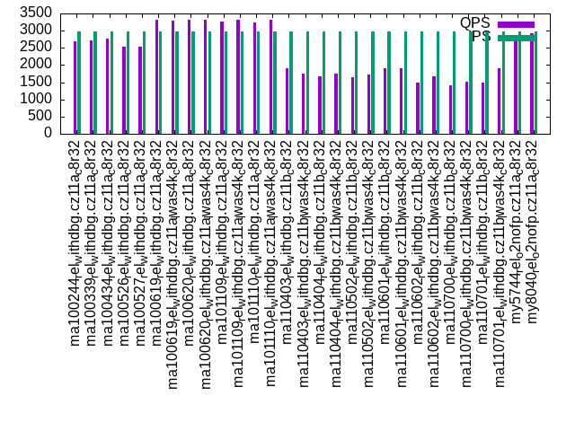

This is a report for the insert benchmark with 900M docs and 6 client(s). It is generated by scripts (bash, awk, sed) and Tufte might not be impressed. An overview of the insert benchmark is here and a short update is here. Below, by DBMS, I mean DBMS+version.config. An example is my8020.c10b40 where my means MySQL, 8020 is version 8.0.20 and c10b40 is the name for the configuration file.
The test server has 8 AMD cores, 32G RAM and an NVMe SSD. It is described here as the ASUS PN53. The benchmark was run with 6 clients and there were 1 or 3 connections per client (1 for queries or inserts without rate limits, 1+1 for rate limited inserts+deletes). It uses 6 tables with a table per client. It loads 150M rows per table without secondary indexes, creates 3 secondary indexes per table, then inserts 4m+1m rows per table with a delete per insert to avoid growing the table. It then does 6 read+write tests for 1800s each that do queries as fast as possible with 100,100,500,500,1000,1000 inserts/s and the same for deletes/s per client concurrent with the queries. The database is larger than memory. Clients and the DBMS share one server. The per-database configs are in the per-database subdirectories here.
The tested DBMS are:
The numbers are inserts/s for l.i0, l.i1 and l.i2, indexed docs (or rows) /s for l.x and queries/s for qr100, qp100 thru qr1000, qp1000" The values are the average rate over the entire test for inserts (IPS) and queries (QPS). The range of values for IPS and QPS is split into 3 parts: bottom 25%, middle 50%, top 25%. Values in the bottom 25% have a red background, values in the top 25% have a green background and values in the middle have no color. A gray background is used for values that can be ignored because the DBMS did not sustain the target insert rate. Red backgrounds are not used when the minimum value is within 80% of the max value.
| dbms | l.i0 | l.x | l.i1 | l.i2 | qr100 | qp100 | qr500 | qp500 | qr1000 | qp1000 |
|---|---|---|---|---|---|---|---|---|---|---|
| ma100244_rel_withdbg.cz11a_c8r32 | 563910 | 721154 | 6402 | 1554 | 37292 | 4409 | 32210 | 2678 | 23360 | 1443 |
| ma100339_rel_withdbg.cz11a_c8r32 | 451128 | 708661 | 5807 | 1616 | 36602 | 4496 | 32588 | 2708 | 23582 | 1496 |
| ma100434_rel_withdbg.cz11a_c8r32 | 452716 | 712589 | 5907 | 1571 | 35020 | 4431 | 30682 | 2780 | 21826 | 1507 |
| ma100526_rel_withdbg.cz11a_c8r32 | 480000 | 647948 | 3346 | 2230 | 35364 | 4404 | 30951 | 2523 | 23252 | 2230 |
| ma100527_rel_withdbg.cz11a_c8r32 | 483871 | 634250 | 3374 | 2146 | 35410 | 4422 | 30964 | 2536 | 23291 | 2262 |
| ma100619_rel_withdbg.cz11a_c8r32 | 516944 | 632467 | 5487 | 1777 | 35572 | 4882 | 29659 | 3329 | 19860 | 2150 |
| ma100619_rel_withdbg.cz11a_lwas4k_c8r32 | 519931 | 621547 | 5130 | 1962 | 35504 | 4877 | 29722 | 3295 | 19961 | 2137 |
| ma100620_rel_withdbg.cz11a_c8r32 | 515759 | 615174 | 6099 | 1670 | 35688 | 4866 | 29752 | 3315 | 20171 | 2124 |
| ma100620_rel_withdbg.cz11a_lwas4k_c8r32 | 513992 | 625434 | 6094 | 1672 | 35647 | 4867 | 29735 | 3305 | 20062 | 2135 |
| ma101109_rel_withdbg.cz11a_c8r32 | 445324 | 616861 | 5322 | 1842 | 35368 | 4783 | 29392 | 3258 | 19574 | 2096 |
| ma101109_rel_withdbg.cz11a_lwas4k_c8r32 | 468506 | 621976 | 5580 | 1718 | 35481 | 4861 | 29490 | 3314 | 20039 | 2140 |
| ma101110_rel_withdbg.cz11a_c8r32 | 445986 | 614754 | 6096 | 1668 | 35094 | 4779 | 29364 | 3248 | 19648 | 2084 |
| ma101110_rel_withdbg.cz11a_lwas4k_c8r32 | 462012 | 605246 | 6136 | 1681 | 35269 | 4869 | 29103 | 3321 | 19855 | 2141 |
| ma110403_rel_withdbg.cz11b_c8r32 | 432484 | 611413 | 1807 | 1259 | 35477 | 4410 | 27115 | 1909 | 17775 | 1141 |
| ma110403_rel_withdbg.cz11b_lwas4k_c8r32 | 462250 | 610170 | 1813 | 1267 | 35490 | 4472 | 27438 | 1754 | 17605 | 1174 |
| ma110404_rel_withdbg.cz11b_c8r32 | 445324 | 615174 | 1908 | 1212 | 35148 | 4360 | 27178 | 1680 | 19704 | 1014 |
| ma110404_rel_withdbg.cz11b_lwas4k_c8r32 | 458482 | 605246 | 1922 | 1207 | 35127 | 4464 | 27084 | 1749 | 19594 | 1030 |
| ma110502_rel_withdbg.cz11b_c8r32 | 431862 | 606061 | 1818 | 1261 | 33996 | 4355 | 26129 | 1638 | 17099 | 1086 |
| ma110502_rel_withdbg.cz11b_lwas4k_c8r32 | 455927 | 605653 | 1846 | 1244 | 34053 | 4453 | 26335 | 1722 | 16917 | 1047 |
| ma110601_rel_withdbg.cz11b_c8r32 | 434993 | 620690 | 1901 | 1108 | 33702 | 4359 | 25797 | 1899 | 16852 | 1214 |
| ma110601_rel_withdbg.cz11b_lwas4k_c8r32 | 434363 | 607288 | 1816 | 1276 | 33588 | 4429 | 26178 | 1904 | 16998 | 1037 |
| ma110602_rel_withdbg.cz11b_c8r32 | 434783 | 617708 | 1909 | 1210 | 33799 | 4313 | 26047 | 1477 | 18898 | 1009 |
| ma110602_rel_withdbg.cz11b_lwas4k_c8r32 | 434363 | 612245 | 1921 | 1210 | 33711 | 4381 | 26086 | 1659 | 19142 | 1032 |
| ma110700_rel_withdbg.cz11b_c8r32 | 431448 | 614334 | 1915 | 1209 | 33795 | 4304 | 25808 | 1422 | 19103 | 1006 |
| ma110700_rel_withdbg.cz11b_lwas4k_c8r32 | 458015 | 607288 | 1913 | 1208 | 33860 | 4418 | 26318 | 1523 | 19044 | 1023 |
| ma110701_rel_withdbg.cz11b_c8r32 | 435414 | 618557 | 1917 | 1207 | 33716 | 4341 | 26055 | 1481 | 18989 | 1005 |
| ma110701_rel_withdbg.cz11b_lwas4k_c8r32 | 457317 | 618557 | 1918 | 1215 | 33778 | 4435 | 26126 | 1897 | 19211 | 1031 |
| my5744_rel_o2nofp.cz11a_c8r32 | 572884 | 689127 | 18154 | 1350 | 38589 | 4416 | 34696 | 2715 | 29244 | 2056 |
| my8040_rel_o2nofp.cz11a_c8r32 | 433944 | 729927 | 16701 | 1497 | 36585 | 4587 | 33387 | 2936 | 27807 | 2433 |
This table has relative throughput, throughput for the DBMS relative to the DBMS in the first line, using the absolute throughput from the previous table. Values less than 0.95 have a yellow background. Values greater than 1.05 have a blue background.
| dbms | l.i0 | l.x | l.i1 | l.i2 | qr100 | qp100 | qr500 | qp500 | qr1000 | qp1000 |
|---|---|---|---|---|---|---|---|---|---|---|
| ma100244_rel_withdbg.cz11a_c8r32 | 1.00 | 1.00 | 1.00 | 1.00 | 1.00 | 1.00 | 1.00 | 1.00 | 1.00 | 1.00 |
| ma100339_rel_withdbg.cz11a_c8r32 | 0.80 | 0.98 | 0.91 | 1.04 | 0.98 | 1.02 | 1.01 | 1.01 | 1.01 | 1.04 |
| ma100434_rel_withdbg.cz11a_c8r32 | 0.80 | 0.99 | 0.92 | 1.01 | 0.94 | 1.00 | 0.95 | 1.04 | 0.93 | 1.04 |
| ma100526_rel_withdbg.cz11a_c8r32 | 0.85 | 0.90 | 0.52 | 1.44 | 0.95 | 1.00 | 0.96 | 0.94 | 1.00 | 1.55 |
| ma100527_rel_withdbg.cz11a_c8r32 | 0.86 | 0.88 | 0.53 | 1.38 | 0.95 | 1.00 | 0.96 | 0.95 | 1.00 | 1.57 |
| ma100619_rel_withdbg.cz11a_c8r32 | 0.92 | 0.88 | 0.86 | 1.14 | 0.95 | 1.11 | 0.92 | 1.24 | 0.85 | 1.49 |
| ma100619_rel_withdbg.cz11a_lwas4k_c8r32 | 0.92 | 0.86 | 0.80 | 1.26 | 0.95 | 1.11 | 0.92 | 1.23 | 0.85 | 1.48 |
| ma100620_rel_withdbg.cz11a_c8r32 | 0.91 | 0.85 | 0.95 | 1.07 | 0.96 | 1.10 | 0.92 | 1.24 | 0.86 | 1.47 |
| ma100620_rel_withdbg.cz11a_lwas4k_c8r32 | 0.91 | 0.87 | 0.95 | 1.08 | 0.96 | 1.10 | 0.92 | 1.23 | 0.86 | 1.48 |
| ma101109_rel_withdbg.cz11a_c8r32 | 0.79 | 0.86 | 0.83 | 1.19 | 0.95 | 1.08 | 0.91 | 1.22 | 0.84 | 1.45 |
| ma101109_rel_withdbg.cz11a_lwas4k_c8r32 | 0.83 | 0.86 | 0.87 | 1.11 | 0.95 | 1.10 | 0.92 | 1.24 | 0.86 | 1.48 |
| ma101110_rel_withdbg.cz11a_c8r32 | 0.79 | 0.85 | 0.95 | 1.07 | 0.94 | 1.08 | 0.91 | 1.21 | 0.84 | 1.44 |
| ma101110_rel_withdbg.cz11a_lwas4k_c8r32 | 0.82 | 0.84 | 0.96 | 1.08 | 0.95 | 1.10 | 0.90 | 1.24 | 0.85 | 1.48 |
| ma110403_rel_withdbg.cz11b_c8r32 | 0.77 | 0.85 | 0.28 | 0.81 | 0.95 | 1.00 | 0.84 | 0.71 | 0.76 | 0.79 |
| ma110403_rel_withdbg.cz11b_lwas4k_c8r32 | 0.82 | 0.85 | 0.28 | 0.82 | 0.95 | 1.01 | 0.85 | 0.65 | 0.75 | 0.81 |
| ma110404_rel_withdbg.cz11b_c8r32 | 0.79 | 0.85 | 0.30 | 0.78 | 0.94 | 0.99 | 0.84 | 0.63 | 0.84 | 0.70 |
| ma110404_rel_withdbg.cz11b_lwas4k_c8r32 | 0.81 | 0.84 | 0.30 | 0.78 | 0.94 | 1.01 | 0.84 | 0.65 | 0.84 | 0.71 |
| ma110502_rel_withdbg.cz11b_c8r32 | 0.77 | 0.84 | 0.28 | 0.81 | 0.91 | 0.99 | 0.81 | 0.61 | 0.73 | 0.75 |
| ma110502_rel_withdbg.cz11b_lwas4k_c8r32 | 0.81 | 0.84 | 0.29 | 0.80 | 0.91 | 1.01 | 0.82 | 0.64 | 0.72 | 0.73 |
| ma110601_rel_withdbg.cz11b_c8r32 | 0.77 | 0.86 | 0.30 | 0.71 | 0.90 | 0.99 | 0.80 | 0.71 | 0.72 | 0.84 |
| ma110601_rel_withdbg.cz11b_lwas4k_c8r32 | 0.77 | 0.84 | 0.28 | 0.82 | 0.90 | 1.00 | 0.81 | 0.71 | 0.73 | 0.72 |
| ma110602_rel_withdbg.cz11b_c8r32 | 0.77 | 0.86 | 0.30 | 0.78 | 0.91 | 0.98 | 0.81 | 0.55 | 0.81 | 0.70 |
| ma110602_rel_withdbg.cz11b_lwas4k_c8r32 | 0.77 | 0.85 | 0.30 | 0.78 | 0.90 | 0.99 | 0.81 | 0.62 | 0.82 | 0.72 |
| ma110700_rel_withdbg.cz11b_c8r32 | 0.77 | 0.85 | 0.30 | 0.78 | 0.91 | 0.98 | 0.80 | 0.53 | 0.82 | 0.70 |
| ma110700_rel_withdbg.cz11b_lwas4k_c8r32 | 0.81 | 0.84 | 0.30 | 0.78 | 0.91 | 1.00 | 0.82 | 0.57 | 0.82 | 0.71 |
| ma110701_rel_withdbg.cz11b_c8r32 | 0.77 | 0.86 | 0.30 | 0.78 | 0.90 | 0.98 | 0.81 | 0.55 | 0.81 | 0.70 |
| ma110701_rel_withdbg.cz11b_lwas4k_c8r32 | 0.81 | 0.86 | 0.30 | 0.78 | 0.91 | 1.01 | 0.81 | 0.71 | 0.82 | 0.71 |
| my5744_rel_o2nofp.cz11a_c8r32 | 1.02 | 0.96 | 2.84 | 0.87 | 1.03 | 1.00 | 1.08 | 1.01 | 1.25 | 1.42 |
| my8040_rel_o2nofp.cz11a_c8r32 | 0.77 | 1.01 | 2.61 | 0.96 | 0.98 | 1.04 | 1.04 | 1.10 | 1.19 | 1.69 |
This lists the average rate of inserts/s for the tests that do inserts concurrent with queries. For such tests the query rate is listed in the table above. The read+write tests are setup so that the insert rate should match the target rate every second. Cells that are not at least 95% of the target have a red background to indicate a failure to satisfy the target.
| dbms | qr100.L1 | qp100.L2 | qr500.L3 | qp500.L4 | qr1000.L5 | qp1000.L6 |
|---|---|---|---|---|---|---|
| ma100244_rel_withdbg.cz11a_c8r32 | 597 | 598 | 2987 | 2988 | 5980 | 5977 |
| ma100339_rel_withdbg.cz11a_c8r32 | 597 | 598 | 2987 | 2988 | 5977 | 5977 |
| ma100434_rel_withdbg.cz11a_c8r32 | 598 | 598 | 2987 | 2988 | 5977 | 5841 |
| ma100526_rel_withdbg.cz11a_c8r32 | 598 | 598 | 2988 | 2987 | 4745 | 2191 |
| ma100527_rel_withdbg.cz11a_c8r32 | 597 | 598 | 2987 | 2988 | 4758 | 2144 |
| ma100619_rel_withdbg.cz11a_c8r32 | 598 | 597 | 2988 | 2988 | 5980 | 5973 |
| ma100619_rel_withdbg.cz11a_lwas4k_c8r32 | 597 | 597 | 2987 | 2988 | 5977 | 5973 |
| ma100620_rel_withdbg.cz11a_c8r32 | 598 | 597 | 2987 | 2988 | 5977 | 5977 |
| ma100620_rel_withdbg.cz11a_lwas4k_c8r32 | 598 | 598 | 2988 | 2988 | 5980 | 5977 |
| ma101109_rel_withdbg.cz11a_c8r32 | 598 | 597 | 2988 | 2987 | 5980 | 5973 |
| ma101109_rel_withdbg.cz11a_lwas4k_c8r32 | 598 | 598 | 2987 | 2988 | 5977 | 5977 |
| ma101110_rel_withdbg.cz11a_c8r32 | 598 | 598 | 2988 | 2987 | 5980 | 5977 |
| ma101110_rel_withdbg.cz11a_lwas4k_c8r32 | 598 | 598 | 2987 | 2988 | 5977 | 5977 |
| ma110403_rel_withdbg.cz11b_c8r32 | 598 | 598 | 2987 | 2987 | 2682 | 1983 |
| ma110403_rel_withdbg.cz11b_lwas4k_c8r32 | 597 | 598 | 2988 | 2985 | 2682 | 2005 |
| ma110404_rel_withdbg.cz11b_c8r32 | 597 | 598 | 2988 | 2985 | 3185 | 2457 |
| ma110404_rel_withdbg.cz11b_lwas4k_c8r32 | 597 | 598 | 2988 | 2987 | 3170 | 2445 |
| ma110502_rel_withdbg.cz11b_c8r32 | 598 | 598 | 2987 | 2987 | 2673 | 2056 |
| ma110502_rel_withdbg.cz11b_lwas4k_c8r32 | 598 | 598 | 2987 | 2983 | 2662 | 2095 |
| ma110601_rel_withdbg.cz11b_c8r32 | 597 | 598 | 2987 | 2985 | 2667 | 1972 |
| ma110601_rel_withdbg.cz11b_lwas4k_c8r32 | 597 | 598 | 2988 | 2987 | 2685 | 2115 |
| ma110602_rel_withdbg.cz11b_c8r32 | 597 | 598 | 2987 | 2985 | 3172 | 2469 |
| ma110602_rel_withdbg.cz11b_lwas4k_c8r32 | 598 | 598 | 2988 | 2985 | 3176 | 2466 |
| ma110700_rel_withdbg.cz11b_c8r32 | 598 | 598 | 2987 | 2983 | 3145 | 2442 |
| ma110700_rel_withdbg.cz11b_lwas4k_c8r32 | 597 | 597 | 2988 | 2985 | 3175 | 2447 |
| ma110701_rel_withdbg.cz11b_c8r32 | 598 | 598 | 2988 | 2983 | 3177 | 2461 |
| ma110701_rel_withdbg.cz11b_lwas4k_c8r32 | 597 | 598 | 2987 | 2987 | 3203 | 2466 |
| my5744_rel_o2nofp.cz11a_c8r32 | 598 | 598 | 2987 | 2988 | 5980 | 5977 |
| my8040_rel_o2nofp.cz11a_c8r32 | 598 | 598 | 2988 | 2988 | 5973 | 5977 |
| target | 600 | 600 | 3000 | 3000 | 6000 | 6000 |
l.i0: load without secondary indexes. Graphs for performance per 1-second interval are here.
Average throughput:
Insert response time histogram: each cell has the percentage of responses that take <= the time in the header and max is the max response time in seconds. For the max column values in the top 25% of the range have a red background and in the bottom 25% of the range have a green background. The red background is not used when the min value is within 80% of the max value.
| dbms | 256us | 1ms | 4ms | 16ms | 64ms | 256ms | 1s | 4s | 16s | gt | max |
|---|---|---|---|---|---|---|---|---|---|---|---|
| ma100244_rel_withdbg.cz11a_c8r32 | 65.615 | 33.903 | 0.372 | 0.084 | 0.025 | 0.002 | 0.341 | ||||
| ma100339_rel_withdbg.cz11a_c8r32 | 44.953 | 54.334 | 0.582 | 0.105 | 0.023 | 0.003 | 0.331 | ||||
| ma100434_rel_withdbg.cz11a_c8r32 | 44.344 | 55.042 | 0.514 | 0.074 | 0.021 | 0.004 | 0.344 | ||||
| ma100526_rel_withdbg.cz11a_c8r32 | 58.376 | 41.004 | 0.385 | 0.172 | 0.057 | 0.005 | 0.347 | ||||
| ma100527_rel_withdbg.cz11a_c8r32 | 58.607 | 40.759 | 0.411 | 0.165 | 0.055 | 0.003 | 0.324 | ||||
| ma100619_rel_withdbg.cz11a_c8r32 | 60.545 | 38.953 | 0.388 | 0.085 | 0.024 | 0.005 | 0.375 | ||||
| ma100619_rel_withdbg.cz11a_lwas4k_c8r32 | 61.515 | 37.988 | 0.389 | 0.079 | 0.024 | 0.005 | 0.717 | ||||
| ma100620_rel_withdbg.cz11a_c8r32 | 60.306 | 39.203 | 0.383 | 0.080 | 0.024 | 0.004 | 0.388 | ||||
| ma100620_rel_withdbg.cz11a_lwas4k_c8r32 | 59.757 | 39.749 | 0.395 | 0.072 | 0.025 | 0.003 | 0.330 | ||||
| ma101109_rel_withdbg.cz11a_c8r32 | 41.221 | 58.161 | 0.446 | 0.141 | 0.024 | 0.008 | 0.391 | ||||
| ma101109_rel_withdbg.cz11a_lwas4k_c8r32 | 49.397 | 49.869 | 0.610 | 0.096 | 0.023 | 0.005 | 0.436 | ||||
| ma101110_rel_withdbg.cz11a_c8r32 | 39.902 | 59.507 | 0.465 | 0.096 | 0.027 | 0.002 | 0.364 | ||||
| ma101110_rel_withdbg.cz11a_lwas4k_c8r32 | 48.552 | 50.768 | 0.553 | 0.099 | 0.024 | 0.004 | 0.375 | ||||
| ma110403_rel_withdbg.cz11b_c8r32 | 39.897 | 59.465 | 0.456 | 0.140 | 0.032 | 0.009 | 0.724 | ||||
| ma110403_rel_withdbg.cz11b_lwas4k_c8r32 | 49.411 | 49.861 | 0.589 | 0.111 | 0.025 | 0.003 | 0.396 | ||||
| ma110404_rel_withdbg.cz11b_c8r32 | 39.681 | 59.728 | 0.476 | 0.086 | 0.029 | 0.001 | 0.373 | ||||
| ma110404_rel_withdbg.cz11b_lwas4k_c8r32 | 48.900 | 50.429 | 0.528 | 0.114 | 0.025 | 0.004 | 0.365 | ||||
| ma110502_rel_withdbg.cz11b_c8r32 | 41.052 | 58.313 | 0.456 | 0.140 | 0.031 | 0.008 | 0.604 | ||||
| ma110502_rel_withdbg.cz11b_lwas4k_c8r32 | 50.027 | 49.199 | 0.631 | 0.114 | 0.025 | 0.005 | 0.402 | ||||
| ma110601_rel_withdbg.cz11b_c8r32 | 39.103 | 60.276 | 0.484 | 0.108 | 0.027 | 0.002 | 0.451 | ||||
| ma110601_rel_withdbg.cz11b_lwas4k_c8r32 | 48.866 | 50.358 | 0.605 | 0.104 | 0.063 | 0.004 | 0.377 | ||||
| ma110602_rel_withdbg.cz11b_c8r32 | 39.064 | 60.323 | 0.499 | 0.084 | 0.029 | 0.002 | 0.387 | ||||
| ma110602_rel_withdbg.cz11b_lwas4k_c8r32 | 48.778 | 50.498 | 0.560 | 0.097 | 0.062 | 0.004 | 0.391 | ||||
| ma110700_rel_withdbg.cz11b_c8r32 | 42.044 | 57.350 | 0.424 | 0.143 | 0.031 | 0.009 | 0.670 | ||||
| ma110700_rel_withdbg.cz11b_lwas4k_c8r32 | 50.540 | 48.772 | 0.542 | 0.116 | 0.027 | 0.002 | 0.387 | ||||
| ma110701_rel_withdbg.cz11b_c8r32 | 39.269 | 60.145 | 0.447 | 0.110 | 0.027 | 0.003 | 0.417 | ||||
| ma110701_rel_withdbg.cz11b_lwas4k_c8r32 | 50.034 | 49.291 | 0.530 | 0.115 | 0.026 | 0.004 | 0.443 | ||||
| my5744_rel_o2nofp.cz11a_c8r32 | 60.798 | 38.963 | 0.168 | 0.059 | 0.010 | 0.001 | 0.324 | ||||
| my8040_rel_o2nofp.cz11a_c8r32 | 52.648 | 46.987 | 0.151 | 0.073 | 0.139 | 0.001 | 0.459 |
Performance metrics for the DBMS listed above. Some are normalized by throughput, others are not. Legend for results is here.
ips qps rps rmbps wps wmbps rpq rkbpq wpi wkbpi csps cpups cspq cpupq dbgb1 dbgb2 rss maxop p50 p99 tag 563910 0 1 0.0 3875.3 208.4 0.000 0.000 0.007 0.378 36775 82.2 0.065 12 59.2 90.1 24.2 0.341 97715 73042 ma100244_rel_withdbg.cz11a_c8r32 451128 0 1 0.0 3204.5 178.0 0.000 0.000 0.007 0.404 38037 86.5 0.084 15 59.2 90.1 24.1 0.331 78022 55782 ma100339_rel_withdbg.cz11a_c8r32 452716 0 1 0.0 3139.4 175.9 0.000 0.000 0.007 0.398 37894 87.1 0.084 15 59.2 90.1 NA 0.344 78416 56544 ma100434_rel_withdbg.cz11a_c8r32 480000 0 1 0.0 3403.8 144.7 0.000 0.000 0.007 0.309 47791 82.2 0.100 14 59.2 90.1 23.5 0.347 82339 59230 ma100526_rel_withdbg.cz11a_c8r32 483871 0 1 0.0 3429.0 146.0 0.000 0.000 0.007 0.309 47598 82.4 0.098 14 59.2 90.1 23.5 0.324 83741 61072 ma100527_rel_withdbg.cz11a_c8r32 516944 0 1 0.0 3142.0 145.0 0.000 0.000 0.006 0.287 48969 85.3 0.095 13 59.2 90.1 23.5 0.375 89078 65835 ma100619_rel_withdbg.cz11a_c8r32 519931 0 1 0.0 3158.9 145.9 0.000 0.000 0.006 0.287 47071 85.6 0.091 13 59.2 90.1 23.4 0.717 89331 66316 ma100619_rel_withdbg.cz11a_lwas4k_c8r32 515759 0 1 0.0 3127.5 144.6 0.000 0.000 0.006 0.287 47924 85.9 0.093 13 59.2 90.1 23.4 0.388 87125 64335 ma100620_rel_withdbg.cz11a_c8r32 513992 0 1 0.0 3120.6 144.2 0.000 0.000 0.006 0.287 48085 85.9 0.094 13 59.2 90.1 23.4 0.330 87177 65440 ma100620_rel_withdbg.cz11a_lwas4k_c8r32 445324 0 2510 9.8 2744.8 129.0 0.006 0.023 0.006 0.297 58517 76.4 0.131 14 59.2 90.1 23.5 0.391 75316 52539 ma101109_rel_withdbg.cz11a_c8r32 468506 0 1 0.0 2886.6 135.5 0.000 0.000 0.006 0.296 55836 79.6 0.119 14 59.2 90.1 23.5 0.436 80516 60637 ma101109_rel_withdbg.cz11a_lwas4k_c8r32 445986 0 2500 9.8 2746.9 129.0 0.006 0.022 0.006 0.296 60774 77.2 0.136 14 59.2 90.1 23.4 0.364 75024 56043 ma101110_rel_withdbg.cz11a_c8r32 462012 0 1 0.0 2842.7 133.6 0.000 0.000 0.006 0.296 57669 79.8 0.125 14 59.2 90.1 23.4 0.375 77907 55039 ma101110_rel_withdbg.cz11a_lwas4k_c8r32 432484 0 2479 9.7 2695.0 125.2 0.006 0.023 0.006 0.297 60419 75.7 0.140 14 59.2 90.1 23.5 0.724 73908 45550 ma110403_rel_withdbg.cz11b_c8r32 462250 0 1 0.0 2878.1 133.8 0.000 0.000 0.006 0.296 56502 79.2 0.122 14 59.2 90.1 23.5 0.396 79776 61612 ma110403_rel_withdbg.cz11b_lwas4k_c8r32 445324 0 2486 9.7 2771.5 128.8 0.006 0.022 0.006 0.296 61911 77.5 0.139 14 59.2 90.1 23.4 0.373 74625 55344 ma110404_rel_withdbg.cz11b_c8r32 458482 0 1 0.0 2855.0 132.7 0.000 0.000 0.006 0.296 59143 79.5 0.129 14 59.2 90.1 23.4 0.365 77223 53379 ma110404_rel_withdbg.cz11b_lwas4k_c8r32 431862 0 2513 9.8 2693.3 125.1 0.006 0.023 0.006 0.297 59657 76.4 0.138 14 59.2 90.1 23.5 0.604 73564 47451 ma110502_rel_withdbg.cz11b_c8r32 455927 0 1 0.0 2841.7 132.1 0.000 0.000 0.006 0.297 55909 79.9 0.123 14 59.2 90.1 23.5 0.402 78413 58941 ma110502_rel_withdbg.cz11b_lwas4k_c8r32 434993 0 2529 9.9 2713.2 126.2 0.006 0.023 0.006 0.297 60373 77.4 0.139 14 59.2 90.1 23.5 0.451 73556 55154 ma110601_rel_withdbg.cz11b_c8r32 434363 0 1 0.0 2710.1 125.8 0.000 0.000 0.006 0.297 54769 76.8 0.126 14 59.2 90.1 23.1 0.377 74430 48381 ma110601_rel_withdbg.cz11b_lwas4k_c8r32 434783 0 2481 9.7 2706.2 125.7 0.006 0.023 0.006 0.296 61647 78.0 0.142 14 59.2 90.1 23.4 0.387 73063 53636 ma110602_rel_withdbg.cz11b_c8r32 434363 0 1 0.0 2705.9 125.7 0.000 0.000 0.006 0.296 56816 77.2 0.131 14 59.2 90.1 23.0 0.391 72339 47053 ma110602_rel_withdbg.cz11b_lwas4k_c8r32 431448 0 2462 9.6 2686.0 124.8 0.006 0.023 0.006 0.296 60288 76.4 0.140 14 59.2 90.1 23.4 0.670 73327 44354 ma110700_rel_withdbg.cz11b_c8r32 458015 0 1 0.0 2848.9 132.4 0.000 0.000 0.006 0.296 56831 80.5 0.124 14 59.2 90.1 23.4 0.387 77017 54626 ma110700_rel_withdbg.cz11b_lwas4k_c8r32 435414 0 2492 9.7 2714.0 126.0 0.006 0.023 0.006 0.296 62313 77.1 0.143 14 59.2 90.1 23.4 0.417 73419 53868 ma110701_rel_withdbg.cz11b_c8r32 457317 0 1 0.0 2845.8 132.4 0.000 0.000 0.006 0.296 58018 80.1 0.127 14 59.2 90.1 23.4 0.443 76314 54472 ma110701_rel_withdbg.cz11b_lwas4k_c8r32 572884 0 1 0.0 3740.2 205.1 0.000 0.000 0.007 0.367 39151 84.1 0.068 12 59.2 89.8 25.1 0.324 99401 74067 my5744_rel_o2nofp.cz11a_c8r32 433944 0 1 0.0 3136.9 162.6 0.000 0.000 0.007 0.384 36426 77.8 0.084 14 59.0 89.6 25.2 0.459 74626 49147 my8040_rel_o2nofp.cz11a_c8r32
l.x: create secondary indexes.
Average throughput:
Performance metrics for the DBMS listed above. Some are normalized by throughput, others are not. Legend for results is here.
ips qps rps rmbps wps wmbps rpq rkbpq wpi wkbpi csps cpups cspq cpupq dbgb1 dbgb2 rss maxop p50 p99 tag 721154 0 6965 614.3 8707.1 746.4 0.010 0.872 0.012 1.060 19731 56.0 0.027 6 136.3 167.1 24.4 0.001 NA NA ma100244_rel_withdbg.cz11a_c8r32 708661 0 6837 602.7 8531.2 732.2 0.010 0.871 0.012 1.058 19826 55.2 0.028 6 136.3 167.1 24.4 0.002 NA NA ma100339_rel_withdbg.cz11a_c8r32 712589 0 6902 607.3 8522.1 735.8 0.010 0.873 0.012 1.057 18768 55.0 0.026 6 134.9 165.7 NA 0.001 NA NA ma100434_rel_withdbg.cz11a_c8r32 647948 0 6263 552.2 7544.4 632.1 0.010 0.873 0.012 0.999 21084 58.1 0.033 7 134.9 165.7 23.8 0.002 NA NA ma100526_rel_withdbg.cz11a_c8r32 634250 0 6124 538.9 7560.9 620.1 0.010 0.870 0.012 1.001 20196 57.2 0.032 7 134.9 165.7 23.8 0.001 NA NA ma100527_rel_withdbg.cz11a_c8r32 632467 0 6719 548.2 7414.2 617.7 0.011 0.888 0.012 1.000 21358 55.0 0.034 7 125.5 156.3 23.6 0.003 NA NA ma100619_rel_withdbg.cz11a_c8r32 621547 0 6651 539.5 7439.0 609.5 0.011 0.889 0.012 1.004 20658 54.9 0.033 7 125.5 156.3 23.6 0.006 NA NA ma100619_rel_withdbg.cz11a_lwas4k_c8r32 615174 0 6581 534.1 7418.7 604.2 0.011 0.889 0.012 1.006 20668 55.1 0.034 7 125.5 156.3 23.6 0.005 NA NA ma100620_rel_withdbg.cz11a_c8r32 625434 0 6698 542.8 7229.1 609.2 0.011 0.889 0.012 0.998 20759 55.3 0.033 7 125.5 156.3 23.6 0.003 NA NA ma100620_rel_withdbg.cz11a_lwas4k_c8r32 616861 0 6337 502.2 7346.4 602.9 0.010 0.834 0.012 1.001 21522 56.2 0.035 7 125.5 156.3 23.6 0.002 NA NA ma101109_rel_withdbg.cz11a_c8r32 621976 0 6600 538.6 7083.9 602.4 0.011 0.887 0.011 0.992 19941 55.5 0.032 7 125.5 156.3 23.6 0.007 NA NA ma101109_rel_withdbg.cz11a_lwas4k_c8r32 614754 0 6592 534.0 7306.7 600.8 0.011 0.889 0.012 1.001 20356 56.3 0.033 7 125.5 156.3 23.6 0.002 NA NA ma101110_rel_withdbg.cz11a_c8r32 605246 0 6476 525.1 7187.2 590.7 0.011 0.888 0.012 0.999 19861 55.3 0.033 7 125.5 156.3 23.6 0.003 NA NA ma101110_rel_withdbg.cz11a_lwas4k_c8r32 611413 0 6523 530.1 7260.3 596.8 0.011 0.888 0.012 0.999 20028 56.3 0.033 7 125.5 156.3 23.6 0.002 NA NA ma110403_rel_withdbg.cz11b_c8r32 610170 0 6511 528.3 7028.2 591.5 0.011 0.887 0.012 0.993 19751 55.5 0.032 7 125.5 156.3 23.6 0.006 NA NA ma110403_rel_withdbg.cz11b_lwas4k_c8r32 615174 0 6612 533.7 6940.2 594.8 0.011 0.888 0.011 0.990 19561 55.6 0.032 7 125.5 156.3 23.6 0.004 NA NA ma110404_rel_withdbg.cz11b_c8r32 605246 0 6367 511.5 7186.2 590.6 0.011 0.865 0.012 0.999 21088 55.5 0.035 7 125.5 156.3 23.6 0.004 NA NA ma110404_rel_withdbg.cz11b_lwas4k_c8r32 606061 0 6480 525.1 7184.7 590.8 0.011 0.887 0.012 0.998 19923 55.4 0.033 7 125.5 156.3 23.6 0.003 NA NA ma110502_rel_withdbg.cz11b_c8r32 605653 0 6471 525.1 7192.7 590.8 0.011 0.888 0.012 0.999 20035 55.5 0.033 7 125.5 156.3 23.6 0.002 NA NA ma110502_rel_withdbg.cz11b_lwas4k_c8r32 620690 0 6637 537.9 7151.5 601.7 0.011 0.887 0.012 0.993 19915 55.7 0.032 7 125.5 156.3 23.6 0.003 NA NA ma110601_rel_withdbg.cz11b_c8r32 607288 0 6494 526.6 7204.5 592.6 0.011 0.888 0.012 0.999 19921 55.2 0.033 7 125.5 156.3 23.3 0.006 NA NA ma110601_rel_withdbg.cz11b_lwas4k_c8r32 617708 0 6618 535.7 7059.8 598.5 0.011 0.888 0.011 0.992 19853 55.5 0.032 7 125.5 156.3 23.6 0.005 NA NA ma110602_rel_withdbg.cz11b_c8r32 612245 0 6384 528.5 7236.3 596.4 0.010 0.884 0.012 0.998 19916 55.8 0.033 7 125.5 156.3 23.3 0.003 NA NA ma110602_rel_withdbg.cz11b_lwas4k_c8r32 614334 0 6572 532.3 7285.9 598.8 0.011 0.887 0.012 0.998 20434 56.2 0.033 7 125.5 156.3 23.6 0.003 NA NA ma110700_rel_withdbg.cz11b_c8r32 607288 0 6496 526.8 7216.6 592.7 0.011 0.888 0.012 0.999 20089 55.4 0.033 7 125.5 156.3 23.6 0.002 NA NA ma110700_rel_withdbg.cz11b_lwas4k_c8r32 618557 0 6614 536.0 7337.4 603.0 0.011 0.887 0.012 0.998 20536 56.4 0.033 7 125.5 156.3 23.6 0.003 NA NA ma110701_rel_withdbg.cz11b_c8r32 618557 0 6604 535.9 7085.9 598.9 0.011 0.887 0.011 0.992 19793 55.6 0.032 7 125.5 156.3 23.6 0.007 NA NA ma110701_rel_withdbg.cz11b_lwas4k_c8r32 689127 0 6597 579.6 9898.7 723.6 0.010 0.861 0.014 1.075 30609 53.8 0.044 6 136.3 166.8 25.3 0.001 NA NA my5744_rel_o2nofp.cz11a_c8r32 729927 0 8660 801.0 14865.4 913.9 0.012 1.124 0.020 1.282 28127 92.1 0.039 10 135.8 166.4 25.3 0.003 NA NA my8040_rel_o2nofp.cz11a_c8r32
l.i1: continue load after secondary indexes created with 50 inserts per transaction. Graphs for performance per 1-second interval are here.
Average throughput:
Insert response time histogram: each cell has the percentage of responses that take <= the time in the header and max is the max response time in seconds. For the max column values in the top 25% of the range have a red background and in the bottom 25% of the range have a green background. The red background is not used when the min value is within 80% of the max value.
| dbms | 256us | 1ms | 4ms | 16ms | 64ms | 256ms | 1s | 4s | 16s | gt | max |
|---|---|---|---|---|---|---|---|---|---|---|---|
| ma100244_rel_withdbg.cz11a_c8r32 | 4.327 | 75.892 | 19.780 | nonzero | 0.288 | ||||||
| ma100339_rel_withdbg.cz11a_c8r32 | 6.595 | 71.816 | 19.551 | 2.038 | 0.387 | ||||||
| ma100434_rel_withdbg.cz11a_c8r32 | 6.128 | 72.033 | 20.126 | 1.712 | 0.001 | 1.170 | |||||
| ma100526_rel_withdbg.cz11a_c8r32 | 0.407 | 67.275 | 20.355 | 11.961 | 0.001 | 1.612 | |||||
| ma100527_rel_withdbg.cz11a_c8r32 | 0.427 | 67.014 | 21.031 | 11.527 | 0.001 | 1.403 | |||||
| ma100619_rel_withdbg.cz11a_c8r32 | 9.364 | 69.313 | 16.054 | 5.268 | 0.001 | 2.056 | |||||
| ma100619_rel_withdbg.cz11a_lwas4k_c8r32 | 9.534 | 68.080 | 15.543 | 6.842 | 0.001 | 1.203 | |||||
| ma100620_rel_withdbg.cz11a_c8r32 | 10.211 | 68.485 | 18.046 | 3.257 | nonzero | 1.283 | |||||
| ma100620_rel_withdbg.cz11a_lwas4k_c8r32 | 10.378 | 68.070 | 18.273 | 3.278 | 0.001 | 2.420 | |||||
| ma101109_rel_withdbg.cz11a_c8r32 | 8.833 | 69.053 | 16.370 | 5.743 | 0.771 | ||||||
| ma101109_rel_withdbg.cz11a_lwas4k_c8r32 | 10.029 | 67.929 | 17.129 | 4.912 | 0.001 | 1.983 | |||||
| ma101110_rel_withdbg.cz11a_c8r32 | 9.799 | 67.869 | 19.216 | 3.117 | 0.862 | ||||||
| ma101110_rel_withdbg.cz11a_lwas4k_c8r32 | 10.581 | 67.674 | 18.515 | 3.230 | 0.898 | ||||||
| ma110403_rel_withdbg.cz11b_c8r32 | 6.179 | 46.413 | 22.908 | 22.810 | 1.685 | 0.002 | 0.003 | 65.800 | |||
| ma110403_rel_withdbg.cz11b_lwas4k_c8r32 | 6.220 | 45.715 | 23.468 | 22.950 | 1.642 | 0.003 | 0.003 | 66.507 | |||
| ma110404_rel_withdbg.cz11b_c8r32 | 0.065 | 9.103 | 84.063 | 6.692 | 0.056 | 0.014 | 0.007 | 126.804 | |||
| ma110404_rel_withdbg.cz11b_lwas4k_c8r32 | 0.077 | 9.070 | 84.049 | 6.735 | 0.047 | 0.016 | 0.006 | 129.311 | |||
| ma110502_rel_withdbg.cz11b_c8r32 | 6.208 | 46.685 | 22.404 | 23.021 | 1.676 | 0.005 | 0.002 | 66.260 | |||
| ma110502_rel_withdbg.cz11b_lwas4k_c8r32 | 6.309 | 44.293 | 26.771 | 21.012 | 1.608 | 0.006 | 0.002 | 64.045 | |||
| ma110601_rel_withdbg.cz11b_c8r32 | 6.504 | 46.755 | 24.841 | 20.212 | 1.683 | 0.003 | 0.002 | 66.584 | |||
| ma110601_rel_withdbg.cz11b_lwas4k_c8r32 | 6.278 | 45.434 | 24.166 | 22.453 | 1.665 | 0.003 | 0.001 | 48.277 | |||
| ma110602_rel_withdbg.cz11b_c8r32 | 0.072 | 8.747 | 84.499 | 6.603 | 0.057 | 0.016 | 0.006 | 127.144 | |||
| ma110602_rel_withdbg.cz11b_lwas4k_c8r32 | 0.073 | 9.225 | 83.898 | 6.737 | 0.044 | 0.016 | 0.006 | 129.748 | |||
| ma110700_rel_withdbg.cz11b_c8r32 | 0.079 | 9.418 | 83.849 | 6.573 | 0.062 | 0.013 | 0.006 | 128.929 | |||
| ma110700_rel_withdbg.cz11b_lwas4k_c8r32 | 0.078 | 9.370 | 83.663 | 6.814 | 0.052 | 0.017 | 0.006 | 127.648 | |||
| ma110701_rel_withdbg.cz11b_c8r32 | 0.073 | 9.581 | 83.617 | 6.652 | 0.052 | 0.018 | 0.006 | 128.644 | |||
| ma110701_rel_withdbg.cz11b_lwas4k_c8r32 | 0.079 | 9.105 | 83.987 | 6.756 | 0.057 | 0.011 | 0.006 | 129.594 | |||
| my5744_rel_o2nofp.cz11a_c8r32 | 12.950 | 62.094 | 20.836 | 4.113 | 0.007 | 0.357 | |||||
| my8040_rel_o2nofp.cz11a_c8r32 | 10.174 | 64.141 | 20.609 | 5.060 | 0.016 | 0.518 |
Delete response time histogram: each cell has the percentage of responses that take <= the time in the header and max is the max response time in seconds. For the max column values in the top 25% of the range have a red background and in the bottom 25% of the range have a green background. The red background is not used when the min value is within 80% of the max value.
| dbms | 256us | 1ms | 4ms | 16ms | 64ms | 256ms | 1s | 4s | 16s | gt | max |
|---|---|---|---|---|---|---|---|---|---|---|---|
| ma100244_rel_withdbg.cz11a_c8r32 | 15.964 | 76.828 | 7.208 | 0.170 | |||||||
| ma100339_rel_withdbg.cz11a_c8r32 | 19.436 | 71.547 | 6.990 | 2.027 | 0.382 | ||||||
| ma100434_rel_withdbg.cz11a_c8r32 | 19.107 | 71.935 | 7.245 | 1.712 | nonzero | 1.094 | |||||
| ma100526_rel_withdbg.cz11a_c8r32 | 0.875 | 78.160 | 9.048 | 11.915 | 0.001 | 1.553 | |||||
| ma100527_rel_withdbg.cz11a_c8r32 | 0.934 | 78.597 | 8.974 | 11.494 | 0.001 | 1.347 | |||||
| ma100619_rel_withdbg.cz11a_c8r32 | 22.368 | 64.530 | 7.930 | 5.171 | 0.001 | 1.996 | |||||
| ma100619_rel_withdbg.cz11a_lwas4k_c8r32 | 22.247 | 63.307 | 7.702 | 6.744 | 0.001 | 1.134 | |||||
| ma100620_rel_withdbg.cz11a_c8r32 | 21.677 | 65.742 | 9.397 | 3.184 | nonzero | 1.204 | |||||
| ma100620_rel_withdbg.cz11a_lwas4k_c8r32 | 21.773 | 65.401 | 9.624 | 3.201 | 0.001 | 2.077 | |||||
| ma101109_rel_withdbg.cz11a_c8r32 | 21.941 | 64.114 | 8.291 | 5.653 | 0.726 | ||||||
| ma101109_rel_withdbg.cz11a_lwas4k_c8r32 | 22.966 | 63.141 | 9.066 | 4.826 | 0.001 | 1.861 | |||||
| ma101110_rel_withdbg.cz11a_c8r32 | 21.574 | 64.991 | 10.378 | 3.057 | 0.815 | ||||||
| ma101110_rel_withdbg.cz11a_lwas4k_c8r32 | 22.472 | 64.481 | 9.858 | 3.189 | 0.858 | ||||||
| ma110403_rel_withdbg.cz11b_c8r32 | 11.399 | 43.738 | 22.272 | 21.141 | 1.447 | 0.001 | 0.002 | 39.875 | |||
| ma110403_rel_withdbg.cz11b_lwas4k_c8r32 | 11.432 | 43.031 | 22.884 | 21.244 | 1.405 | 0.001 | 0.001 | 48.554 | |||
| ma110404_rel_withdbg.cz11b_c8r32 | 0.400 | 12.059 | 81.633 | 5.847 | 0.048 | 0.009 | 0.005 | 126.795 | |||
| ma110404_rel_withdbg.cz11b_lwas4k_c8r32 | 0.359 | 12.893 | 80.748 | 5.945 | 0.040 | 0.010 | 0.005 | 129.422 | |||
| ma110502_rel_withdbg.cz11b_c8r32 | 11.429 | 44.026 | 21.804 | 21.293 | 1.445 | 0.002 | 0.001 | 56.462 | |||
| ma110502_rel_withdbg.cz11b_lwas4k_c8r32 | 11.282 | 42.127 | 25.859 | 19.348 | 1.380 | 0.003 | 0.001 | 43.622 | |||
| ma110601_rel_withdbg.cz11b_c8r32 | 11.579 | 44.755 | 23.615 | 18.588 | 1.459 | 0.003 | 0.001 | 51.544 | |||
| ma110601_rel_withdbg.cz11b_lwas4k_c8r32 | 11.515 | 43.496 | 22.833 | 20.718 | 1.434 | 0.002 | 0.001 | 36.196 | |||
| ma110602_rel_withdbg.cz11b_c8r32 | 0.397 | 11.690 | 82.071 | 5.781 | 0.047 | 0.010 | 0.004 | 124.895 | |||
| ma110602_rel_withdbg.cz11b_lwas4k_c8r32 | 0.415 | 12.455 | 81.116 | 5.962 | 0.037 | 0.011 | 0.004 | 129.742 | |||
| ma110700_rel_withdbg.cz11b_c8r32 | 0.440 | 12.236 | 81.426 | 5.832 | 0.051 | 0.010 | 0.005 | 128.857 | |||
| ma110700_rel_withdbg.cz11b_lwas4k_c8r32 | 0.402 | 12.337 | 81.211 | 5.989 | 0.045 | 0.010 | 0.005 | 129.450 | |||
| ma110701_rel_withdbg.cz11b_c8r32 | 0.432 | 12.327 | 81.281 | 5.898 | 0.044 | 0.012 | 0.005 | 127.311 | |||
| ma110701_rel_withdbg.cz11b_lwas4k_c8r32 | 0.405 | 12.060 | 81.504 | 5.971 | 0.047 | 0.007 | 0.004 | 129.594 | |||
| my5744_rel_o2nofp.cz11a_c8r32 | 38.056 | 55.496 | 6.030 | 0.412 | 0.007 | 0.379 | |||||
| my8040_rel_o2nofp.cz11a_c8r32 | 31.639 | 59.280 | 7.186 | 1.878 | 0.017 | 0.485 |
Performance metrics for the DBMS listed above. Some are normalized by throughput, others are not. Legend for results is here.
ips qps rps rmbps wps wmbps rpq rkbpq wpi wkbpi csps cpups cspq cpupq dbgb1 dbgb2 rss maxop p50 p99 tag 6402 0 28162 440.0 36531.3 1012.4 4.399 70.386 5.707 161.941 93338 39.9 14.580 499 186.2 218.1 24.4 0.288 1099 549 ma100244_rel_withdbg.cz11a_c8r32 5807 0 27421 428.5 35170.0 976.8 4.722 75.555 6.057 172.256 93138 32.9 16.039 453 185.8 217.9 24.4 0.387 1099 150 ma100339_rel_withdbg.cz11a_c8r32 5907 0 27708 432.9 35508.2 986.2 4.691 75.053 6.011 170.967 94847 33.2 16.057 450 185.8 217.9 NA 1.170 1099 150 ma100434_rel_withdbg.cz11a_c8r32 3346 0 19344 302.3 20995.7 580.6 5.782 92.505 6.275 177.706 135277 22.9 40.432 548 184.7 217.0 23.8 1.612 699 150 ma100526_rel_withdbg.cz11a_c8r32 3374 0 19424 303.5 20988.5 579.6 5.757 92.106 6.220 175.887 135879 23.0 40.271 545 184.7 217.0 23.8 1.403 699 150 ma100527_rel_withdbg.cz11a_c8r32 5487 0 27908 436.1 27048.6 747.7 5.086 81.382 4.930 139.533 162903 30.9 29.689 451 170.5 202.8 23.9 2.056 1049 150 ma100619_rel_withdbg.cz11a_c8r32 5130 0 27391 428.0 25935.2 717.5 5.339 85.426 5.055 143.209 159146 29.8 31.021 465 170.6 202.8 23.9 1.203 999 150 ma100619_rel_withdbg.cz11a_lwas4k_c8r32 6099 0 29541 461.6 29154.5 806.0 4.844 77.496 4.780 135.323 163141 32.5 26.748 426 170.9 203.1 23.6 1.283 1149 150 ma100620_rel_withdbg.cz11a_c8r32 6094 0 29514 461.2 29220.3 807.1 4.843 77.484 4.795 135.612 163560 32.4 26.838 425 170.9 203.1 23.6 2.420 1149 150 ma100620_rel_withdbg.cz11a_lwas4k_c8r32 5322 0 27787 431.2 26488.4 732.2 5.222 82.982 4.978 140.890 162326 30.6 30.504 460 170.4 202.7 23.7 0.771 1049 150 ma101109_rel_withdbg.cz11a_c8r32 5580 0 28022 437.8 27327.8 754.3 5.022 80.350 4.897 138.419 164268 30.9 29.439 443 170.6 202.8 24.0 1.983 1049 150 ma101109_rel_withdbg.cz11a_lwas4k_c8r32 6096 0 29757 461.6 29110.6 804.2 4.881 77.537 4.775 135.095 164759 32.8 27.027 430 170.9 203.0 23.6 0.862 1149 150 ma101110_rel_withdbg.cz11a_c8r32 6136 0 29731 464.6 29356.7 811.0 4.845 77.520 4.784 135.331 163290 32.6 26.610 425 170.9 203.1 23.6 0.898 1149 150 ma101110_rel_withdbg.cz11a_lwas4k_c8r32 1807 0 9712 150.8 9486.4 250.5 5.375 85.465 5.250 141.982 66618 12.0 36.871 531 170.7 202.9 23.9 65.800 200 0 ma110403_rel_withdbg.cz11b_c8r32 1813 0 9724 151.9 9561.0 252.4 5.364 85.829 5.274 142.568 67442 12.1 37.203 534 170.7 202.9 23.9 66.507 200 0 ma110403_rel_withdbg.cz11b_lwas4k_c8r32 1908 0 9352 145.1 9177.9 242.3 4.901 77.882 4.810 130.018 66826 11.8 35.024 495 170.9 203.1 23.6 126.804 300 0 ma110404_rel_withdbg.cz11b_c8r32 1922 0 9338 145.9 9211.6 243.6 4.858 77.733 4.792 129.786 66968 11.9 34.841 495 170.9 203.1 23.2 129.311 300 0 ma110404_rel_withdbg.cz11b_lwas4k_c8r32 1818 0 9758 151.5 9528.7 251.7 5.369 85.361 5.242 141.780 67341 12.0 37.050 528 170.7 202.9 23.9 66.260 200 0 ma110502_rel_withdbg.cz11b_c8r32 1846 0 9635 150.5 9580.6 253.0 5.218 83.489 5.189 140.290 67688 12.0 36.660 520 170.7 202.9 24.0 64.045 200 0 ma110502_rel_withdbg.cz11b_lwas4k_c8r32 1901 0 9580 148.7 9642.5 254.3 5.039 80.083 5.072 136.956 67733 11.9 35.626 501 170.7 202.9 24.0 66.584 250 0 ma110601_rel_withdbg.cz11b_c8r32 1816 0 9813 153.3 9624.4 254.2 5.404 86.464 5.300 143.353 68069 12.1 37.487 533 170.6 202.8 23.6 48.277 200 0 ma110601_rel_withdbg.cz11b_lwas4k_c8r32 1909 0 9356 145.2 9174.8 242.2 4.901 77.875 4.806 129.933 67131 11.9 35.164 499 170.9 203.1 23.6 127.144 300 0 ma110602_rel_withdbg.cz11b_c8r32 1921 0 9342 146.0 9208.5 243.3 4.864 77.826 4.795 129.743 67427 11.9 35.107 496 170.9 203.1 23.3 129.748 300 0 ma110602_rel_withdbg.cz11b_lwas4k_c8r32 1915 0 9381 145.6 9183.7 242.8 4.899 77.849 4.796 129.826 66806 11.8 34.888 493 170.9 203.1 23.6 128.929 300 0 ma110700_rel_withdbg.cz11b_c8r32 1913 0 9308 145.4 9171.7 242.5 4.866 77.857 4.795 129.807 67122 11.8 35.091 494 170.9 203.1 23.6 127.648 300 0 ma110700_rel_withdbg.cz11b_lwas4k_c8r32 1917 0 9410 146.0 9225.3 243.1 4.908 77.988 4.812 129.851 67443 11.9 35.176 497 170.9 203.1 23.6 128.644 300 0 ma110701_rel_withdbg.cz11b_c8r32 1918 0 9332 145.8 9221.5 243.6 4.867 77.866 4.809 130.057 67367 11.9 35.131 496 170.9 203.1 23.6 129.594 300 0 ma110701_rel_withdbg.cz11b_lwas4k_c8r32 18154 0 15761 246.3 26271.0 789.4 0.868 13.890 1.447 44.524 81871 56.6 4.510 249 188.8 229.6 25.3 0.357 3097 599 my5744_rel_o2nofp.cz11a_c8r32 16701 0 14293 223.3 27350.5 758.8 0.856 13.692 1.638 46.522 126379 60.7 7.567 291 188.0 228.2 25.3 0.518 3046 599 my8040_rel_o2nofp.cz11a_c8r32
l.i2: continue load after secondary indexes created with 5 inserts per transaction. Graphs for performance per 1-second interval are here.
Average throughput:
Insert response time histogram: each cell has the percentage of responses that take <= the time in the header and max is the max response time in seconds. For the max column values in the top 25% of the range have a red background and in the bottom 25% of the range have a green background. The red background is not used when the min value is within 80% of the max value.
| dbms | 256us | 1ms | 4ms | 16ms | 64ms | 256ms | 1s | 4s | 16s | gt | max |
|---|---|---|---|---|---|---|---|---|---|---|---|
| ma100244_rel_withdbg.cz11a_c8r32 | 0.166 | 29.543 | 28.312 | 41.660 | 0.319 | 0.129 | |||||
| ma100339_rel_withdbg.cz11a_c8r32 | 0.339 | 32.740 | 28.175 | 38.395 | 0.351 | 0.114 | |||||
| ma100434_rel_withdbg.cz11a_c8r32 | 0.283 | 32.177 | 27.924 | 39.240 | 0.376 | 0.134 | |||||
| ma100526_rel_withdbg.cz11a_c8r32 | nonzero | 0.305 | 35.766 | 39.547 | 23.692 | 0.689 | 0.001 | 0.482 | |||
| ma100527_rel_withdbg.cz11a_c8r32 | nonzero | 0.263 | 32.708 | 41.176 | 25.043 | 0.808 | 0.001 | 0.521 | |||
| ma100619_rel_withdbg.cz11a_c8r32 | nonzero | 0.485 | 46.627 | 20.819 | 31.450 | 0.617 | nonzero | 0.001 | 3.025 | ||
| ma100619_rel_withdbg.cz11a_lwas4k_c8r32 | 0.556 | 49.144 | 22.274 | 27.098 | 0.925 | 0.001 | 0.002 | 3.893 | |||
| ma100620_rel_withdbg.cz11a_c8r32 | nonzero | 0.477 | 43.008 | 15.888 | 40.452 | 0.174 | 0.112 | ||||
| ma100620_rel_withdbg.cz11a_lwas4k_c8r32 | nonzero | 0.488 | 42.958 | 15.918 | 40.462 | 0.174 | 0.116 | ||||
| ma101109_rel_withdbg.cz11a_c8r32 | 0.304 | 45.962 | 20.207 | 33.247 | 0.278 | 0.001 | 0.002 | 3.482 | |||
| ma101109_rel_withdbg.cz11a_lwas4k_c8r32 | 0.485 | 48.005 | 22.129 | 27.932 | 1.449 | 0.001 | 0.001 | 3.897 | |||
| ma101110_rel_withdbg.cz11a_c8r32 | 0.297 | 43.585 | 15.728 | 40.204 | 0.186 | 0.120 | |||||
| ma101110_rel_withdbg.cz11a_lwas4k_c8r32 | nonzero | 0.492 | 43.360 | 15.640 | 40.334 | 0.175 | 0.107 | ||||
| ma110403_rel_withdbg.cz11b_c8r32 | 0.119 | 19.584 | 37.432 | 34.306 | 8.525 | 0.032 | 0.002 | 0.001 | 4.045 | ||
| ma110403_rel_withdbg.cz11b_lwas4k_c8r32 | 0.179 | 21.625 | 36.182 | 34.426 | 7.551 | 0.036 | 0.001 | 0.001 | 4.059 | ||
| ma110404_rel_withdbg.cz11b_c8r32 | 0.093 | 15.164 | 30.945 | 53.196 | 0.599 | 0.004 | nonzero | 1.369 | |||
| ma110404_rel_withdbg.cz11b_lwas4k_c8r32 | nonzero | 0.136 | 16.007 | 30.029 | 53.257 | 0.566 | 0.004 | nonzero | 1.410 | ||
| ma110502_rel_withdbg.cz11b_c8r32 | 0.105 | 19.304 | 37.376 | 37.249 | 5.933 | 0.031 | 0.001 | 0.001 | 5.054 | ||
| ma110502_rel_withdbg.cz11b_lwas4k_c8r32 | 0.138 | 19.178 | 35.902 | 39.232 | 5.516 | 0.032 | 0.001 | 1.325 | |||
| ma110601_rel_withdbg.cz11b_c8r32 | 0.091 | 16.602 | 33.870 | 39.155 | 10.243 | 0.036 | 0.003 | 3.705 | |||
| ma110601_rel_withdbg.cz11b_lwas4k_c8r32 | nonzero | 0.161 | 18.576 | 33.371 | 46.738 | 1.115 | 0.037 | 0.002 | 2.321 | ||
| ma110602_rel_withdbg.cz11b_c8r32 | 0.078 | 14.928 | 30.994 | 53.410 | 0.587 | 0.003 | nonzero | 1.124 | |||
| ma110602_rel_withdbg.cz11b_lwas4k_c8r32 | 0.137 | 15.979 | 30.425 | 52.884 | 0.571 | 0.004 | nonzero | 1.260 | |||
| ma110700_rel_withdbg.cz11b_c8r32 | 0.083 | 15.034 | 30.743 | 53.518 | 0.618 | 0.004 | nonzero | 1.549 | |||
| ma110700_rel_withdbg.cz11b_lwas4k_c8r32 | 0.129 | 16.021 | 30.032 | 53.239 | 0.576 | 0.005 | 0.969 | ||||
| ma110701_rel_withdbg.cz11b_c8r32 | 0.086 | 14.944 | 30.832 | 53.540 | 0.592 | 0.006 | 0.923 | ||||
| ma110701_rel_withdbg.cz11b_lwas4k_c8r32 | nonzero | 0.131 | 16.215 | 30.305 | 52.784 | 0.560 | 0.005 | nonzero | 1.186 | ||
| my5744_rel_o2nofp.cz11a_c8r32 | 0.020 | 12.411 | 24.732 | 7.429 | 55.166 | 0.243 | nonzero | 0.261 | |||
| my8040_rel_o2nofp.cz11a_c8r32 | 5.219 | 7.966 | 33.771 | 52.781 | 0.262 | 0.001 | 0.698 |
Delete response time histogram: each cell has the percentage of responses that take <= the time in the header and max is the max response time in seconds. For the max column values in the top 25% of the range have a red background and in the bottom 25% of the range have a green background. The red background is not used when the min value is within 80% of the max value.
| dbms | 256us | 1ms | 4ms | 16ms | 64ms | 256ms | 1s | 4s | 16s | gt | max |
|---|---|---|---|---|---|---|---|---|---|---|---|
| ma100244_rel_withdbg.cz11a_c8r32 | nonzero | 0.540 | 33.660 | 23.992 | 41.529 | 0.278 | 0.130 | ||||
| ma100339_rel_withdbg.cz11a_c8r32 | 0.001 | 1.366 | 37.947 | 22.143 | 38.274 | 0.269 | 0.110 | ||||
| ma100434_rel_withdbg.cz11a_c8r32 | nonzero | 1.168 | 37.319 | 22.107 | 39.119 | 0.285 | 0.120 | ||||
| ma100526_rel_withdbg.cz11a_c8r32 | 0.001 | 0.935 | 49.871 | 25.745 | 23.059 | 0.388 | 0.001 | 0.408 | |||
| ma100527_rel_withdbg.cz11a_c8r32 | 0.001 | 0.840 | 47.210 | 27.158 | 24.348 | 0.441 | 0.001 | 0.470 | |||
| ma100619_rel_withdbg.cz11a_c8r32 | nonzero | 1.426 | 49.239 | 17.696 | 31.352 | 0.285 | nonzero | 0.001 | 3.025 | ||
| ma100619_rel_withdbg.cz11a_lwas4k_c8r32 | 0.001 | 1.594 | 51.934 | 18.918 | 27.154 | 0.398 | 0.001 | 0.002 | 3.893 | ||
| ma100620_rel_withdbg.cz11a_c8r32 | nonzero | 1.441 | 44.671 | 13.641 | 40.109 | 0.138 | 0.113 | ||||
| ma100620_rel_withdbg.cz11a_lwas4k_c8r32 | 0.001 | 1.487 | 44.608 | 13.687 | 40.077 | 0.140 | 0.126 | ||||
| ma101109_rel_withdbg.cz11a_c8r32 | nonzero | 0.881 | 48.304 | 17.788 | 32.856 | 0.168 | 0.001 | 0.001 | 3.483 | ||
| ma101109_rel_withdbg.cz11a_lwas4k_c8r32 | 0.001 | 1.407 | 50.663 | 18.997 | 28.281 | 0.651 | 0.001 | 0.001 | 3.896 | ||
| ma101110_rel_withdbg.cz11a_c8r32 | nonzero | 0.909 | 45.193 | 14.011 | 39.744 | 0.142 | 0.102 | ||||
| ma101110_rel_withdbg.cz11a_lwas4k_c8r32 | 0.001 | 1.488 | 44.913 | 13.489 | 39.970 | 0.140 | 0.097 | ||||
| ma110403_rel_withdbg.cz11b_c8r32 | nonzero | 0.273 | 28.175 | 32.109 | 32.100 | 7.326 | 0.015 | 0.002 | nonzero | 4.022 | |
| ma110403_rel_withdbg.cz11b_lwas4k_c8r32 | nonzero | 0.422 | 30.876 | 29.922 | 32.619 | 6.138 | 0.021 | 0.001 | 0.001 | 4.059 | |
| ma110404_rel_withdbg.cz11b_c8r32 | 0.221 | 22.607 | 26.467 | 50.303 | 0.400 | 0.003 | 0.864 | ||||
| ma110404_rel_withdbg.cz11b_lwas4k_c8r32 | nonzero | 0.328 | 23.790 | 25.086 | 50.421 | 0.372 | 0.003 | nonzero | 1.386 | ||
| ma110502_rel_withdbg.cz11b_c8r32 | 0.239 | 27.866 | 32.205 | 35.234 | 4.440 | 0.015 | 0.001 | 0.001 | 5.056 | ||
| ma110502_rel_withdbg.cz11b_lwas4k_c8r32 | nonzero | 0.346 | 28.452 | 29.526 | 37.561 | 4.097 | 0.016 | 0.001 | 1.324 | ||
| ma110601_rel_withdbg.cz11b_c8r32 | nonzero | 0.218 | 24.443 | 29.253 | 37.000 | 9.066 | 0.019 | 0.002 | 2.970 | ||
| ma110601_rel_withdbg.cz11b_lwas4k_c8r32 | nonzero | 0.398 | 26.539 | 27.963 | 44.267 | 0.814 | 0.017 | 0.002 | 2.318 | ||
| ma110602_rel_withdbg.cz11b_c8r32 | nonzero | 0.208 | 22.376 | 26.572 | 50.456 | 0.387 | 0.002 | 0.954 | |||
| ma110602_rel_withdbg.cz11b_lwas4k_c8r32 | nonzero | 0.335 | 23.725 | 25.438 | 50.125 | 0.372 | 0.004 | nonzero | 1.186 | ||
| ma110700_rel_withdbg.cz11b_c8r32 | 0.212 | 22.505 | 26.286 | 50.585 | 0.409 | 0.003 | nonzero | 1.033 | |||
| ma110700_rel_withdbg.cz11b_lwas4k_c8r32 | nonzero | 0.329 | 23.751 | 25.115 | 50.418 | 0.383 | 0.004 | nonzero | 1.381 | ||
| ma110701_rel_withdbg.cz11b_c8r32 | 0.205 | 22.273 | 26.536 | 50.592 | 0.391 | 0.004 | 0.813 | ||||
| ma110701_rel_withdbg.cz11b_lwas4k_c8r32 | nonzero | 0.333 | 24.090 | 25.105 | 50.098 | 0.370 | 0.004 | nonzero | 1.160 | ||
| my5744_rel_o2nofp.cz11a_c8r32 | 0.113 | 36.170 | 8.069 | 0.313 | 55.204 | 0.131 | nonzero | 0.290 | |||
| my8040_rel_o2nofp.cz11a_c8r32 | 4.442 | 11.614 | 32.139 | 51.620 | 0.185 | 0.001 | 0.689 |
Performance metrics for the DBMS listed above. Some are normalized by throughput, others are not. Legend for results is here.
ips qps rps rmbps wps wmbps rpq rkbpq wpi wkbpi csps cpups cspq cpupq dbgb1 dbgb2 rss maxop p50 p99 tag 1554 0 20262 316.6 25295.0 706.9 13.043 208.686 16.283 465.937 65791 31.6 42.350 1627 186.6 218.6 24.3 0.129 125 100 ma100244_rel_withdbg.cz11a_c8r32 1616 0 19885 310.7 25090.3 703.1 12.309 196.939 15.531 445.646 71631 26.6 44.340 1317 185.8 217.9 24.2 0.114 120 90 ma100339_rel_withdbg.cz11a_c8r32 1571 0 19916 311.2 25027.1 701.3 12.681 202.892 15.935 457.231 71847 26.6 45.745 1355 185.8 217.9 NA 0.134 115 90 ma100434_rel_withdbg.cz11a_c8r32 2230 0 17654 275.8 17362.0 485.4 7.918 126.687 7.787 222.943 123973 24.4 55.603 875 184.7 217.0 23.8 0.482 140 80 ma100526_rel_withdbg.cz11a_c8r32 2146 0 17515 273.7 17518.6 488.7 8.162 130.596 8.164 233.181 123769 24.0 57.677 895 184.7 217.0 23.8 0.521 145 75 ma100527_rel_withdbg.cz11a_c8r32 1777 0 20657 322.8 15731.0 442.3 11.624 185.977 8.852 254.868 120213 24.3 67.642 1094 170.5 202.8 23.9 3.025 115 80 ma100619_rel_withdbg.cz11a_c8r32 1962 0 20848 325.7 16409.5 461.2 10.626 170.012 8.364 240.688 121982 24.8 62.172 1011 170.6 202.8 23.9 3.893 115 80 ma100619_rel_withdbg.cz11a_lwas4k_c8r32 1670 0 21274 332.4 16115.0 452.5 12.737 203.784 9.648 277.383 119758 23.8 71.699 1140 170.9 203.1 23.5 0.112 125 95 ma100620_rel_withdbg.cz11a_c8r32 1672 0 21309 333.0 16134.5 453.0 12.747 203.954 9.652 277.471 120029 23.7 71.801 1134 170.9 203.1 23.5 0.116 125 100 ma100620_rel_withdbg.cz11a_lwas4k_c8r32 1842 0 21197 325.2 15920.9 447.4 11.507 180.785 8.643 248.685 123085 24.5 66.818 1064 170.4 202.7 23.6 3.482 125 90 ma101109_rel_withdbg.cz11a_c8r32 1718 0 20724 323.8 15702.1 441.1 12.061 192.983 9.139 262.880 120318 23.8 70.026 1108 170.6 202.8 23.9 3.897 100 75 ma101109_rel_withdbg.cz11a_lwas4k_c8r32 1668 0 21688 333.6 16076.1 451.2 13.002 204.807 9.638 276.996 120979 23.9 72.529 1146 170.9 203.0 23.5 0.120 125 100 ma101110_rel_withdbg.cz11a_c8r32 1681 0 21404 334.4 16195.3 454.5 12.736 203.772 9.637 276.955 119908 23.6 71.348 1123 170.9 203.1 23.6 0.107 125 100 ma101110_rel_withdbg.cz11a_lwas4k_c8r32 1259 0 14099 216.3 10954.6 293.9 11.200 175.965 8.702 239.049 88197 17.3 70.058 1099 170.7 202.9 23.9 4.045 95 60 ma110403_rel_withdbg.cz11b_c8r32 1267 0 13686 213.9 10936.4 293.4 10.804 172.864 8.633 237.129 87298 17.2 68.912 1086 170.7 202.9 23.9 4.059 95 60 ma110403_rel_withdbg.cz11b_lwas4k_c8r32 1212 0 15783 242.8 11873.0 318.3 13.019 205.125 9.794 268.839 93622 18.2 77.227 1201 170.9 203.1 23.6 1.369 115 85 ma110404_rel_withdbg.cz11b_c8r32 1207 0 15405 240.7 11838.4 317.3 12.759 204.143 9.805 269.117 92219 18.0 76.378 1193 170.9 203.1 23.2 1.410 115 85 ma110404_rel_withdbg.cz11b_lwas4k_c8r32 1261 0 14080 216.0 10917.1 292.9 11.165 175.422 8.658 237.861 88598 17.4 70.260 1104 170.7 202.9 24.0 5.054 95 60 ma110502_rel_withdbg.cz11b_c8r32 1244 0 14077 220.0 10931.0 293.3 11.311 180.983 8.783 241.360 88713 17.6 71.284 1131 170.7 202.9 24.0 1.325 100 60 ma110502_rel_withdbg.cz11b_lwas4k_c8r32 1108 0 14101 216.8 10684.4 286.4 12.724 200.367 9.641 264.657 87697 16.8 79.135 1213 170.7 202.9 24.0 3.705 95 55 ma110601_rel_withdbg.cz11b_c8r32 1276 0 13712 214.2 11017.4 295.5 10.742 171.865 8.631 237.046 88301 17.3 69.174 1084 170.6 202.8 23.7 2.321 115 70 ma110601_rel_withdbg.cz11b_lwas4k_c8r32 1210 0 15750 242.3 11848.7 317.6 13.018 205.098 9.793 268.804 93664 18.2 77.415 1203 170.9 203.1 23.5 1.124 115 85 ma110602_rel_withdbg.cz11b_c8r32 1210 0 15434 241.2 11865.0 318.0 12.751 204.023 9.803 269.047 92854 18.2 76.714 1203 170.9 203.1 23.3 1.260 115 85 ma110602_rel_withdbg.cz11b_lwas4k_c8r32 1209 0 15738 242.2 11847.7 317.6 13.020 205.152 9.802 269.029 93758 18.2 77.569 1205 170.9 203.1 23.6 1.549 115 85 ma110700_rel_withdbg.cz11b_c8r32 1208 0 15394 240.5 11834.9 317.2 12.747 203.948 9.800 268.965 92855 18.2 76.886 1206 170.9 203.1 23.6 0.969 115 85 ma110700_rel_withdbg.cz11b_lwas4k_c8r32 1207 0 15715 241.8 11873.1 317.2 13.015 205.060 9.834 269.047 93899 18.4 77.769 1219 170.9 203.1 23.6 0.923 115 85 ma110701_rel_withdbg.cz11b_c8r32 1215 0 15492 242.1 11901.1 319.0 12.753 204.041 9.797 268.898 93410 18.3 76.893 1205 170.9 203.1 23.6 1.186 115 85 ma110701_rel_withdbg.cz11b_lwas4k_c8r32 1350 0 17361 271.3 22382.7 628.1 12.859 205.744 16.579 476.360 62530 28.9 46.315 1712 188.9 229.7 25.2 0.261 125 100 my5744_rel_o2nofp.cz11a_c8r32 1497 0 18467 288.5 26387.6 671.4 12.339 197.430 17.632 459.394 134426 35.2 89.821 1882 188.1 228.4 25.3 0.698 155 110 my8040_rel_o2nofp.cz11a_c8r32
qr100.L1: range queries with 100 insert/s per client. Graphs for performance per 1-second interval are here.
Average throughput:
Query response time histogram: each cell has the percentage of responses that take <= the time in the header and max is the max response time in seconds. For max values in the top 25% of the range have a red background and in the bottom 25% of the range have a green background. The red background is not used when the min value is within 80% of the max value.
| dbms | 256us | 1ms | 4ms | 16ms | 64ms | 256ms | 1s | 4s | 16s | gt | max |
|---|---|---|---|---|---|---|---|---|---|---|---|
| ma100244_rel_withdbg.cz11a_c8r32 | 99.225 | 0.690 | 0.082 | 0.004 | nonzero | 0.045 | |||||
| ma100339_rel_withdbg.cz11a_c8r32 | 99.218 | 0.697 | 0.082 | 0.003 | nonzero | 0.028 | |||||
| ma100434_rel_withdbg.cz11a_c8r32 | 99.041 | 0.866 | 0.089 | 0.003 | nonzero | 0.024 | |||||
| ma100526_rel_withdbg.cz11a_c8r32 | 99.113 | 0.791 | 0.089 | 0.007 | 0.016 | ||||||
| ma100527_rel_withdbg.cz11a_c8r32 | 99.098 | 0.806 | 0.089 | 0.007 | nonzero | 0.022 | |||||
| ma100619_rel_withdbg.cz11a_c8r32 | 98.781 | 1.108 | 0.101 | 0.010 | nonzero | 0.018 | |||||
| ma100619_rel_withdbg.cz11a_lwas4k_c8r32 | 98.793 | 1.097 | 0.101 | 0.010 | 0.014 | ||||||
| ma100620_rel_withdbg.cz11a_c8r32 | 98.704 | 1.172 | 0.109 | 0.015 | 0.013 | ||||||
| ma100620_rel_withdbg.cz11a_lwas4k_c8r32 | 98.707 | 1.170 | 0.107 | 0.016 | nonzero | 0.019 | |||||
| ma101109_rel_withdbg.cz11a_c8r32 | 98.727 | 1.158 | 0.104 | 0.011 | nonzero | 0.036 | |||||
| ma101109_rel_withdbg.cz11a_lwas4k_c8r32 | 98.726 | 1.159 | 0.104 | 0.012 | 0.016 | ||||||
| ma101110_rel_withdbg.cz11a_c8r32 | 98.631 | 1.245 | 0.109 | 0.016 | 0.013 | ||||||
| ma101110_rel_withdbg.cz11a_lwas4k_c8r32 | 98.658 | 1.218 | 0.109 | 0.016 | 0.012 | ||||||
| ma110403_rel_withdbg.cz11b_c8r32 | 98.808 | 1.085 | 0.096 | 0.010 | nonzero | 0.030 | |||||
| ma110403_rel_withdbg.cz11b_lwas4k_c8r32 | 98.767 | 1.122 | 0.098 | 0.013 | nonzero | 0.028 | |||||
| ma110404_rel_withdbg.cz11b_c8r32 | 98.669 | 1.208 | 0.106 | 0.017 | nonzero | 0.028 | |||||
| ma110404_rel_withdbg.cz11b_lwas4k_c8r32 | 98.674 | 1.201 | 0.108 | 0.018 | nonzero | 0.038 | |||||
| ma110502_rel_withdbg.cz11b_c8r32 | 98.660 | 1.228 | 0.101 | 0.011 | nonzero | 0.026 | |||||
| ma110502_rel_withdbg.cz11b_lwas4k_c8r32 | 98.671 | 1.216 | 0.102 | 0.011 | nonzero | 0.027 | |||||
| ma110601_rel_withdbg.cz11b_c8r32 | 98.609 | 1.277 | 0.103 | 0.012 | nonzero | 0.028 | |||||
| ma110601_rel_withdbg.cz11b_lwas4k_c8r32 | 98.587 | 1.293 | 0.107 | 0.013 | nonzero | 0.037 | |||||
| ma110602_rel_withdbg.cz11b_c8r32 | 98.531 | 1.341 | 0.110 | 0.018 | nonzero | 0.031 | |||||
| ma110602_rel_withdbg.cz11b_lwas4k_c8r32 | 98.527 | 1.342 | 0.113 | 0.018 | nonzero | 0.038 | |||||
| ma110700_rel_withdbg.cz11b_c8r32 | 98.571 | 1.305 | 0.109 | 0.016 | nonzero | 0.027 | |||||
| ma110700_rel_withdbg.cz11b_lwas4k_c8r32 | 98.575 | 1.298 | 0.110 | 0.018 | nonzero | 0.027 | |||||
| ma110701_rel_withdbg.cz11b_c8r32 | 98.553 | 1.320 | 0.109 | 0.018 | nonzero | 0.030 | |||||
| ma110701_rel_withdbg.cz11b_lwas4k_c8r32 | 98.557 | 1.317 | 0.109 | 0.017 | nonzero | 0.030 | |||||
| my5744_rel_o2nofp.cz11a_c8r32 | 99.518 | 0.405 | 0.074 | 0.004 | nonzero | 0.017 | |||||
| my8040_rel_o2nofp.cz11a_c8r32 | 99.325 | 0.669 | 0.005 | nonzero | nonzero | 0.092 |
Insert response time histogram: each cell has the percentage of responses that take <= the time in the header and max is the max response time in seconds. For max values in the top 25% of the range have a red background and in the bottom 25% of the range have a green background. The red background is not used when the min value is within 80% of the max value.
| dbms | 256us | 1ms | 4ms | 16ms | 64ms | 256ms | 1s | 4s | 16s | gt | max |
|---|---|---|---|---|---|---|---|---|---|---|---|
| ma100244_rel_withdbg.cz11a_c8r32 | 2.333 | 97.005 | 0.662 | 0.108 | |||||||
| ma100339_rel_withdbg.cz11a_c8r32 | 17.296 | 82.542 | 0.162 | 0.102 | |||||||
| ma100434_rel_withdbg.cz11a_c8r32 | 13.148 | 86.681 | 0.171 | 0.103 | |||||||
| ma100526_rel_withdbg.cz11a_c8r32 | 2.176 | 97.681 | 0.144 | 0.075 | |||||||
| ma100527_rel_withdbg.cz11a_c8r32 | 0.852 | 98.412 | 0.736 | 0.085 | |||||||
| ma100619_rel_withdbg.cz11a_c8r32 | 24.287 | 75.708 | 0.005 | 0.064 | |||||||
| ma100619_rel_withdbg.cz11a_lwas4k_c8r32 | 26.588 | 73.412 | 0.058 | ||||||||
| ma100620_rel_withdbg.cz11a_c8r32 | 6.611 | 93.389 | 0.060 | ||||||||
| ma100620_rel_withdbg.cz11a_lwas4k_c8r32 | 4.829 | 95.167 | 0.005 | 0.066 | |||||||
| ma101109_rel_withdbg.cz11a_c8r32 | 12.171 | 87.829 | 0.055 | ||||||||
| ma101109_rel_withdbg.cz11a_lwas4k_c8r32 | 11.417 | 88.583 | 0.062 | ||||||||
| ma101110_rel_withdbg.cz11a_c8r32 | 5.903 | 94.093 | 0.005 | 0.064 | |||||||
| ma101110_rel_withdbg.cz11a_lwas4k_c8r32 | 5.713 | 94.287 | 0.063 | ||||||||
| ma110403_rel_withdbg.cz11b_c8r32 | 19.810 | 80.190 | 0.057 | ||||||||
| ma110403_rel_withdbg.cz11b_lwas4k_c8r32 | 9.185 | 90.815 | 0.056 | ||||||||
| ma110404_rel_withdbg.cz11b_c8r32 | 0.606 | 99.389 | 0.005 | 0.069 | |||||||
| ma110404_rel_withdbg.cz11b_lwas4k_c8r32 | 4.606 | 95.394 | 0.063 | ||||||||
| ma110502_rel_withdbg.cz11b_c8r32 | 15.319 | 84.681 | 0.059 | ||||||||
| ma110502_rel_withdbg.cz11b_lwas4k_c8r32 | 17.787 | 82.213 | 0.059 | ||||||||
| ma110601_rel_withdbg.cz11b_c8r32 | 14.796 | 85.204 | 0.058 | ||||||||
| ma110601_rel_withdbg.cz11b_lwas4k_c8r32 | 9.333 | 90.667 | 0.064 | ||||||||
| ma110602_rel_withdbg.cz11b_c8r32 | 0.866 | 99.130 | 0.005 | 0.065 | |||||||
| ma110602_rel_withdbg.cz11b_lwas4k_c8r32 | 0.815 | 99.181 | 0.005 | 0.068 | |||||||
| ma110700_rel_withdbg.cz11b_c8r32 | 2.384 | 97.616 | 0.060 | ||||||||
| ma110700_rel_withdbg.cz11b_lwas4k_c8r32 | 5.028 | 94.972 | 0.058 | ||||||||
| ma110701_rel_withdbg.cz11b_c8r32 | 5.741 | 94.259 | 0.058 | ||||||||
| ma110701_rel_withdbg.cz11b_lwas4k_c8r32 | 6.556 | 93.435 | 0.009 | 0.065 | |||||||
| my5744_rel_o2nofp.cz11a_c8r32 | 82.755 | 17.181 | 0.065 | 0.094 | |||||||
| my8040_rel_o2nofp.cz11a_c8r32 | 65.532 | 34.222 | 0.245 | 0.144 |
Delete response time histogram: each cell has the percentage of responses that take <= the time in the header and max is the max response time in seconds. For max values in the top 25% of the range have a red background and in the bottom 25% of the range have a green background. The red background is not used when the min value is within 80% of the max value.
| dbms | 256us | 1ms | 4ms | 16ms | 64ms | 256ms | 1s | 4s | 16s | gt | max |
|---|---|---|---|---|---|---|---|---|---|---|---|
| ma100244_rel_withdbg.cz11a_c8r32 | 30.019 | 69.935 | 0.046 | 0.084 | |||||||
| ma100339_rel_withdbg.cz11a_c8r32 | 63.417 | 36.556 | 0.028 | 0.089 | |||||||
| ma100434_rel_withdbg.cz11a_c8r32 | 56.194 | 43.773 | 0.032 | 0.085 | |||||||
| ma100526_rel_withdbg.cz11a_c8r32 | 12.491 | 87.509 | 0.057 | ||||||||
| ma100527_rel_withdbg.cz11a_c8r32 | 8.509 | 91.454 | 0.037 | 0.072 | |||||||
| ma100619_rel_withdbg.cz11a_c8r32 | 64.699 | 35.301 | 0.060 | ||||||||
| ma100619_rel_withdbg.cz11a_lwas4k_c8r32 | 67.472 | 32.528 | 0.048 | ||||||||
| ma100620_rel_withdbg.cz11a_c8r32 | 38.801 | 61.199 | 0.052 | ||||||||
| ma100620_rel_withdbg.cz11a_lwas4k_c8r32 | 36.009 | 63.991 | 0.056 | ||||||||
| ma101109_rel_withdbg.cz11a_c8r32 | 49.856 | 50.144 | 0.056 | ||||||||
| ma101109_rel_withdbg.cz11a_lwas4k_c8r32 | 50.523 | 49.477 | 0.060 | ||||||||
| ma101110_rel_withdbg.cz11a_c8r32 | 36.556 | 63.444 | 0.059 | ||||||||
| ma101110_rel_withdbg.cz11a_lwas4k_c8r32 | 37.815 | 62.185 | 0.059 | ||||||||
| ma110403_rel_withdbg.cz11b_c8r32 | 57.556 | 42.444 | 0.057 | ||||||||
| ma110403_rel_withdbg.cz11b_lwas4k_c8r32 | 43.986 | 56.014 | 0.052 | ||||||||
| ma110404_rel_withdbg.cz11b_c8r32 | 11.565 | 88.435 | 0.062 | ||||||||
| ma110404_rel_withdbg.cz11b_lwas4k_c8r32 | 33.097 | 66.903 | 0.059 | ||||||||
| ma110502_rel_withdbg.cz11b_c8r32 | 50.509 | 49.491 | 0.058 | ||||||||
| ma110502_rel_withdbg.cz11b_lwas4k_c8r32 | 54.306 | 45.694 | 0.053 | ||||||||
| ma110601_rel_withdbg.cz11b_c8r32 | 51.222 | 48.778 | 0.056 | ||||||||
| ma110601_rel_withdbg.cz11b_lwas4k_c8r32 | 42.537 | 57.463 | 0.059 | ||||||||
| ma110602_rel_withdbg.cz11b_c8r32 | 13.097 | 86.903 | 0.064 | ||||||||
| ma110602_rel_withdbg.cz11b_lwas4k_c8r32 | 14.602 | 85.394 | 0.005 | 0.069 | |||||||
| ma110700_rel_withdbg.cz11b_c8r32 | 21.769 | 78.231 | 0.056 | ||||||||
| ma110700_rel_withdbg.cz11b_lwas4k_c8r32 | 33.352 | 66.648 | 0.055 | ||||||||
| ma110701_rel_withdbg.cz11b_c8r32 | 35.634 | 64.366 | 0.055 | ||||||||
| ma110701_rel_withdbg.cz11b_lwas4k_c8r32 | 38.662 | 61.338 | 0.059 | ||||||||
| my5744_rel_o2nofp.cz11a_c8r32 | 0.028 | 96.806 | 2.954 | 0.213 | 0.043 | ||||||
| my8040_rel_o2nofp.cz11a_c8r32 | 92.824 | 6.986 | 0.130 | 0.060 | 0.111 |
Performance metrics for the DBMS listed above. Some are normalized by throughput, others are not. Legend for results is here.
ips qps rps rmbps wps wmbps rpq rkbpq wpi wkbpi csps cpups cspq cpupq dbgb1 dbgb2 rss maxop p50 p99 tag 597 37292 2856 44.6 7568.1 211.8 0.077 1.225 12.670 363.186 126262 79.2 3.386 170 186.6 218.6 24.2 0.045 6282 4715 ma100244_rel_withdbg.cz11a_c8r32 597 36602 2755 43.1 7178.9 200.9 0.075 1.204 12.019 344.334 125264 78.6 3.422 172 185.8 217.9 24.2 0.028 6170 4667 ma100339_rel_withdbg.cz11a_c8r32 598 35020 2791 43.6 7180.8 200.9 0.080 1.275 12.016 344.235 120657 78.6 3.445 180 185.8 217.9 NA 0.024 5914 4523 ma100434_rel_withdbg.cz11a_c8r32 598 35364 2719 42.5 1784.7 49.8 0.077 1.230 2.986 85.396 124041 77.8 3.508 176 184.7 217.0 23.6 0.016 5930 4635 ma100526_rel_withdbg.cz11a_c8r32 597 35410 2722 42.5 1791.5 50.0 0.077 1.230 2.999 85.721 124613 77.8 3.519 176 184.7 217.0 23.8 0.022 5978 4731 ma100527_rel_withdbg.cz11a_c8r32 598 35572 2749 43.0 1983.6 55.9 0.077 1.236 3.319 95.720 123973 77.1 3.485 173 170.5 202.8 23.5 0.018 5978 4603 ma100619_rel_withdbg.cz11a_c8r32 597 35504 2743 42.9 1970.6 55.5 0.077 1.236 3.299 95.077 123734 77.3 3.485 174 170.6 202.8 23.4 0.014 5946 4923 ma100619_rel_withdbg.cz11a_lwas4k_c8r32 598 35688 2769 43.3 2042.6 57.2 0.078 1.241 3.418 98.074 124893 77.1 3.500 173 170.9 203.1 23.5 0.013 6010 4827 ma100620_rel_withdbg.cz11a_c8r32 598 35647 2767 43.2 2035.8 57.0 0.078 1.242 3.407 97.738 124839 77.0 3.502 173 170.9 203.1 23.4 0.019 5978 4667 ma100620_rel_withdbg.cz11a_lwas4k_c8r32 598 35368 2778 43.1 1974.2 55.6 0.079 1.248 3.304 95.187 123482 77.1 3.491 174 170.4 202.7 23.2 0.036 5946 4618 ma101109_rel_withdbg.cz11a_c8r32 598 35481 2762 43.2 2010.3 56.6 0.078 1.245 3.364 96.942 123961 77.1 3.494 174 170.6 202.8 23.5 0.016 5946 4683 ma101109_rel_withdbg.cz11a_lwas4k_c8r32 598 35094 2795 43.3 2031.3 56.9 0.080 1.265 3.399 97.492 123206 77.2 3.511 176 170.9 203.0 23.5 0.013 5914 4859 ma101110_rel_withdbg.cz11a_c8r32 598 35269 2765 43.2 2031.0 56.9 0.078 1.254 3.399 97.460 123684 77.0 3.507 175 170.9 203.1 23.4 0.012 5930 4955 ma101110_rel_withdbg.cz11a_lwas4k_c8r32 598 35477 2786 43.2 2118.4 56.5 0.079 1.248 3.545 96.805 123752 77.3 3.488 174 170.7 202.9 23.5 0.030 5978 4635 ma110403_rel_withdbg.cz11b_c8r32 597 35490 2758 43.1 2104.1 56.1 0.078 1.243 3.523 96.121 123961 77.2 3.493 174 170.7 202.9 23.5 0.028 5993 4923 ma110403_rel_withdbg.cz11b_lwas4k_c8r32 597 35148 2802 43.5 2166.9 57.5 0.080 1.267 3.628 98.582 123480 77.0 3.513 175 170.9 203.1 23.4 0.028 5914 4811 ma110404_rel_withdbg.cz11b_c8r32 597 35127 2778 43.4 2161.6 57.4 0.079 1.266 3.619 98.434 123575 77.0 3.518 175 170.9 203.1 23.2 0.038 5899 4539 ma110404_rel_withdbg.cz11b_lwas4k_c8r32 598 33996 2784 43.2 2104.7 56.2 0.082 1.302 3.522 96.322 118874 77.1 3.497 181 170.7 202.9 23.5 0.026 5723 4540 ma110502_rel_withdbg.cz11b_c8r32 598 34053 2760 43.1 2105.8 56.2 0.081 1.297 3.524 96.325 118918 77.1 3.492 181 170.7 202.9 23.5 0.027 5738 4444 ma110502_rel_withdbg.cz11b_lwas4k_c8r32 597 33702 2798 43.4 2127.1 56.8 0.083 1.319 3.561 97.381 118178 76.9 3.507 183 170.7 202.9 23.5 0.028 5658 4619 ma110601_rel_withdbg.cz11b_c8r32 597 33588 2760 43.1 2106.6 56.1 0.082 1.315 3.527 96.193 117733 76.9 3.505 183 170.6 202.8 23.2 0.037 5658 4348 ma110601_rel_withdbg.cz11b_lwas4k_c8r32 597 33799 2803 43.5 2166.8 57.5 0.083 1.317 3.628 98.575 119020 76.9 3.521 182 170.9 203.1 23.5 0.031 5690 4763 ma110602_rel_withdbg.cz11b_c8r32 598 33711 2776 43.4 2161.7 57.4 0.082 1.318 3.617 98.381 118585 76.8 3.518 182 170.9 203.1 23.2 0.038 5658 4715 ma110602_rel_withdbg.cz11b_lwas4k_c8r32 598 33795 2803 43.5 2165.9 57.6 0.083 1.318 3.624 98.663 118690 77.0 3.512 182 170.9 203.1 23.5 0.027 5674 4492 ma110700_rel_withdbg.cz11b_c8r32 597 33860 2774 43.3 2157.0 57.3 0.082 1.311 3.611 98.253 119018 77.0 3.515 182 170.9 203.1 23.5 0.027 5690 4715 ma110700_rel_withdbg.cz11b_lwas4k_c8r32 598 33716 2805 43.5 2179.4 57.6 0.083 1.321 3.647 98.753 118638 76.9 3.519 182 170.9 203.1 23.5 0.030 5674 4523 ma110701_rel_withdbg.cz11b_c8r32 597 33778 2774 43.4 2166.4 57.5 0.082 1.314 3.627 98.576 118803 76.8 3.517 182 170.9 203.1 23.5 0.030 5690 4619 ma110701_rel_withdbg.cz11b_lwas4k_c8r32 598 38589 2851 44.5 3266.2 92.6 0.074 1.182 5.466 158.624 125429 78.5 3.250 163 188.9 229.7 25.2 0.017 6490 4796 my5744_rel_o2nofp.cz11a_c8r32 598 36585 2630 41.1 3677.6 95.5 0.072 1.150 6.154 163.617 122987 79.1 3.362 173 188.1 228.4 25.3 0.092 6122 5930 my8040_rel_o2nofp.cz11a_c8r32
qp100.L2: point queries with 100 insert/s per client. Graphs for performance per 1-second interval are here.
Average throughput:
Query response time histogram: each cell has the percentage of responses that take <= the time in the header and max is the max response time in seconds. For max values in the top 25% of the range have a red background and in the bottom 25% of the range have a green background. The red background is not used when the min value is within 80% of the max value.
| dbms | 256us | 1ms | 4ms | 16ms | 64ms | 256ms | 1s | 4s | 16s | gt | max |
|---|---|---|---|---|---|---|---|---|---|---|---|
| ma100244_rel_withdbg.cz11a_c8r32 | 0.003 | 24.752 | 72.832 | 2.402 | 0.011 | 0.045 | |||||
| ma100339_rel_withdbg.cz11a_c8r32 | 0.003 | 25.622 | 72.198 | 2.167 | 0.010 | 0.062 | |||||
| ma100434_rel_withdbg.cz11a_c8r32 | 0.002 | 23.363 | 74.364 | 2.261 | 0.010 | 0.048 | |||||
| ma100526_rel_withdbg.cz11a_c8r32 | 0.002 | 21.632 | 77.274 | 1.085 | 0.007 | 0.050 | |||||
| ma100527_rel_withdbg.cz11a_c8r32 | 0.002 | 22.071 | 77.120 | 0.800 | 0.007 | 0.046 | |||||
| ma100619_rel_withdbg.cz11a_c8r32 | 0.002 | 28.216 | 70.838 | 0.940 | 0.004 | 0.049 | |||||
| ma100619_rel_withdbg.cz11a_lwas4k_c8r32 | 0.003 | 28.079 | 70.969 | 0.945 | 0.004 | 0.042 | |||||
| ma100620_rel_withdbg.cz11a_c8r32 | 0.002 | 27.895 | 71.135 | 0.963 | 0.004 | 0.054 | |||||
| ma100620_rel_withdbg.cz11a_lwas4k_c8r32 | 0.002 | 27.809 | 71.219 | 0.965 | 0.004 | 0.042 | |||||
| ma101109_rel_withdbg.cz11a_c8r32 | 0.002 | 24.698 | 74.333 | 0.963 | 0.004 | 0.044 | |||||
| ma101109_rel_withdbg.cz11a_lwas4k_c8r32 | 0.003 | 27.373 | 71.639 | 0.981 | 0.004 | nonzero | 0.065 | ||||
| ma101110_rel_withdbg.cz11a_c8r32 | 0.002 | 24.460 | 74.562 | 0.972 | 0.004 | 0.046 | |||||
| ma101110_rel_withdbg.cz11a_lwas4k_c8r32 | 0.003 | 27.731 | 71.300 | 0.962 | 0.004 | 0.040 | |||||
| ma110403_rel_withdbg.cz11b_c8r32 | 0.003 | 22.378 | 76.725 | 0.884 | 0.011 | nonzero | 0.197 | ||||
| ma110403_rel_withdbg.cz11b_lwas4k_c8r32 | 0.002 | 25.016 | 74.132 | 0.840 | 0.009 | nonzero | nonzero | 0.331 | |||
| ma110404_rel_withdbg.cz11b_c8r32 | 0.002 | 22.127 | 76.928 | 0.923 | 0.020 | nonzero | nonzero | 0.330 | |||
| ma110404_rel_withdbg.cz11b_lwas4k_c8r32 | 0.002 | 25.036 | 74.064 | 0.887 | 0.011 | nonzero | nonzero | 0.458 | |||
| ma110502_rel_withdbg.cz11b_c8r32 | 0.002 | 20.876 | 78.212 | 0.898 | 0.011 | nonzero | nonzero | 0.365 | |||
| ma110502_rel_withdbg.cz11b_lwas4k_c8r32 | 0.002 | 24.060 | 75.013 | 0.914 | 0.010 | nonzero | nonzero | 0.300 | |||
| ma110601_rel_withdbg.cz11b_c8r32 | 0.002 | 20.856 | 78.261 | 0.869 | 0.011 | nonzero | nonzero | 0.328 | |||
| ma110601_rel_withdbg.cz11b_lwas4k_c8r32 | 0.002 | 23.144 | 75.937 | 0.906 | 0.010 | nonzero | nonzero | 0.361 | |||
| ma110602_rel_withdbg.cz11b_c8r32 | 0.002 | 20.540 | 78.422 | 1.018 | 0.018 | nonzero | 0.178 | ||||
| ma110602_rel_withdbg.cz11b_lwas4k_c8r32 | 0.002 | 23.053 | 75.881 | 1.044 | 0.020 | nonzero | nonzero | 0.340 | |||
| ma110700_rel_withdbg.cz11b_c8r32 | 0.002 | 20.485 | 78.404 | 1.089 | 0.019 | nonzero | nonzero | 0.469 | |||
| ma110700_rel_withdbg.cz11b_lwas4k_c8r32 | 0.002 | 22.933 | 76.169 | 0.884 | 0.011 | nonzero | nonzero | 0.420 | |||
| ma110701_rel_withdbg.cz11b_c8r32 | 0.002 | 20.346 | 78.729 | 0.911 | 0.011 | nonzero | nonzero | 0.322 | |||
| ma110701_rel_withdbg.cz11b_lwas4k_c8r32 | 0.002 | 23.205 | 75.913 | 0.869 | 0.010 | nonzero | nonzero | 0.355 | |||
| my5744_rel_o2nofp.cz11a_c8r32 | 0.003 | 22.771 | 75.920 | 1.301 | 0.006 | 0.044 | |||||
| my8040_rel_o2nofp.cz11a_c8r32 | 0.002 | 21.905 | 76.620 | 1.465 | 0.007 | 0.050 |
Insert response time histogram: each cell has the percentage of responses that take <= the time in the header and max is the max response time in seconds. For max values in the top 25% of the range have a red background and in the bottom 25% of the range have a green background. The red background is not used when the min value is within 80% of the max value.
| dbms | 256us | 1ms | 4ms | 16ms | 64ms | 256ms | 1s | 4s | 16s | gt | max |
|---|---|---|---|---|---|---|---|---|---|---|---|
| ma100244_rel_withdbg.cz11a_c8r32 | 0.106 | 97.926 | 1.968 | 0.169 | |||||||
| ma100339_rel_withdbg.cz11a_c8r32 | 2.056 | 96.616 | 1.329 | 0.166 | |||||||
| ma100434_rel_withdbg.cz11a_c8r32 | 1.829 | 96.949 | 1.222 | 0.129 | |||||||
| ma100526_rel_withdbg.cz11a_c8r32 | 0.093 | 90.713 | 9.194 | 0.103 | |||||||
| ma100527_rel_withdbg.cz11a_c8r32 | 0.907 | 96.819 | 2.273 | 0.113 | |||||||
| ma100619_rel_withdbg.cz11a_c8r32 | 0.569 | 99.227 | 0.204 | 0.117 | |||||||
| ma100619_rel_withdbg.cz11a_lwas4k_c8r32 | 0.773 | 99.051 | 0.176 | 0.099 | |||||||
| ma100620_rel_withdbg.cz11a_c8r32 | 0.509 | 99.310 | 0.181 | 0.091 | |||||||
| ma100620_rel_withdbg.cz11a_lwas4k_c8r32 | 0.454 | 99.394 | 0.153 | 0.080 | |||||||
| ma101109_rel_withdbg.cz11a_c8r32 | 0.639 | 99.046 | 0.315 | 0.129 | |||||||
| ma101109_rel_withdbg.cz11a_lwas4k_c8r32 | 0.657 | 98.870 | 0.472 | 0.099 | |||||||
| ma101110_rel_withdbg.cz11a_c8r32 | 0.579 | 99.157 | 0.264 | 0.086 | |||||||
| ma101110_rel_withdbg.cz11a_lwas4k_c8r32 | 1.477 | 98.287 | 0.236 | 0.095 | |||||||
| ma110403_rel_withdbg.cz11b_c8r32 | 0.222 | 98.995 | 0.782 | 0.195 | |||||||
| ma110403_rel_withdbg.cz11b_lwas4k_c8r32 | 1.463 | 97.921 | 0.560 | 0.056 | 0.391 | ||||||
| ma110404_rel_withdbg.cz11b_c8r32 | 0.028 | 98.259 | 1.713 | 0.219 | |||||||
| ma110404_rel_withdbg.cz11b_lwas4k_c8r32 | 0.236 | 98.972 | 0.764 | 0.028 | 0.523 | ||||||
| ma110502_rel_withdbg.cz11b_c8r32 | 0.301 | 99.116 | 0.542 | 0.042 | 0.420 | ||||||
| ma110502_rel_withdbg.cz11b_lwas4k_c8r32 | 0.856 | 98.227 | 0.833 | 0.083 | 0.359 | ||||||
| ma110601_rel_withdbg.cz11b_c8r32 | 0.333 | 99.204 | 0.463 | 0.109 | |||||||
| ma110601_rel_withdbg.cz11b_lwas4k_c8r32 | 0.403 | 98.801 | 0.792 | 0.005 | 0.425 | ||||||
| ma110602_rel_withdbg.cz11b_c8r32 | 0.023 | 98.546 | 1.431 | 0.182 | |||||||
| ma110602_rel_withdbg.cz11b_lwas4k_c8r32 | 0.023 | 98.153 | 1.806 | 0.019 | 0.426 | ||||||
| ma110700_rel_withdbg.cz11b_c8r32 | 0.046 | 98.347 | 1.523 | 0.083 | 0.526 | ||||||
| ma110700_rel_withdbg.cz11b_lwas4k_c8r32 | 0.269 | 98.921 | 0.782 | 0.028 | 0.492 | ||||||
| ma110701_rel_withdbg.cz11b_c8r32 | 0.250 | 99.111 | 0.639 | 0.118 | |||||||
| ma110701_rel_withdbg.cz11b_lwas4k_c8r32 | 0.995 | 98.139 | 0.838 | 0.028 | 0.405 | ||||||
| my5744_rel_o2nofp.cz11a_c8r32 | 51.713 | 48.005 | 0.282 | 0.086 | |||||||
| my8040_rel_o2nofp.cz11a_c8r32 | 59.847 | 40.046 | 0.106 | 0.111 |
Delete response time histogram: each cell has the percentage of responses that take <= the time in the header and max is the max response time in seconds. For max values in the top 25% of the range have a red background and in the bottom 25% of the range have a green background. The red background is not used when the min value is within 80% of the max value.
| dbms | 256us | 1ms | 4ms | 16ms | 64ms | 256ms | 1s | 4s | 16s | gt | max |
|---|---|---|---|---|---|---|---|---|---|---|---|
| ma100244_rel_withdbg.cz11a_c8r32 | 1.144 | 98.074 | 0.782 | 0.158 | |||||||
| ma100339_rel_withdbg.cz11a_c8r32 | 9.481 | 90.019 | 0.500 | 0.105 | |||||||
| ma100434_rel_withdbg.cz11a_c8r32 | 9.032 | 90.306 | 0.662 | 0.112 | |||||||
| ma100526_rel_withdbg.cz11a_c8r32 | 0.778 | 98.338 | 0.884 | 0.094 | |||||||
| ma100527_rel_withdbg.cz11a_c8r32 | 4.102 | 95.421 | 0.477 | 0.100 | |||||||
| ma100619_rel_withdbg.cz11a_c8r32 | 2.370 | 97.519 | 0.111 | 0.108 | |||||||
| ma100619_rel_withdbg.cz11a_lwas4k_c8r32 | 3.292 | 96.611 | 0.097 | 0.084 | |||||||
| ma100620_rel_withdbg.cz11a_c8r32 | 2.088 | 97.829 | 0.083 | 0.082 | |||||||
| ma100620_rel_withdbg.cz11a_lwas4k_c8r32 | 2.194 | 97.745 | 0.060 | 0.077 | |||||||
| ma101109_rel_withdbg.cz11a_c8r32 | 3.292 | 96.412 | 0.296 | 0.111 | |||||||
| ma101109_rel_withdbg.cz11a_lwas4k_c8r32 | 2.949 | 96.713 | 0.338 | 0.094 | |||||||
| ma101110_rel_withdbg.cz11a_c8r32 | 2.889 | 96.954 | 0.157 | 0.080 | |||||||
| ma101110_rel_withdbg.cz11a_lwas4k_c8r32 | 8.426 | 91.458 | 0.116 | 0.098 | |||||||
| ma110403_rel_withdbg.cz11b_c8r32 | 1.625 | 97.972 | 0.403 | 0.188 | |||||||
| ma110403_rel_withdbg.cz11b_lwas4k_c8r32 | 10.176 | 89.532 | 0.245 | 0.046 | 0.377 | ||||||
| ma110404_rel_withdbg.cz11b_c8r32 | 0.176 | 98.491 | 1.333 | 0.151 | |||||||
| ma110404_rel_withdbg.cz11b_lwas4k_c8r32 | 1.282 | 98.273 | 0.435 | 0.009 | 0.505 | ||||||
| ma110502_rel_withdbg.cz11b_c8r32 | 1.222 | 98.435 | 0.306 | 0.037 | 0.412 | ||||||
| ma110502_rel_withdbg.cz11b_lwas4k_c8r32 | 3.796 | 95.648 | 0.477 | 0.079 | 0.341 | ||||||
| ma110601_rel_withdbg.cz11b_c8r32 | 1.449 | 98.343 | 0.208 | 0.094 | |||||||
| ma110601_rel_withdbg.cz11b_lwas4k_c8r32 | 1.699 | 97.903 | 0.394 | 0.005 | 0.419 | ||||||
| ma110602_rel_withdbg.cz11b_c8r32 | 0.144 | 98.653 | 1.204 | 0.151 | |||||||
| ma110602_rel_withdbg.cz11b_lwas4k_c8r32 | 0.255 | 98.269 | 1.458 | 0.019 | 0.462 | ||||||
| ma110700_rel_withdbg.cz11b_c8r32 | 0.213 | 98.463 | 1.255 | 0.069 | 0.535 | ||||||
| ma110700_rel_withdbg.cz11b_lwas4k_c8r32 | 1.838 | 97.713 | 0.426 | 0.023 | 0.502 | ||||||
| ma110701_rel_withdbg.cz11b_c8r32 | 1.444 | 98.157 | 0.398 | 0.097 | |||||||
| ma110701_rel_withdbg.cz11b_lwas4k_c8r32 | 9.056 | 90.500 | 0.417 | 0.028 | 0.400 | ||||||
| my5744_rel_o2nofp.cz11a_c8r32 | 99.546 | 0.421 | 0.032 | 0.032 | |||||||
| my8040_rel_o2nofp.cz11a_c8r32 | 99.449 | 0.528 | 0.014 | 0.009 | 0.102 |
Performance metrics for the DBMS listed above. Some are normalized by throughput, others are not. Legend for results is here.
ips qps rps rmbps wps wmbps rpq rkbpq wpi wkbpi csps cpups cspq cpupq dbgb1 dbgb2 rss maxop p50 p99 tag 598 4409 32959 515.0 7472.6 209.2 7.476 119.613 12.504 358.434 84345 22.9 19.132 416 186.6 218.6 24.2 0.045 751 559 ma100244_rel_withdbg.cz11a_c8r32 598 4496 33408 522.0 7081.9 198.1 7.430 118.882 11.851 339.489 86279 22.3 19.189 397 185.8 217.9 24.2 0.062 751 623 ma100339_rel_withdbg.cz11a_c8r32 598 4431 33320 520.6 7092.5 198.4 7.520 120.327 11.868 339.990 86041 22.4 19.420 404 185.8 217.9 NA 0.048 751 623 ma100434_rel_withdbg.cz11a_c8r32 598 4404 33101 517.2 3542.5 97.5 7.516 120.254 5.928 167.040 104213 22.5 23.663 409 184.7 217.0 23.6 0.050 751 432 ma100526_rel_withdbg.cz11a_c8r32 598 4422 33220 519.1 3548.4 97.6 7.512 120.195 5.938 167.267 104475 22.4 23.625 405 184.7 217.0 23.7 0.046 767 432 ma100527_rel_withdbg.cz11a_c8r32 597 4882 36012 562.7 3562.5 98.8 7.377 118.027 5.964 169.316 104046 22.4 21.313 367 170.5 202.8 23.5 0.049 831 607 ma100619_rel_withdbg.cz11a_c8r32 597 4877 35962 561.9 3563.3 98.8 7.374 117.987 5.966 169.318 104001 22.1 21.326 363 170.6 202.8 23.5 0.042 815 607 ma100619_rel_withdbg.cz11a_lwas4k_c8r32 597 4866 35930 561.4 3592.8 99.5 7.383 118.130 6.015 170.588 104034 22.6 21.378 372 170.9 203.1 23.5 0.054 815 623 ma100620_rel_withdbg.cz11a_c8r32 598 4867 35910 561.1 3589.4 99.4 7.379 118.057 6.006 170.328 104143 22.3 21.399 367 170.9 203.1 23.4 0.042 815 591 ma100620_rel_withdbg.cz11a_lwas4k_c8r32 597 4783 35412 553.0 3554.6 98.6 7.403 118.394 5.951 168.991 102647 22.1 21.460 370 170.4 202.7 23.2 0.044 815 591 ma101109_rel_withdbg.cz11a_c8r32 598 4861 35844 560.1 3565.1 98.8 7.374 117.989 5.966 169.322 103744 22.3 21.344 367 170.6 202.8 23.5 0.065 815 607 ma101109_rel_withdbg.cz11a_lwas4k_c8r32 598 4779 35380 552.5 3574.9 99.1 7.403 118.384 5.982 169.754 102596 22.4 21.467 375 170.9 203.0 23.5 0.046 799 591 ma101110_rel_withdbg.cz11a_c8r32 598 4869 35916 561.2 3598.4 99.6 7.377 118.034 6.021 170.725 104082 22.5 21.378 370 170.9 203.1 23.4 0.040 815 591 ma101110_rel_withdbg.cz11a_lwas4k_c8r32 598 4410 32991 515.2 3683.7 97.0 7.481 119.637 6.164 166.285 97049 20.7 22.008 376 170.7 202.9 23.5 0.197 751 384 ma110403_rel_withdbg.cz11b_c8r32 598 4472 33324 520.7 3676.5 97.4 7.451 119.216 6.152 166.955 97942 21.2 21.899 379 170.7 202.9 23.5 0.331 767 368 ma110403_rel_withdbg.cz11b_lwas4k_c8r32 598 4360 32688 510.5 3714.6 97.7 7.498 119.907 6.216 167.475 96716 20.7 22.185 380 170.9 203.1 23.5 0.330 751 240 ma110404_rel_withdbg.cz11b_c8r32 598 4464 33325 520.7 3731.1 98.0 7.465 119.435 6.243 167.980 98092 21.4 21.973 383 170.9 203.1 23.2 0.458 751 368 ma110404_rel_withdbg.cz11b_lwas4k_c8r32 598 4355 32658 510.0 3696.5 97.2 7.498 119.911 6.186 166.518 96360 21.2 22.124 389 170.7 202.9 23.5 0.365 735 384 ma110502_rel_withdbg.cz11b_c8r32 598 4453 33191 518.6 3685.6 97.4 7.453 119.251 6.167 166.904 97570 21.4 21.910 384 170.7 202.9 23.5 0.300 751 384 ma110502_rel_withdbg.cz11b_lwas4k_c8r32 598 4359 32708 510.8 3701.5 97.3 7.503 119.986 6.194 166.794 96479 21.2 22.132 389 170.7 202.9 23.5 0.328 735 384 ma110601_rel_withdbg.cz11b_c8r32 598 4429 33080 516.9 3696.8 97.3 7.469 119.505 6.186 166.782 97427 21.5 21.998 388 170.6 202.8 23.2 0.361 751 368 ma110601_rel_withdbg.cz11b_lwas4k_c8r32 598 4313 32406 506.1 3709.2 97.5 7.514 120.155 6.207 167.112 95958 20.9 22.249 388 170.9 203.1 23.5 0.178 735 256 ma110602_rel_withdbg.cz11b_c8r32 598 4381 32780 512.2 3716.7 97.8 7.482 119.707 6.219 167.645 96877 21.4 22.112 391 170.9 203.1 23.2 0.340 751 240 ma110602_rel_withdbg.cz11b_lwas4k_c8r32 598 4304 32342 505.1 3710.9 97.6 7.514 120.163 6.210 167.244 95739 21.0 22.244 390 170.9 203.1 23.5 0.469 735 240 ma110700_rel_withdbg.cz11b_c8r32 597 4418 33058 516.5 3716.2 97.9 7.483 119.728 6.222 167.753 97484 21.5 22.067 389 170.9 203.1 23.5 0.420 751 368 ma110700_rel_withdbg.cz11b_lwas4k_c8r32 598 4341 32600 509.1 3725.8 97.7 7.510 120.095 6.235 167.404 96203 21.4 22.162 394 170.9 203.1 23.5 0.322 735 384 ma110701_rel_withdbg.cz11b_c8r32 598 4435 33110 517.3 3697.0 98.0 7.466 119.462 6.186 167.909 97680 21.6 22.027 390 170.9 203.1 23.5 0.355 751 384 ma110701_rel_withdbg.cz11b_lwas4k_c8r32 598 4416 33055 516.5 6524.4 140.2 7.486 119.770 10.918 240.200 105641 22.8 23.924 413 188.9 229.7 25.2 0.044 751 527 my5744_rel_o2nofp.cz11a_c8r32 598 4587 34246 535.1 5710.7 145.7 7.465 119.445 9.556 249.711 101863 25.2 22.205 439 188.1 228.4 25.3 0.050 783 575 my8040_rel_o2nofp.cz11a_c8r32
qr500.L3: range queries with 500 insert/s per client. Graphs for performance per 1-second interval are here.
Average throughput:
Query response time histogram: each cell has the percentage of responses that take <= the time in the header and max is the max response time in seconds. For max values in the top 25% of the range have a red background and in the bottom 25% of the range have a green background. The red background is not used when the min value is within 80% of the max value.
| dbms | 256us | 1ms | 4ms | 16ms | 64ms | 256ms | 1s | 4s | 16s | gt | max |
|---|---|---|---|---|---|---|---|---|---|---|---|
| ma100244_rel_withdbg.cz11a_c8r32 | 92.693 | 7.011 | 0.280 | 0.014 | 0.002 | 0.052 | |||||
| ma100339_rel_withdbg.cz11a_c8r32 | 93.850 | 5.898 | 0.235 | 0.015 | 0.001 | 0.057 | |||||
| ma100434_rel_withdbg.cz11a_c8r32 | 92.654 | 7.064 | 0.261 | 0.018 | 0.002 | 0.057 | |||||
| ma100526_rel_withdbg.cz11a_c8r32 | 93.619 | 6.040 | 0.309 | 0.030 | 0.002 | nonzero | 0.095 | ||||
| ma100527_rel_withdbg.cz11a_c8r32 | 93.602 | 6.053 | 0.313 | 0.030 | 0.002 | nonzero | 0.098 | ||||
| ma100619_rel_withdbg.cz11a_c8r32 | 92.767 | 6.356 | 0.814 | 0.061 | 0.002 | 0.058 | |||||
| ma100619_rel_withdbg.cz11a_lwas4k_c8r32 | 92.844 | 6.285 | 0.810 | 0.060 | 0.002 | nonzero | 0.091 | ||||
| ma100620_rel_withdbg.cz11a_c8r32 | 92.905 | 6.140 | 0.893 | 0.060 | 0.002 | nonzero | 0.065 | ||||
| ma100620_rel_withdbg.cz11a_lwas4k_c8r32 | 92.869 | 6.195 | 0.874 | 0.060 | 0.002 | nonzero | 0.077 | ||||
| ma101109_rel_withdbg.cz11a_c8r32 | 92.611 | 6.474 | 0.846 | 0.067 | 0.002 | nonzero | 0.068 | ||||
| ma101109_rel_withdbg.cz11a_lwas4k_c8r32 | 92.703 | 6.376 | 0.854 | 0.065 | 0.002 | nonzero | 0.069 | ||||
| ma101110_rel_withdbg.cz11a_c8r32 | 92.639 | 6.391 | 0.905 | 0.063 | 0.002 | 0.058 | |||||
| ma101110_rel_withdbg.cz11a_lwas4k_c8r32 | 92.478 | 6.547 | 0.910 | 0.064 | 0.002 | nonzero | 0.064 | ||||
| ma110403_rel_withdbg.cz11b_c8r32 | 91.674 | 6.959 | 1.263 | 0.092 | 0.011 | 0.002 | nonzero | 0.614 | |||
| ma110403_rel_withdbg.cz11b_lwas4k_c8r32 | 91.822 | 6.856 | 1.229 | 0.082 | 0.010 | 0.002 | nonzero | 0.448 | |||
| ma110404_rel_withdbg.cz11b_c8r32 | 91.631 | 7.012 | 1.262 | 0.083 | 0.011 | 0.002 | nonzero | 0.548 | |||
| ma110404_rel_withdbg.cz11b_lwas4k_c8r32 | 91.640 | 6.993 | 1.266 | 0.089 | 0.010 | 0.002 | nonzero | 0.505 | |||
| ma110502_rel_withdbg.cz11b_c8r32 | 90.812 | 7.783 | 1.304 | 0.089 | 0.010 | 0.002 | nonzero | 0.487 | |||
| ma110502_rel_withdbg.cz11b_lwas4k_c8r32 | 90.966 | 7.658 | 1.283 | 0.080 | 0.010 | 0.002 | nonzero | 0.483 | |||
| ma110601_rel_withdbg.cz11b_c8r32 | 90.629 | 7.930 | 1.333 | 0.094 | 0.012 | 0.002 | nonzero | 0.499 | |||
| ma110601_rel_withdbg.cz11b_lwas4k_c8r32 | 90.849 | 7.765 | 1.288 | 0.085 | 0.011 | 0.002 | nonzero | 0.501 | |||
| ma110602_rel_withdbg.cz11b_c8r32 | 90.741 | 7.845 | 1.315 | 0.087 | 0.010 | 0.002 | nonzero | 0.502 | |||
| ma110602_rel_withdbg.cz11b_lwas4k_c8r32 | 90.838 | 7.765 | 1.295 | 0.089 | 0.010 | 0.002 | nonzero | 0.445 | |||
| ma110700_rel_withdbg.cz11b_c8r32 | 90.729 | 7.806 | 1.353 | 0.098 | 0.012 | 0.002 | nonzero | 0.535 | |||
| ma110700_rel_withdbg.cz11b_lwas4k_c8r32 | 91.013 | 7.584 | 1.308 | 0.083 | 0.010 | 0.002 | nonzero | 0.446 | |||
| ma110701_rel_withdbg.cz11b_c8r32 | 90.829 | 7.761 | 1.307 | 0.090 | 0.011 | 0.002 | nonzero | 0.485 | |||
| ma110701_rel_withdbg.cz11b_lwas4k_c8r32 | 90.831 | 7.779 | 1.288 | 0.090 | 0.011 | 0.002 | nonzero | 0.486 | |||
| my5744_rel_o2nofp.cz11a_c8r32 | 95.905 | 3.832 | 0.250 | 0.011 | 0.001 | 0.047 | |||||
| my8040_rel_o2nofp.cz11a_c8r32 | 95.159 | 4.752 | 0.086 | 0.003 | nonzero | 0.047 |
Insert response time histogram: each cell has the percentage of responses that take <= the time in the header and max is the max response time in seconds. For max values in the top 25% of the range have a red background and in the bottom 25% of the range have a green background. The red background is not used when the min value is within 80% of the max value.
| dbms | 256us | 1ms | 4ms | 16ms | 64ms | 256ms | 1s | 4s | 16s | gt | max |
|---|---|---|---|---|---|---|---|---|---|---|---|
| ma100244_rel_withdbg.cz11a_c8r32 | 0.232 | 97.120 | 2.647 | 0.123 | |||||||
| ma100339_rel_withdbg.cz11a_c8r32 | 0.528 | 97.599 | 1.873 | 0.108 | |||||||
| ma100434_rel_withdbg.cz11a_c8r32 | 0.481 | 97.638 | 1.881 | 0.120 | |||||||
| ma100526_rel_withdbg.cz11a_c8r32 | 0.578 | 85.731 | 13.685 | 0.006 | 0.303 | ||||||
| ma100527_rel_withdbg.cz11a_c8r32 | 0.542 | 85.497 | 13.953 | 0.008 | 0.308 | ||||||
| ma100619_rel_withdbg.cz11a_c8r32 | 3.793 | 90.355 | 5.853 | 0.185 | |||||||
| ma100619_rel_withdbg.cz11a_lwas4k_c8r32 | 3.586 | 90.582 | 5.831 | 0.218 | |||||||
| ma100620_rel_withdbg.cz11a_c8r32 | 4.305 | 89.377 | 6.319 | 0.171 | |||||||
| ma100620_rel_withdbg.cz11a_lwas4k_c8r32 | 3.896 | 89.982 | 6.121 | 0.190 | |||||||
| ma101109_rel_withdbg.cz11a_c8r32 | 3.494 | 89.841 | 6.665 | 0.203 | |||||||
| ma101109_rel_withdbg.cz11a_lwas4k_c8r32 | 4.276 | 89.130 | 6.594 | 0.167 | |||||||
| ma101110_rel_withdbg.cz11a_c8r32 | 3.852 | 89.369 | 6.780 | 0.164 | |||||||
| ma101110_rel_withdbg.cz11a_lwas4k_c8r32 | 3.819 | 89.777 | 6.405 | 0.172 | |||||||
| ma110403_rel_withdbg.cz11b_c8r32 | 0.311 | 87.581 | 11.581 | 0.527 | 0.700 | ||||||
| ma110403_rel_withdbg.cz11b_lwas4k_c8r32 | 0.343 | 89.157 | 9.990 | 0.510 | 0.578 | ||||||
| ma110404_rel_withdbg.cz11b_c8r32 | 0.237 | 89.379 | 9.906 | 0.479 | 0.630 | ||||||
| ma110404_rel_withdbg.cz11b_lwas4k_c8r32 | 0.363 | 88.976 | 10.132 | 0.529 | 0.596 | ||||||
| ma110502_rel_withdbg.cz11b_c8r32 | 0.328 | 89.020 | 10.178 | 0.474 | 0.669 | ||||||
| ma110502_rel_withdbg.cz11b_lwas4k_c8r32 | 0.310 | 89.499 | 9.669 | 0.522 | 0.578 | ||||||
| ma110601_rel_withdbg.cz11b_c8r32 | 0.281 | 88.041 | 11.140 | 0.538 | 0.589 | ||||||
| ma110601_rel_withdbg.cz11b_lwas4k_c8r32 | 0.305 | 89.153 | 10.039 | 0.504 | 0.634 | ||||||
| ma110602_rel_withdbg.cz11b_c8r32 | 0.281 | 89.457 | 9.723 | 0.538 | 0.642 | ||||||
| ma110602_rel_withdbg.cz11b_lwas4k_c8r32 | 0.292 | 89.230 | 9.920 | 0.558 | 0.577 | ||||||
| ma110700_rel_withdbg.cz11b_c8r32 | 0.249 | 87.680 | 11.495 | 0.576 | 0.639 | ||||||
| ma110700_rel_withdbg.cz11b_lwas4k_c8r32 | 0.407 | 89.653 | 9.431 | 0.509 | 0.668 | ||||||
| ma110701_rel_withdbg.cz11b_c8r32 | 0.205 | 88.923 | 10.306 | 0.566 | 0.611 | ||||||
| ma110701_rel_withdbg.cz11b_lwas4k_c8r32 | 0.299 | 89.408 | 9.787 | 0.506 | 0.584 | ||||||
| my5744_rel_o2nofp.cz11a_c8r32 | 26.776 | 73.083 | 0.141 | 0.120 | |||||||
| my8040_rel_o2nofp.cz11a_c8r32 | 24.122 | 74.498 | 1.376 | 0.004 | 0.295 |
Delete response time histogram: each cell has the percentage of responses that take <= the time in the header and max is the max response time in seconds. For max values in the top 25% of the range have a red background and in the bottom 25% of the range have a green background. The red background is not used when the min value is within 80% of the max value.
| dbms | 256us | 1ms | 4ms | 16ms | 64ms | 256ms | 1s | 4s | 16s | gt | max |
|---|---|---|---|---|---|---|---|---|---|---|---|
| ma100244_rel_withdbg.cz11a_c8r32 | 3.837 | 95.500 | 0.663 | 0.110 | |||||||
| ma100339_rel_withdbg.cz11a_c8r32 | 6.835 | 92.489 | 0.676 | 0.102 | |||||||
| ma100434_rel_withdbg.cz11a_c8r32 | 6.258 | 93.182 | 0.559 | 0.109 | |||||||
| ma100526_rel_withdbg.cz11a_c8r32 | 5.442 | 89.147 | 5.410 | 0.001 | 0.267 | ||||||
| ma100527_rel_withdbg.cz11a_c8r32 | 5.420 | 88.949 | 5.631 | 0.243 | |||||||
| ma100619_rel_withdbg.cz11a_c8r32 | 19.297 | 77.474 | 3.229 | 0.178 | |||||||
| ma100619_rel_withdbg.cz11a_lwas4k_c8r32 | 18.928 | 77.920 | 3.152 | 0.189 | |||||||
| ma100620_rel_withdbg.cz11a_c8r32 | 20.086 | 76.378 | 3.536 | 0.155 | |||||||
| ma100620_rel_withdbg.cz11a_lwas4k_c8r32 | 18.566 | 77.966 | 3.469 | 0.151 | |||||||
| ma101109_rel_withdbg.cz11a_c8r32 | 18.038 | 78.181 | 3.781 | 0.186 | |||||||
| ma101109_rel_withdbg.cz11a_lwas4k_c8r32 | 20.451 | 76.085 | 3.464 | 0.167 | |||||||
| ma101110_rel_withdbg.cz11a_c8r32 | 18.140 | 78.040 | 3.820 | 0.156 | |||||||
| ma101110_rel_withdbg.cz11a_lwas4k_c8r32 | 19.186 | 77.171 | 3.643 | 0.149 | |||||||
| ma110403_rel_withdbg.cz11b_c8r32 | 1.881 | 88.899 | 8.772 | 0.447 | 0.694 | ||||||
| ma110403_rel_withdbg.cz11b_lwas4k_c8r32 | 2.286 | 89.954 | 7.356 | 0.405 | 0.546 | ||||||
| ma110404_rel_withdbg.cz11b_c8r32 | 1.685 | 90.944 | 6.981 | 0.391 | 0.614 | ||||||
| ma110404_rel_withdbg.cz11b_lwas4k_c8r32 | 2.138 | 90.365 | 7.083 | 0.414 | 0.611 | ||||||
| ma110502_rel_withdbg.cz11b_c8r32 | 1.880 | 90.147 | 7.599 | 0.374 | 0.646 | ||||||
| ma110502_rel_withdbg.cz11b_lwas4k_c8r32 | 1.960 | 90.475 | 7.148 | 0.417 | 0.568 | ||||||
| ma110601_rel_withdbg.cz11b_c8r32 | 1.693 | 89.621 | 8.240 | 0.446 | 0.581 | ||||||
| ma110601_rel_withdbg.cz11b_lwas4k_c8r32 | 1.868 | 90.295 | 7.433 | 0.404 | 0.613 | ||||||
| ma110602_rel_withdbg.cz11b_c8r32 | 1.667 | 91.135 | 6.788 | 0.410 | 0.618 | ||||||
| ma110602_rel_withdbg.cz11b_lwas4k_c8r32 | 1.884 | 90.762 | 6.899 | 0.455 | 0.570 | ||||||
| ma110700_rel_withdbg.cz11b_c8r32 | 1.504 | 89.937 | 8.072 | 0.487 | 0.637 | ||||||
| ma110700_rel_withdbg.cz11b_lwas4k_c8r32 | 2.166 | 90.931 | 6.528 | 0.376 | 0.637 | ||||||
| ma110701_rel_withdbg.cz11b_c8r32 | 1.589 | 90.548 | 7.442 | 0.421 | 0.594 | ||||||
| ma110701_rel_withdbg.cz11b_lwas4k_c8r32 | 1.691 | 91.106 | 6.801 | 0.403 | 0.611 | ||||||
| my5744_rel_o2nofp.cz11a_c8r32 | 0.015 | 82.270 | 17.532 | 0.181 | 0.002 | 0.068 | |||||
| my8040_rel_o2nofp.cz11a_c8r32 | 65.973 | 32.964 | 0.356 | 0.702 | 0.005 | 0.293 |
Performance metrics for the DBMS listed above. Some are normalized by throughput, others are not. Legend for results is here.
ips qps rps rmbps wps wmbps rpq rkbpq wpi wkbpi csps cpups cspq cpupq dbgb1 dbgb2 rss maxop p50 p99 tag 2987 32210 12610 197.0 15965.4 426.4 0.391 6.264 5.346 146.197 134410 84.7 4.173 210 186.6 218.6 24.3 0.052 5466 2446 ma100244_rel_withdbg.cz11a_c8r32 2987 32588 12514 195.5 15706.8 422.9 0.384 6.144 5.259 144.998 138416 83.4 4.248 205 185.8 217.9 24.2 0.057 5514 2509 ma100339_rel_withdbg.cz11a_c8r32 2987 30682 12663 197.9 15934.4 427.3 0.413 6.604 5.335 146.507 133683 83.8 4.357 218 185.8 217.9 NA 0.057 5229 2302 ma100434_rel_withdbg.cz11a_c8r32 2988 30951 12593 196.8 12730.3 353.9 0.407 6.510 4.260 121.262 158229 84.0 5.112 217 184.7 217.0 23.6 0.095 5243 2206 ma100526_rel_withdbg.cz11a_c8r32 2987 30964 12590 196.7 12762.3 354.1 0.407 6.506 4.273 121.397 158289 84.2 5.112 218 184.7 217.0 23.7 0.098 5258 2190 ma100527_rel_withdbg.cz11a_c8r32 2988 29659 12538 195.9 11250.7 314.5 0.423 6.764 3.765 107.779 149661 79.0 5.046 213 170.5 202.8 23.5 0.058 5083 2925 ma100619_rel_withdbg.cz11a_c8r32 2987 29722 12534 195.8 11244.1 314.3 0.422 6.747 3.765 107.772 149732 79.0 5.038 213 170.6 202.8 23.5 0.091 5099 2781 ma100619_rel_withdbg.cz11a_lwas4k_c8r32 2987 29752 12548 196.1 11253.9 314.7 0.422 6.748 3.768 107.894 150362 78.6 5.054 211 170.9 203.1 23.5 0.065 5051 2925 ma100620_rel_withdbg.cz11a_c8r32 2988 29735 12550 196.1 11251.8 314.6 0.422 6.753 3.765 107.816 150218 78.7 5.052 212 170.9 203.1 23.5 0.077 5067 2781 ma100620_rel_withdbg.cz11a_lwas4k_c8r32 2988 29392 12669 196.4 11237.6 314.1 0.431 6.841 3.761 107.619 148679 78.8 5.058 214 170.4 202.7 23.2 0.068 5035 2909 ma101109_rel_withdbg.cz11a_c8r32 2987 29490 12539 195.9 11256.6 314.6 0.425 6.803 3.769 107.863 149416 78.7 5.067 213 170.6 202.8 23.5 0.069 5035 2701 ma101109_rel_withdbg.cz11a_lwas4k_c8r32 2988 29364 12686 196.6 11250.8 314.5 0.432 6.857 3.765 107.784 149234 78.7 5.082 214 170.9 203.0 23.5 0.058 4987 2797 ma101110_rel_withdbg.cz11a_c8r32 2987 29103 12548 196.1 11232.2 314.0 0.431 6.898 3.761 107.666 148505 78.7 5.103 216 170.9 203.1 23.5 0.064 4987 2749 ma101110_rel_withdbg.cz11a_lwas4k_c8r32 2987 27115 12713 197.1 11781.8 314.7 0.469 7.442 3.945 107.912 149055 74.4 5.497 220 170.7 202.9 23.5 0.614 4811 1838 ma110403_rel_withdbg.cz11b_c8r32 2988 27438 12571 196.4 11770.4 314.5 0.458 7.331 3.939 107.767 148900 74.7 5.427 218 170.7 202.9 23.5 0.448 4827 1918 ma110403_rel_withdbg.cz11b_lwas4k_c8r32 2988 27178 12733 197.3 11798.4 315.3 0.468 7.435 3.948 108.048 148466 74.8 5.463 220 170.9 203.1 23.5 0.548 4763 1870 ma110404_rel_withdbg.cz11b_c8r32 2988 27084 12598 196.8 11798.6 315.3 0.465 7.442 3.948 108.057 148188 74.6 5.472 220 170.9 203.1 23.2 0.505 4780 1854 ma110404_rel_withdbg.cz11b_lwas4k_c8r32 2987 26129 12710 197.0 11775.5 314.6 0.486 7.722 3.943 107.874 145540 74.8 5.570 229 170.7 202.9 23.5 0.487 4635 2030 ma110502_rel_withdbg.cz11b_c8r32 2987 26335 12574 196.5 11779.5 314.7 0.477 7.639 3.944 107.892 145504 75.0 5.525 228 170.7 202.9 23.5 0.483 4619 2254 ma110502_rel_withdbg.cz11b_lwas4k_c8r32 2987 25797 12720 197.1 11789.4 315.0 0.493 7.826 3.947 108.006 144584 74.5 5.605 231 170.7 202.9 23.5 0.499 4571 1950 ma110601_rel_withdbg.cz11b_c8r32 2988 26178 12581 196.6 11771.3 314.5 0.481 7.690 3.939 107.762 145037 74.8 5.540 229 170.6 202.8 23.2 0.501 4619 1822 ma110601_rel_withdbg.cz11b_lwas4k_c8r32 2987 26047 12730 197.3 11799.9 315.3 0.489 7.756 3.951 108.117 144969 74.9 5.566 230 170.9 203.1 23.5 0.502 4603 2062 ma110602_rel_withdbg.cz11b_c8r32 2988 26086 12587 196.7 11792.9 315.2 0.483 7.720 3.946 107.993 144796 74.7 5.551 229 170.9 203.1 23.2 0.445 4619 1918 ma110602_rel_withdbg.cz11b_lwas4k_c8r32 2987 25808 12729 197.3 11797.2 315.3 0.493 7.828 3.950 108.110 144768 74.2 5.610 230 170.9 203.1 23.5 0.535 4508 1758 ma110700_rel_withdbg.cz11b_c8r32 2988 26318 12590 196.7 11790.6 315.1 0.478 7.654 3.946 107.986 145417 74.8 5.525 227 170.9 203.1 23.5 0.446 4635 1822 ma110700_rel_withdbg.cz11b_lwas4k_c8r32 2988 26055 12728 197.2 11845.5 315.5 0.489 7.752 3.964 108.119 145289 74.6 5.576 229 170.9 203.1 23.5 0.485 4572 1918 ma110701_rel_withdbg.cz11b_c8r32 2987 26126 12596 196.8 11797.1 315.3 0.482 7.714 3.950 108.103 145024 74.9 5.551 229 170.9 203.1 23.5 0.486 4603 1694 ma110701_rel_withdbg.cz11b_lwas4k_c8r32 2987 34696 12377 193.4 15214.5 419.9 0.357 5.708 5.094 143.958 131850 85.0 3.800 196 188.9 229.7 25.1 0.047 5897 2509 my5744_rel_o2nofp.cz11a_c8r32 2988 33387 11377 177.8 16018.7 413.3 0.341 5.452 5.360 141.623 129372 87.8 3.875 210 188.1 228.4 25.3 0.047 5610 5083 my8040_rel_o2nofp.cz11a_c8r32
qp500.L4: point queries with 500 insert/s per client. Graphs for performance per 1-second interval are here.
Average throughput:
Query response time histogram: each cell has the percentage of responses that take <= the time in the header and max is the max response time in seconds. For max values in the top 25% of the range have a red background and in the bottom 25% of the range have a green background. The red background is not used when the min value is within 80% of the max value.
| dbms | 256us | 1ms | 4ms | 16ms | 64ms | 256ms | 1s | 4s | 16s | gt | max |
|---|---|---|---|---|---|---|---|---|---|---|---|
| ma100244_rel_withdbg.cz11a_c8r32 | nonzero | 2.758 | 84.756 | 12.435 | 0.051 | 0.050 | |||||
| ma100339_rel_withdbg.cz11a_c8r32 | 2.783 | 84.995 | 12.173 | 0.048 | 0.053 | ||||||
| ma100434_rel_withdbg.cz11a_c8r32 | nonzero | 2.900 | 84.864 | 12.192 | 0.044 | nonzero | 0.069 | ||||
| ma100526_rel_withdbg.cz11a_c8r32 | 1.506 | 89.541 | 8.621 | 0.333 | nonzero | 0.070 | |||||
| ma100527_rel_withdbg.cz11a_c8r32 | nonzero | 1.726 | 88.772 | 9.186 | 0.316 | nonzero | 0.070 | ||||
| ma100619_rel_withdbg.cz11a_c8r32 | 6.055 | 86.973 | 6.932 | 0.039 | 0.001 | 0.159 | |||||
| ma100619_rel_withdbg.cz11a_lwas4k_c8r32 | nonzero | 5.924 | 86.811 | 7.225 | 0.039 | 0.001 | 0.136 | ||||
| ma100620_rel_withdbg.cz11a_c8r32 | nonzero | 5.878 | 86.968 | 7.128 | 0.027 | nonzero | 0.066 | ||||
| ma100620_rel_withdbg.cz11a_lwas4k_c8r32 | nonzero | 5.868 | 86.950 | 7.154 | 0.028 | 0.001 | 0.138 | ||||
| ma101109_rel_withdbg.cz11a_c8r32 | nonzero | 4.763 | 88.173 | 7.016 | 0.047 | nonzero | 0.137 | ||||
| ma101109_rel_withdbg.cz11a_lwas4k_c8r32 | nonzero | 5.702 | 87.258 | 7.008 | 0.032 | nonzero | 0.131 | ||||
| ma101110_rel_withdbg.cz11a_c8r32 | nonzero | 4.787 | 88.009 | 7.175 | 0.028 | nonzero | 0.112 | ||||
| ma101110_rel_withdbg.cz11a_lwas4k_c8r32 | nonzero | 5.963 | 86.897 | 7.113 | 0.027 | nonzero | 0.098 | ||||
| ma110403_rel_withdbg.cz11b_c8r32 | 0.451 | 80.121 | 19.229 | 0.188 | 0.005 | 0.006 | 0.605 | ||||
| ma110403_rel_withdbg.cz11b_lwas4k_c8r32 | nonzero | 0.426 | 76.636 | 22.638 | 0.288 | 0.005 | 0.007 | 0.558 | |||
| ma110404_rel_withdbg.cz11b_c8r32 | 0.324 | 75.728 | 23.449 | 0.485 | 0.007 | 0.008 | 0.642 | ||||
| ma110404_rel_withdbg.cz11b_lwas4k_c8r32 | 0.413 | 76.477 | 22.790 | 0.307 | 0.006 | 0.007 | 0.604 | ||||
| ma110502_rel_withdbg.cz11b_c8r32 | nonzero | 0.248 | 73.028 | 26.320 | 0.391 | 0.006 | 0.008 | 0.579 | |||
| ma110502_rel_withdbg.cz11b_lwas4k_c8r32 | 0.347 | 75.743 | 23.557 | 0.341 | 0.005 | 0.007 | 0.593 | ||||
| ma110601_rel_withdbg.cz11b_c8r32 | 0.404 | 79.793 | 19.603 | 0.188 | 0.005 | 0.006 | 0.590 | ||||
| ma110601_rel_withdbg.cz11b_lwas4k_c8r32 | 0.452 | 80.080 | 19.281 | 0.179 | 0.004 | 0.005 | 0.536 | ||||
| ma110602_rel_withdbg.cz11b_c8r32 | 0.181 | 69.329 | 29.739 | 0.727 | 0.013 | 0.012 | 0.608 | ||||
| ma110602_rel_withdbg.cz11b_lwas4k_c8r32 | 0.328 | 74.515 | 24.736 | 0.405 | 0.008 | 0.008 | 0.632 | ||||
| ma110700_rel_withdbg.cz11b_c8r32 | 0.151 | 67.326 | 31.634 | 0.862 | 0.013 | 0.014 | 0.621 | ||||
| ma110700_rel_withdbg.cz11b_lwas4k_c8r32 | 0.230 | 70.541 | 28.617 | 0.590 | 0.010 | 0.012 | 0.583 | ||||
| ma110701_rel_withdbg.cz11b_c8r32 | 0.187 | 69.621 | 29.468 | 0.700 | 0.011 | 0.013 | 0.557 | ||||
| ma110701_rel_withdbg.cz11b_lwas4k_c8r32 | 0.487 | 81.059 | 18.211 | 0.231 | 0.006 | 0.006 | 0.645 | ||||
| my5744_rel_o2nofp.cz11a_c8r32 | nonzero | 2.703 | 85.615 | 11.638 | 0.045 | 0.052 | |||||
| my8040_rel_o2nofp.cz11a_c8r32 | nonzero | 3.095 | 87.653 | 9.187 | 0.065 | nonzero | 0.070 |
Insert response time histogram: each cell has the percentage of responses that take <= the time in the header and max is the max response time in seconds. For max values in the top 25% of the range have a red background and in the bottom 25% of the range have a green background. The red background is not used when the min value is within 80% of the max value.
| dbms | 256us | 1ms | 4ms | 16ms | 64ms | 256ms | 1s | 4s | 16s | gt | max |
|---|---|---|---|---|---|---|---|---|---|---|---|
| ma100244_rel_withdbg.cz11a_c8r32 | 0.295 | 93.303 | 6.402 | 0.133 | |||||||
| ma100339_rel_withdbg.cz11a_c8r32 | 0.264 | 93.666 | 6.070 | 0.138 | |||||||
| ma100434_rel_withdbg.cz11a_c8r32 | 0.257 | 96.356 | 3.386 | 0.133 | |||||||
| ma100526_rel_withdbg.cz11a_c8r32 | 2.120 | 92.986 | 4.894 | 0.231 | |||||||
| ma100527_rel_withdbg.cz11a_c8r32 | 1.177 | 92.430 | 6.394 | 0.203 | |||||||
| ma100619_rel_withdbg.cz11a_c8r32 | 0.481 | 96.316 | 3.203 | 0.226 | |||||||
| ma100619_rel_withdbg.cz11a_lwas4k_c8r32 | 0.456 | 96.359 | 3.185 | 0.218 | |||||||
| ma100620_rel_withdbg.cz11a_c8r32 | 0.675 | 97.776 | 1.549 | 0.142 | |||||||
| ma100620_rel_withdbg.cz11a_lwas4k_c8r32 | 1.025 | 96.794 | 2.181 | 0.211 | |||||||
| ma101109_rel_withdbg.cz11a_c8r32 | 0.835 | 98.516 | 0.649 | 0.212 | |||||||
| ma101109_rel_withdbg.cz11a_lwas4k_c8r32 | 0.733 | 97.978 | 1.289 | 0.210 | |||||||
| ma101110_rel_withdbg.cz11a_c8r32 | 0.623 | 98.275 | 1.102 | 0.189 | |||||||
| ma101110_rel_withdbg.cz11a_lwas4k_c8r32 | 0.706 | 97.500 | 1.794 | 0.186 | |||||||
| ma110403_rel_withdbg.cz11b_c8r32 | 0.123 | 93.107 | 6.609 | 0.160 | 0.689 | ||||||
| ma110403_rel_withdbg.cz11b_lwas4k_c8r32 | 0.082 | 82.985 | 16.760 | 0.172 | 0.657 | ||||||
| ma110404_rel_withdbg.cz11b_c8r32 | 0.170 | 78.343 | 21.266 | 0.221 | 0.737 | ||||||
| ma110404_rel_withdbg.cz11b_lwas4k_c8r32 | 0.084 | 82.103 | 17.625 | 0.188 | 0.685 | ||||||
| ma110502_rel_withdbg.cz11b_c8r32 | 0.065 | 77.644 | 22.104 | 0.188 | 0.645 | ||||||
| ma110502_rel_withdbg.cz11b_lwas4k_c8r32 | 0.058 | 82.385 | 17.356 | 0.200 | 0.682 | ||||||
| ma110601_rel_withdbg.cz11b_c8r32 | 0.086 | 93.223 | 6.530 | 0.161 | 0.684 | ||||||
| ma110601_rel_withdbg.cz11b_lwas4k_c8r32 | 0.069 | 91.638 | 8.157 | 0.135 | 0.632 | ||||||
| ma110602_rel_withdbg.cz11b_c8r32 | 0.053 | 64.416 | 35.231 | 0.300 | 0.665 | ||||||
| ma110602_rel_withdbg.cz11b_lwas4k_c8r32 | 0.105 | 76.920 | 22.742 | 0.233 | 0.752 | ||||||
| ma110700_rel_withdbg.cz11b_c8r32 | 0.084 | 60.931 | 38.630 | 0.355 | 0.709 | ||||||
| ma110700_rel_withdbg.cz11b_lwas4k_c8r32 | 0.120 | 68.531 | 31.033 | 0.315 | 0.685 | ||||||
| ma110701_rel_withdbg.cz11b_c8r32 | 0.113 | 65.533 | 34.053 | 0.301 | 0.662 | ||||||
| ma110701_rel_withdbg.cz11b_lwas4k_c8r32 | 0.155 | 89.764 | 9.915 | 0.167 | 0.718 | ||||||
| my5744_rel_o2nofp.cz11a_c8r32 | 54.539 | 45.150 | 0.311 | 0.148 | |||||||
| my8040_rel_o2nofp.cz11a_c8r32 | 52.685 | 46.675 | 0.634 | 0.006 | 0.611 |
Delete response time histogram: each cell has the percentage of responses that take <= the time in the header and max is the max response time in seconds. For max values in the top 25% of the range have a red background and in the bottom 25% of the range have a green background. The red background is not used when the min value is within 80% of the max value.
| dbms | 256us | 1ms | 4ms | 16ms | 64ms | 256ms | 1s | 4s | 16s | gt | max |
|---|---|---|---|---|---|---|---|---|---|---|---|
| ma100244_rel_withdbg.cz11a_c8r32 | 2.302 | 94.488 | 3.210 | 0.125 | |||||||
| ma100339_rel_withdbg.cz11a_c8r32 | 2.800 | 94.368 | 2.832 | 0.129 | |||||||
| ma100434_rel_withdbg.cz11a_c8r32 | 2.374 | 95.962 | 1.664 | 0.126 | |||||||
| ma100526_rel_withdbg.cz11a_c8r32 | 17.082 | 79.399 | 3.519 | 0.214 | |||||||
| ma100527_rel_withdbg.cz11a_c8r32 | 11.941 | 84.681 | 3.378 | 0.179 | |||||||
| ma100619_rel_withdbg.cz11a_c8r32 | 2.213 | 96.314 | 1.473 | 0.214 | |||||||
| ma100619_rel_withdbg.cz11a_lwas4k_c8r32 | 2.240 | 96.051 | 1.709 | 0.198 | |||||||
| ma100620_rel_withdbg.cz11a_c8r32 | 3.194 | 96.028 | 0.778 | 0.139 | |||||||
| ma100620_rel_withdbg.cz11a_lwas4k_c8r32 | 6.230 | 92.599 | 1.171 | 0.200 | |||||||
| ma101109_rel_withdbg.cz11a_c8r32 | 3.666 | 95.995 | 0.339 | 0.183 | |||||||
| ma101109_rel_withdbg.cz11a_lwas4k_c8r32 | 3.627 | 95.841 | 0.532 | 0.201 | |||||||
| ma101110_rel_withdbg.cz11a_c8r32 | 3.006 | 96.251 | 0.744 | 0.181 | |||||||
| ma101110_rel_withdbg.cz11a_lwas4k_c8r32 | 3.322 | 95.809 | 0.869 | 0.157 | |||||||
| ma110403_rel_withdbg.cz11b_c8r32 | 0.519 | 95.206 | 4.132 | 0.142 | 0.671 | ||||||
| ma110403_rel_withdbg.cz11b_lwas4k_c8r32 | 0.247 | 88.749 | 10.844 | 0.159 | 0.635 | ||||||
| ma110404_rel_withdbg.cz11b_c8r32 | 0.538 | 84.099 | 15.166 | 0.197 | 0.733 | ||||||
| ma110404_rel_withdbg.cz11b_lwas4k_c8r32 | 0.263 | 87.694 | 11.870 | 0.173 | 0.672 | ||||||
| ma110502_rel_withdbg.cz11b_c8r32 | 0.178 | 84.556 | 15.089 | 0.178 | 0.628 | ||||||
| ma110502_rel_withdbg.cz11b_lwas4k_c8r32 | 0.244 | 87.927 | 11.655 | 0.174 | 0.680 | ||||||
| ma110601_rel_withdbg.cz11b_c8r32 | 0.526 | 95.338 | 3.995 | 0.141 | 0.665 | ||||||
| ma110601_rel_withdbg.cz11b_lwas4k_c8r32 | 0.359 | 94.318 | 5.200 | 0.123 | 0.622 | ||||||
| ma110602_rel_withdbg.cz11b_c8r32 | 0.270 | 71.740 | 27.706 | 0.283 | 0.648 | ||||||
| ma110602_rel_withdbg.cz11b_lwas4k_c8r32 | 0.319 | 83.570 | 15.896 | 0.214 | 0.723 | ||||||
| ma110700_rel_withdbg.cz11b_c8r32 | 0.254 | 68.466 | 30.944 | 0.337 | 0.755 | ||||||
| ma110700_rel_withdbg.cz11b_lwas4k_c8r32 | 0.304 | 75.748 | 23.656 | 0.293 | 0.689 | ||||||
| ma110701_rel_withdbg.cz11b_c8r32 | 0.445 | 72.481 | 26.797 | 0.277 | 0.644 | ||||||
| ma110701_rel_withdbg.cz11b_lwas4k_c8r32 | 0.589 | 92.856 | 6.407 | 0.148 | 0.729 | ||||||
| my5744_rel_o2nofp.cz11a_c8r32 | 0.005 | 98.772 | 1.120 | 0.098 | 0.005 | 0.104 | |||||
| my8040_rel_o2nofp.cz11a_c8r32 | 97.970 | 1.694 | 0.199 | 0.131 | 0.006 | 0.544 |
Performance metrics for the DBMS listed above. Some are normalized by throughput, others are not. Legend for results is here.
ips qps rps rmbps wps wmbps rpq rkbpq wpi wkbpi csps cpups cspq cpupq dbgb1 dbgb2 rss maxop p50 p99 tag 2988 2678 36526 570.7 18745.6 497.9 13.640 218.244 6.273 170.624 103000 34.5 38.465 1031 186.6 218.6 24.3 0.050 463 304 ma100244_rel_withdbg.cz11a_c8r32 2988 2708 36790 574.8 18931.5 498.6 13.584 217.347 6.335 170.860 108316 31.1 39.994 919 185.8 217.9 24.2 0.053 464 320 ma100339_rel_withdbg.cz11a_c8r32 2988 2780 37529 586.4 18239.6 503.7 13.502 216.026 6.104 172.616 101524 31.4 36.525 904 185.8 217.9 NA 0.069 479 336 ma100434_rel_withdbg.cz11a_c8r32 2987 2523 35382 552.8 15388.5 427.8 14.024 224.388 5.152 146.671 144395 29.9 57.234 948 184.7 217.0 23.6 0.070 432 256 ma100526_rel_withdbg.cz11a_c8r32 2988 2536 35460 554.1 15431.5 428.0 13.985 223.760 5.164 146.648 145251 29.8 57.285 940 184.7 217.0 23.6 0.070 432 288 ma100527_rel_withdbg.cz11a_c8r32 2988 3329 41503 648.5 13747.9 382.9 12.467 199.478 4.601 131.214 146697 31.3 44.068 752 170.5 202.8 23.5 0.159 559 448 ma100619_rel_withdbg.cz11a_c8r32 2988 3295 41258 644.7 13752.4 383.0 12.523 200.363 4.602 131.249 146537 31.1 44.477 755 170.6 202.8 23.5 0.136 559 336 ma100619_rel_withdbg.cz11a_lwas4k_c8r32 2988 3315 41382 646.6 13717.7 382.0 12.484 199.740 4.590 130.917 147959 30.7 44.635 741 170.9 203.1 23.5 0.066 559 432 ma100620_rel_withdbg.cz11a_c8r32 2988 3305 41317 645.6 13716.4 382.0 12.500 199.998 4.590 130.913 146903 31.5 44.443 762 170.9 203.1 23.4 0.138 559 416 ma100620_rel_withdbg.cz11a_lwas4k_c8r32 2987 3258 41131 641.2 13712.2 381.8 12.625 201.551 4.591 130.891 146781 30.4 45.054 747 170.4 202.7 23.2 0.137 559 416 ma101109_rel_withdbg.cz11a_c8r32 2988 3314 41397 646.8 13754.9 382.9 12.490 199.845 4.603 131.219 148074 30.4 44.677 734 170.6 202.8 23.5 0.131 559 432 ma101109_rel_withdbg.cz11a_lwas4k_c8r32 2987 3248 41024 639.5 13697.1 381.4 12.629 201.595 4.586 130.767 145875 30.7 44.905 756 170.9 203.0 23.5 0.112 543 416 ma101110_rel_withdbg.cz11a_c8r32 2988 3321 41412 647.1 13728.8 382.3 12.470 199.518 4.594 130.990 148420 30.5 44.691 735 170.9 203.1 23.4 0.098 559 416 ma101110_rel_withdbg.cz11a_lwas4k_c8r32 2987 1909 30649 477.4 13541.6 363.8 16.058 256.152 4.534 124.724 125117 28.3 65.555 1186 170.7 202.9 23.5 0.605 336 112 ma110403_rel_withdbg.cz11b_c8r32 2985 1754 29270 457.3 13430.4 359.4 16.692 267.076 4.499 123.279 120964 27.0 68.984 1232 170.7 202.9 23.5 0.558 304 112 ma110403_rel_withdbg.cz11b_lwas4k_c8r32 2985 1680 28765 447.9 13341.2 356.8 17.123 273.043 4.469 122.386 119232 26.6 70.975 1267 170.9 203.1 23.5 0.642 288 96 ma110404_rel_withdbg.cz11b_c8r32 2987 1749 29199 456.2 13405.5 358.7 16.698 267.173 4.488 122.986 120633 27.0 68.988 1235 170.9 203.1 23.2 0.604 304 112 ma110404_rel_withdbg.cz11b_lwas4k_c8r32 2987 1638 28440 442.8 13316.8 356.0 17.367 276.915 4.459 122.069 119922 26.8 73.231 1309 170.7 202.9 23.5 0.579 288 96 ma110502_rel_withdbg.cz11b_c8r32 2983 1722 28973 452.7 13360.4 357.3 16.823 269.173 4.478 122.636 120650 27.0 70.055 1254 170.7 202.9 23.5 0.593 288 96 ma110502_rel_withdbg.cz11b_lwas4k_c8r32 2985 1899 30567 476.2 13538.7 363.7 16.095 256.740 4.536 124.767 125637 28.7 66.153 1209 170.7 202.9 23.5 0.590 336 112 ma110601_rel_withdbg.cz11b_c8r32 2987 1904 30508 476.7 13548.9 363.5 16.019 256.299 4.536 124.624 124751 28.5 65.503 1197 170.6 202.8 23.2 0.536 336 128 ma110601_rel_withdbg.cz11b_lwas4k_c8r32 2985 1477 27055 421.2 13142.6 350.8 18.317 292.009 4.403 120.328 116827 26.1 79.097 1414 170.9 203.1 23.5 0.608 256 80 ma110602_rel_withdbg.cz11b_c8r32 2985 1659 28445 444.5 13340.0 356.7 17.149 274.384 4.469 122.350 120121 26.8 72.419 1293 170.9 203.1 23.2 0.632 288 108 ma110602_rel_withdbg.cz11b_lwas4k_c8r32 2983 1422 26536 413.1 13069.0 348.7 18.666 297.559 4.381 119.694 115991 25.8 81.592 1452 170.9 203.1 23.5 0.621 240 96 ma110700_rel_withdbg.cz11b_c8r32 2985 1523 27320 426.9 13188.7 352.1 17.937 286.991 4.418 120.789 117531 26.3 77.166 1381 170.9 203.1 23.5 0.583 256 96 ma110700_rel_withdbg.cz11b_lwas4k_c8r32 2983 1481 27097 421.9 13191.6 351.0 18.300 291.742 4.422 120.462 116821 26.1 78.896 1410 170.9 203.1 23.5 0.557 256 96 ma110701_rel_withdbg.cz11b_c8r32 2987 1897 30398 475.0 13541.1 362.9 16.026 256.418 4.534 124.406 123693 27.9 65.211 1177 170.9 203.1 23.5 0.645 336 96 ma110701_rel_withdbg.cz11b_lwas4k_c8r32 2988 2715 36412 568.9 19456.4 494.8 13.413 214.607 6.511 169.565 110144 32.0 40.573 943 188.9 229.7 25.1 0.052 464 336 my5744_rel_o2nofp.cz11a_c8r32 2988 2936 38069 594.8 19897.6 507.3 12.968 207.483 6.658 173.825 149071 37.0 50.779 1008 188.1 228.4 25.3 0.070 496 400 my8040_rel_o2nofp.cz11a_c8r32
qr1000.L5: range queries with 1000 insert/s per client. Graphs for performance per 1-second interval are here.
Average throughput:
Query response time histogram: each cell has the percentage of responses that take <= the time in the header and max is the max response time in seconds. For max values in the top 25% of the range have a red background and in the bottom 25% of the range have a green background. The red background is not used when the min value is within 80% of the max value.
| dbms | 256us | 1ms | 4ms | 16ms | 64ms | 256ms | 1s | 4s | 16s | gt | max |
|---|---|---|---|---|---|---|---|---|---|---|---|
| ma100244_rel_withdbg.cz11a_c8r32 | 80.463 | 17.625 | 1.782 | 0.123 | 0.007 | nonzero | 0.069 | ||||
| ma100339_rel_withdbg.cz11a_c8r32 | 82.666 | 15.131 | 2.072 | 0.126 | 0.006 | 0.058 | |||||
| ma100434_rel_withdbg.cz11a_c8r32 | 79.673 | 17.801 | 2.345 | 0.174 | 0.007 | 0.060 | |||||
| ma100526_rel_withdbg.cz11a_c8r32 | 83.625 | 14.413 | 1.807 | 0.143 | 0.012 | nonzero | 0.109 | ||||
| ma100527_rel_withdbg.cz11a_c8r32 | 83.633 | 14.400 | 1.813 | 0.142 | 0.012 | nonzero | 0.106 | ||||
| ma100619_rel_withdbg.cz11a_c8r32 | 78.595 | 17.582 | 3.472 | 0.342 | 0.010 | nonzero | 0.178 | ||||
| ma100619_rel_withdbg.cz11a_lwas4k_c8r32 | 78.889 | 17.332 | 3.423 | 0.347 | 0.009 | nonzero | 0.106 | ||||
| ma100620_rel_withdbg.cz11a_c8r32 | 79.431 | 16.805 | 3.433 | 0.322 | 0.009 | nonzero | 0.131 | ||||
| ma100620_rel_withdbg.cz11a_lwas4k_c8r32 | 79.281 | 16.940 | 3.429 | 0.341 | 0.009 | nonzero | 0.152 | ||||
| ma101109_rel_withdbg.cz11a_c8r32 | 77.992 | 18.123 | 3.509 | 0.365 | 0.010 | nonzero | 0.123 | ||||
| ma101109_rel_withdbg.cz11a_lwas4k_c8r32 | 78.911 | 17.360 | 3.390 | 0.330 | 0.009 | nonzero | 0.153 | ||||
| ma101110_rel_withdbg.cz11a_c8r32 | 78.361 | 17.744 | 3.528 | 0.359 | 0.009 | nonzero | 0.100 | ||||
| ma101110_rel_withdbg.cz11a_lwas4k_c8r32 | 78.673 | 17.504 | 3.477 | 0.336 | 0.009 | nonzero | 0.162 | ||||
| ma110403_rel_withdbg.cz11b_c8r32 | 88.576 | 9.583 | 1.197 | 0.413 | 0.208 | 0.020 | 0.003 | 0.795 | |||
| ma110403_rel_withdbg.cz11b_lwas4k_c8r32 | 88.556 | 9.621 | 1.175 | 0.410 | 0.214 | 0.021 | 0.003 | 0.740 | |||
| ma110404_rel_withdbg.cz11b_c8r32 | 88.049 | 9.497 | 1.679 | 0.684 | 0.091 | nonzero | 0.111 | ||||
| ma110404_rel_withdbg.cz11b_lwas4k_c8r32 | 88.025 | 9.476 | 1.721 | 0.688 | 0.090 | nonzero | 0.110 | ||||
| ma110502_rel_withdbg.cz11b_c8r32 | 87.593 | 10.461 | 1.263 | 0.448 | 0.213 | 0.020 | 0.003 | 0.748 | |||
| ma110502_rel_withdbg.cz11b_lwas4k_c8r32 | 87.601 | 10.547 | 1.191 | 0.411 | 0.223 | 0.024 | 0.003 | 0.777 | |||
| ma110601_rel_withdbg.cz11b_c8r32 | 87.379 | 10.686 | 1.267 | 0.420 | 0.223 | 0.022 | 0.003 | 0.791 | |||
| ma110601_rel_withdbg.cz11b_lwas4k_c8r32 | 87.533 | 10.547 | 1.247 | 0.431 | 0.219 | 0.022 | 0.003 | 0.777 | |||
| ma110602_rel_withdbg.cz11b_c8r32 | 86.873 | 10.525 | 1.797 | 0.711 | 0.093 | nonzero | 0.118 | ||||
| ma110602_rel_withdbg.cz11b_lwas4k_c8r32 | 87.400 | 10.057 | 1.734 | 0.712 | 0.097 | nonzero | 0.117 | ||||
| ma110700_rel_withdbg.cz11b_c8r32 | 87.264 | 10.194 | 1.750 | 0.697 | 0.095 | nonzero | 0.115 | ||||
| ma110700_rel_withdbg.cz11b_lwas4k_c8r32 | 87.186 | 10.243 | 1.769 | 0.709 | 0.093 | nonzero | 0.138 | ||||
| ma110701_rel_withdbg.cz11b_c8r32 | 87.031 | 10.384 | 1.781 | 0.711 | 0.092 | nonzero | 0.115 | ||||
| ma110701_rel_withdbg.cz11b_lwas4k_c8r32 | 87.225 | 10.225 | 1.753 | 0.704 | 0.093 | nonzero | 0.103 | ||||
| my5744_rel_o2nofp.cz11a_c8r32 | 88.991 | 10.180 | 0.780 | 0.047 | 0.002 | 0.055 | |||||
| my8040_rel_o2nofp.cz11a_c8r32 | 88.661 | 10.590 | 0.734 | 0.013 | 0.001 | 0.058 |
Insert response time histogram: each cell has the percentage of responses that take <= the time in the header and max is the max response time in seconds. For max values in the top 25% of the range have a red background and in the bottom 25% of the range have a green background. The red background is not used when the min value is within 80% of the max value.
| dbms | 256us | 1ms | 4ms | 16ms | 64ms | 256ms | 1s | 4s | 16s | gt | max |
|---|---|---|---|---|---|---|---|---|---|---|---|
| ma100244_rel_withdbg.cz11a_c8r32 | 0.070 | 92.920 | 7.009 | 0.164 | |||||||
| ma100339_rel_withdbg.cz11a_c8r32 | 0.160 | 93.984 | 5.856 | 0.157 | |||||||
| ma100434_rel_withdbg.cz11a_c8r32 | 0.120 | 93.665 | 6.215 | 0.151 | |||||||
| ma100526_rel_withdbg.cz11a_c8r32 | 0.076 | 79.236 | 20.598 | 0.091 | 0.321 | ||||||
| ma100527_rel_withdbg.cz11a_c8r32 | 0.069 | 79.659 | 20.209 | 0.062 | 0.316 | ||||||
| ma100619_rel_withdbg.cz11a_c8r32 | 1.471 | 84.297 | 14.231 | 0.254 | |||||||
| ma100619_rel_withdbg.cz11a_lwas4k_c8r32 | 1.509 | 83.232 | 15.259 | 0.197 | |||||||
| ma100620_rel_withdbg.cz11a_c8r32 | 2.240 | 83.305 | 14.455 | 0.218 | |||||||
| ma100620_rel_withdbg.cz11a_lwas4k_c8r32 | 2.147 | 83.334 | 14.519 | 0.244 | |||||||
| ma101109_rel_withdbg.cz11a_c8r32 | 1.394 | 84.071 | 14.535 | 0.220 | |||||||
| ma101109_rel_withdbg.cz11a_lwas4k_c8r32 | 1.762 | 83.939 | 14.297 | 0.002 | 0.298 | ||||||
| ma101110_rel_withdbg.cz11a_c8r32 | 1.967 | 82.950 | 15.081 | 0.002 | 0.295 | ||||||
| ma101110_rel_withdbg.cz11a_lwas4k_c8r32 | 2.129 | 83.502 | 14.369 | 0.255 | |||||||
| ma110403_rel_withdbg.cz11b_c8r32 | 0.468 | 73.939 | 13.162 | 11.753 | 0.678 | 1.747 | |||||
| ma110403_rel_withdbg.cz11b_lwas4k_c8r32 | 0.535 | 75.696 | 11.205 | 11.808 | 0.756 | 1.732 | |||||
| ma110404_rel_withdbg.cz11b_c8r32 | 0.008 | 9.949 | 90.039 | 0.003 | 0.297 | ||||||
| ma110404_rel_withdbg.cz11b_lwas4k_c8r32 | 0.005 | 9.535 | 90.456 | 0.004 | 0.288 | ||||||
| ma110502_rel_withdbg.cz11b_c8r32 | 0.445 | 71.819 | 15.561 | 11.538 | 0.637 | 1.727 | |||||
| ma110502_rel_withdbg.cz11b_lwas4k_c8r32 | 0.543 | 76.819 | 9.832 | 11.958 | 0.848 | 1.903 | |||||
| ma110601_rel_withdbg.cz11b_c8r32 | 0.438 | 76.000 | 10.953 | 11.840 | 0.770 | 1.744 | |||||
| ma110601_rel_withdbg.cz11b_lwas4k_c8r32 | 0.496 | 74.062 | 13.083 | 11.665 | 0.694 | 1.672 | |||||
| ma110602_rel_withdbg.cz11b_c8r32 | 0.009 | 9.211 | 90.777 | 0.003 | 0.324 | ||||||
| ma110602_rel_withdbg.cz11b_lwas4k_c8r32 | 0.003 | 9.965 | 90.021 | 0.011 | 0.313 | ||||||
| ma110700_rel_withdbg.cz11b_c8r32 | 0.011 | 8.536 | 91.450 | 0.003 | 0.302 | ||||||
| ma110700_rel_withdbg.cz11b_lwas4k_c8r32 | 0.011 | 9.535 | 90.450 | 0.003 | 0.309 | ||||||
| ma110701_rel_withdbg.cz11b_c8r32 | 0.013 | 9.254 | 90.732 | 0.001 | 0.285 | ||||||
| ma110701_rel_withdbg.cz11b_lwas4k_c8r32 | 0.008 | 10.365 | 89.625 | 0.002 | 0.292 | ||||||
| my5744_rel_o2nofp.cz11a_c8r32 | 8.820 | 91.039 | 0.141 | 0.128 | |||||||
| my8040_rel_o2nofp.cz11a_c8r32 | 26.445 | 72.451 | 1.098 | 0.006 | 0.587 |
Delete response time histogram: each cell has the percentage of responses that take <= the time in the header and max is the max response time in seconds. For max values in the top 25% of the range have a red background and in the bottom 25% of the range have a green background. The red background is not used when the min value is within 80% of the max value.
| dbms | 256us | 1ms | 4ms | 16ms | 64ms | 256ms | 1s | 4s | 16s | gt | max |
|---|---|---|---|---|---|---|---|---|---|---|---|
| ma100244_rel_withdbg.cz11a_c8r32 | 0.273 | 95.906 | 3.822 | 0.145 | |||||||
| ma100339_rel_withdbg.cz11a_c8r32 | 0.781 | 96.012 | 3.208 | 0.141 | |||||||
| ma100434_rel_withdbg.cz11a_c8r32 | 0.574 | 96.076 | 3.350 | 0.137 | |||||||
| ma100526_rel_withdbg.cz11a_c8r32 | 0.273 | 85.012 | 14.691 | 0.024 | 0.305 | ||||||
| ma100527_rel_withdbg.cz11a_c8r32 | 0.279 | 85.456 | 14.247 | 0.019 | 0.294 | ||||||
| ma100619_rel_withdbg.cz11a_c8r32 | 6.330 | 83.921 | 9.749 | 0.241 | |||||||
| ma100619_rel_withdbg.cz11a_lwas4k_c8r32 | 6.657 | 83.026 | 10.317 | 0.196 | |||||||
| ma100620_rel_withdbg.cz11a_c8r32 | 9.225 | 79.328 | 11.448 | 0.225 | |||||||
| ma100620_rel_withdbg.cz11a_lwas4k_c8r32 | 9.018 | 79.600 | 11.383 | 0.242 | |||||||
| ma101109_rel_withdbg.cz11a_c8r32 | 6.058 | 83.857 | 10.085 | 0.199 | |||||||
| ma101109_rel_withdbg.cz11a_lwas4k_c8r32 | 7.462 | 82.717 | 9.819 | 0.001 | 0.303 | ||||||
| ma101110_rel_withdbg.cz11a_c8r32 | 8.402 | 79.763 | 11.834 | 0.001 | 0.280 | ||||||
| ma101110_rel_withdbg.cz11a_lwas4k_c8r32 | 9.374 | 79.339 | 11.287 | 0.232 | |||||||
| ma110403_rel_withdbg.cz11b_c8r32 | 2.604 | 73.336 | 12.162 | 11.478 | 0.420 | 1.727 | |||||
| ma110403_rel_withdbg.cz11b_lwas4k_c8r32 | 3.025 | 74.650 | 10.200 | 11.639 | 0.485 | 1.721 | |||||
| ma110404_rel_withdbg.cz11b_c8r32 | 0.012 | 18.706 | 81.280 | 0.002 | 0.277 | ||||||
| ma110404_rel_withdbg.cz11b_lwas4k_c8r32 | 0.010 | 17.926 | 82.062 | 0.002 | 0.287 | ||||||
| ma110502_rel_withdbg.cz11b_c8r32 | 2.400 | 71.487 | 14.417 | 11.300 | 0.396 | 1.669 | |||||
| ma110502_rel_withdbg.cz11b_lwas4k_c8r32 | 2.858 | 75.831 | 9.000 | 11.762 | 0.550 | 1.731 | |||||
| ma110601_rel_withdbg.cz11b_c8r32 | 2.424 | 75.362 | 10.063 | 11.681 | 0.469 | 1.758 | |||||
| ma110601_rel_withdbg.cz11b_lwas4k_c8r32 | 2.831 | 73.214 | 12.057 | 11.463 | 0.435 | 1.668 | |||||
| ma110602_rel_withdbg.cz11b_c8r32 | 0.026 | 17.700 | 82.273 | 0.001 | 0.288 | ||||||
| ma110602_rel_withdbg.cz11b_lwas4k_c8r32 | 0.005 | 19.006 | 80.984 | 0.005 | 0.278 | ||||||
| ma110700_rel_withdbg.cz11b_c8r32 | 0.021 | 16.695 | 83.283 | 0.254 | |||||||
| ma110700_rel_withdbg.cz11b_lwas4k_c8r32 | 0.017 | 18.185 | 81.795 | 0.003 | 0.295 | ||||||
| ma110701_rel_withdbg.cz11b_c8r32 | 0.019 | 17.573 | 82.406 | 0.001 | 0.303 | ||||||
| ma110701_rel_withdbg.cz11b_lwas4k_c8r32 | 0.016 | 19.350 | 80.631 | 0.003 | 0.293 | ||||||
| my5744_rel_o2nofp.cz11a_c8r32 | nonzero | 76.289 | 23.551 | 0.156 | 0.004 | 0.099 | |||||
| my8040_rel_o2nofp.cz11a_c8r32 | 52.675 | 46.500 | 0.391 | 0.433 | 0.001 | 0.562 |
Performance metrics for the DBMS listed above. Some are normalized by throughput, others are not. Legend for results is here.
ips qps rps rmbps wps wmbps rpq rkbpq wpi wkbpi csps cpups cspq cpupq dbgb1 dbgb2 rss maxop p50 p99 tag 5980 23360 23613 368.9 30883.3 806.5 1.011 16.173 5.164 138.109 149067 87.2 6.381 299 186.6 218.6 24.3 0.069 4109 1471 ma100244_rel_withdbg.cz11a_c8r32 5977 23582 24061 375.9 30526.3 821.8 1.020 16.325 5.108 140.805 156034 84.9 6.617 288 185.8 217.9 24.2 0.058 3836 1566 ma100339_rel_withdbg.cz11a_c8r32 5977 21826 24272 379.3 30619.0 822.2 1.112 17.793 5.123 140.862 152591 84.7 6.991 310 185.8 217.9 NA 0.060 3564 1550 ma100434_rel_withdbg.cz11a_c8r32 4745 23252 17529 273.9 22444.0 621.9 0.754 12.062 4.730 134.205 183321 82.1 7.884 282 184.7 217.0 23.6 0.109 3917 1295 ma100526_rel_withdbg.cz11a_c8r32 4758 23291 17581 274.7 22525.4 623.1 0.755 12.077 4.735 134.102 183023 82.1 7.858 282 184.7 217.0 23.6 0.106 3932 1327 ma100527_rel_withdbg.cz11a_c8r32 5980 19860 24561 383.8 22383.7 625.1 1.237 19.788 3.743 107.042 182967 77.7 9.213 313 170.5 202.8 23.5 0.178 3309 1838 ma100619_rel_withdbg.cz11a_c8r32 5977 19961 24563 383.8 22385.3 625.1 1.231 19.689 3.745 107.103 182729 77.6 9.154 311 170.6 202.8 23.5 0.106 3325 1870 ma100619_rel_withdbg.cz11a_lwas4k_c8r32 5977 20171 24510 383.0 22353.0 624.3 1.215 19.442 3.740 106.955 183419 77.7 9.093 308 170.9 203.1 23.5 0.131 3341 1918 ma100620_rel_withdbg.cz11a_c8r32 5980 20062 24521 383.1 22357.6 624.4 1.222 19.557 3.739 106.914 182755 77.4 9.110 309 170.9 203.1 23.5 0.152 3309 1758 ma100620_rel_withdbg.cz11a_lwas4k_c8r32 5980 19574 24877 385.4 22367.3 624.5 1.271 20.163 3.740 106.942 182058 77.4 9.301 316 170.4 202.7 23.2 0.123 3277 1870 ma101109_rel_withdbg.cz11a_c8r32 5977 20039 24539 383.4 22367.0 624.5 1.225 19.593 3.742 106.999 183190 77.8 9.142 311 170.6 202.8 23.5 0.153 3325 1790 ma101109_rel_withdbg.cz11a_lwas4k_c8r32 5980 19648 24837 384.8 22340.3 623.8 1.264 20.053 3.736 106.825 182334 77.6 9.280 316 170.9 203.0 23.5 0.100 3261 1806 ma101110_rel_withdbg.cz11a_c8r32 5977 19855 24541 383.5 22339.5 623.8 1.236 19.777 3.738 106.879 182547 77.7 9.194 313 170.9 203.1 23.5 0.162 3261 1822 ma101110_rel_withdbg.cz11a_lwas4k_c8r32 2682 17775 10395 161.1 11397.1 300.9 0.585 9.284 4.250 114.884 129138 53.8 7.265 242 170.7 202.9 23.7 0.795 2989 1071 ma110403_rel_withdbg.cz11b_c8r32 2682 17605 10277 160.6 11413.7 301.3 0.584 9.340 4.255 115.004 127976 53.2 7.269 242 170.7 202.9 23.8 0.740 3005 1071 ma110403_rel_withdbg.cz11b_lwas4k_c8r32 3185 19704 12235 189.7 12590.8 333.4 0.621 9.858 3.953 107.201 151512 62.8 7.689 255 170.9 203.1 23.5 0.111 3309 991 ma110404_rel_withdbg.cz11b_c8r32 3170 19594 12029 187.9 12509.2 331.2 0.614 9.822 3.946 107.005 151682 62.7 7.741 256 170.9 203.1 23.2 0.110 3261 1007 ma110404_rel_withdbg.cz11b_lwas4k_c8r32 2673 17099 10371 160.8 11396.0 300.8 0.607 9.629 4.264 115.264 127724 53.8 7.470 252 170.7 202.9 23.8 0.748 2845 959 ma110502_rel_withdbg.cz11b_c8r32 2662 16917 10189 159.2 11325.0 298.9 0.602 9.637 4.254 114.977 124760 53.0 7.375 251 170.7 202.9 23.7 0.777 2717 959 ma110502_rel_withdbg.cz11b_lwas4k_c8r32 2667 16852 10337 160.2 11336.8 299.3 0.613 9.737 4.251 114.920 125609 53.4 7.454 253 170.7 202.9 23.8 0.791 2765 1039 ma110601_rel_withdbg.cz11b_c8r32 2685 16998 10286 160.7 11396.4 300.9 0.605 9.682 4.244 114.730 125728 53.6 7.397 252 170.6 202.8 23.5 0.777 2829 1039 ma110601_rel_withdbg.cz11b_lwas4k_c8r32 3172 18898 12196 189.1 12560.7 332.6 0.645 10.245 3.960 107.378 148789 62.7 7.873 265 170.9 203.1 23.5 0.118 3181 1007 ma110602_rel_withdbg.cz11b_c8r32 3176 19142 12066 188.5 12562.5 332.6 0.630 10.086 3.955 107.235 149786 62.7 7.825 262 170.9 203.1 23.2 0.117 3181 831 ma110602_rel_withdbg.cz11b_lwas4k_c8r32 3145 19103 12064 187.0 12447.2 329.6 0.632 10.026 3.958 107.308 148712 62.6 7.785 262 170.9 203.1 23.5 0.115 3181 879 ma110700_rel_withdbg.cz11b_c8r32 3175 19044 12039 188.1 12547.0 332.2 0.632 10.115 3.952 107.162 149319 62.6 7.841 263 170.9 203.1 23.5 0.138 3181 991 ma110700_rel_withdbg.cz11b_lwas4k_c8r32 3177 18989 12200 189.1 12611.5 332.9 0.642 10.197 3.969 107.280 149119 62.7 7.853 264 170.9 203.1 23.5 0.115 3181 911 ma110701_rel_withdbg.cz11b_c8r32 3203 19211 12157 189.9 12628.5 334.4 0.633 10.125 3.943 106.925 150453 62.9 7.832 262 170.9 203.1 23.5 0.103 3213 1055 ma110701_rel_withdbg.cz11b_lwas4k_c8r32 5980 29244 16372 255.8 22049.9 609.9 0.560 8.958 3.687 104.440 133298 88.5 4.558 242 188.9 229.7 25.2 0.055 4989 1742 my5744_rel_o2nofp.cz11a_c8r32 5973 27807 12903 201.6 20878.7 536.9 0.464 7.424 3.495 92.043 127031 91.0 4.568 262 188.1 228.4 25.3 0.058 4699 3947 my8040_rel_o2nofp.cz11a_c8r32
qp1000.L6: point queries with 1000 insert/s per client. Graphs for performance per 1-second interval are here.
Average throughput:
Query response time histogram: each cell has the percentage of responses that take <= the time in the header and max is the max response time in seconds. For max values in the top 25% of the range have a red background and in the bottom 25% of the range have a green background. The red background is not used when the min value is within 80% of the max value.
| dbms | 256us | 1ms | 4ms | 16ms | 64ms | 256ms | 1s | 4s | 16s | gt | max |
|---|---|---|---|---|---|---|---|---|---|---|---|
| ma100244_rel_withdbg.cz11a_c8r32 | 0.020 | 54.958 | 44.800 | 0.222 | 0.058 | ||||||
| ma100339_rel_withdbg.cz11a_c8r32 | 0.027 | 56.433 | 43.340 | 0.199 | nonzero | 0.076 | |||||
| ma100434_rel_withdbg.cz11a_c8r32 | 0.040 | 57.133 | 42.628 | 0.199 | nonzero | 0.069 | |||||
| ma100526_rel_withdbg.cz11a_c8r32 | nonzero | 1.755 | 81.943 | 15.612 | 0.688 | 0.001 | 0.095 | ||||
| ma100527_rel_withdbg.cz11a_c8r32 | nonzero | 1.865 | 82.193 | 15.304 | 0.637 | nonzero | 0.088 | ||||
| ma100619_rel_withdbg.cz11a_c8r32 | 0.302 | 79.509 | 19.996 | 0.189 | 0.004 | 0.199 | |||||
| ma100619_rel_withdbg.cz11a_lwas4k_c8r32 | 0.282 | 79.480 | 20.150 | 0.083 | 0.005 | 0.204 | |||||
| ma100620_rel_withdbg.cz11a_c8r32 | 0.281 | 79.234 | 20.405 | 0.076 | 0.004 | 0.183 | |||||
| ma100620_rel_withdbg.cz11a_lwas4k_c8r32 | 0.286 | 79.518 | 20.116 | 0.076 | 0.003 | 0.188 | |||||
| ma101109_rel_withdbg.cz11a_c8r32 | 0.201 | 79.047 | 20.521 | 0.226 | 0.005 | 0.178 | |||||
| ma101109_rel_withdbg.cz11a_lwas4k_c8r32 | 0.272 | 79.301 | 20.298 | 0.124 | 0.004 | 0.220 | |||||
| ma101110_rel_withdbg.cz11a_c8r32 | 0.202 | 79.251 | 20.460 | 0.082 | 0.005 | 0.202 | |||||
| ma101110_rel_withdbg.cz11a_lwas4k_c8r32 | 0.299 | 79.775 | 19.843 | 0.079 | 0.004 | 0.180 | |||||
| ma110403_rel_withdbg.cz11b_c8r32 | nonzero | 1.004 | 71.284 | 19.905 | 7.730 | 0.072 | 0.005 | 0.822 | |||
| ma110403_rel_withdbg.cz11b_lwas4k_c8r32 | nonzero | 1.184 | 72.526 | 18.476 | 7.731 | 0.079 | 0.004 | 0.822 | |||
| ma110404_rel_withdbg.cz11b_c8r32 | 0.267 | 55.305 | 41.285 | 3.123 | 0.006 | 0.009 | 0.005 | 3.626 | |||
| ma110404_rel_withdbg.cz11b_lwas4k_c8r32 | 0.330 | 55.578 | 41.473 | 2.600 | 0.005 | 0.009 | 0.005 | nonzero | 5.032 | ||
| ma110502_rel_withdbg.cz11b_c8r32 | nonzero | 0.767 | 69.857 | 20.554 | 8.737 | 0.081 | 0.004 | 0.793 | |||
| ma110502_rel_withdbg.cz11b_lwas4k_c8r32 | 0.899 | 69.518 | 19.910 | 9.569 | 0.099 | 0.005 | 0.733 | ||||
| ma110601_rel_withdbg.cz11b_c8r32 | nonzero | 0.960 | 72.800 | 19.202 | 6.968 | 0.067 | 0.004 | 0.609 | |||
| ma110601_rel_withdbg.cz11b_lwas4k_c8r32 | nonzero | 0.888 | 69.095 | 20.328 | 9.567 | 0.117 | 0.004 | 0.855 | |||
| ma110602_rel_withdbg.cz11b_c8r32 | 0.228 | 53.999 | 43.083 | 2.671 | 0.005 | 0.009 | 0.005 | nonzero | 5.504 | ||
| ma110602_rel_withdbg.cz11b_lwas4k_c8r32 | 0.282 | 55.883 | 41.039 | 2.777 | 0.005 | 0.010 | 0.005 | 3.197 | |||
| ma110700_rel_withdbg.cz11b_c8r32 | 0.228 | 54.004 | 42.964 | 2.784 | 0.006 | 0.009 | 0.005 | 3.548 | |||
| ma110700_rel_withdbg.cz11b_lwas4k_c8r32 | 0.286 | 55.093 | 42.006 | 2.597 | 0.004 | 0.009 | 0.005 | 3.856 | |||
| ma110701_rel_withdbg.cz11b_c8r32 | 0.221 | 54.072 | 42.889 | 2.799 | 0.006 | 0.008 | 0.005 | nonzero | 5.178 | ||
| ma110701_rel_withdbg.cz11b_lwas4k_c8r32 | nonzero | 0.283 | 56.048 | 40.858 | 2.793 | 0.005 | 0.009 | 0.005 | 3.495 | ||
| my5744_rel_o2nofp.cz11a_c8r32 | 0.330 | 78.051 | 21.537 | 0.083 | 0.059 | ||||||
| my8040_rel_o2nofp.cz11a_c8r32 | 0.912 | 86.271 | 12.702 | 0.115 | 0.062 |
Insert response time histogram: each cell has the percentage of responses that take <= the time in the header and max is the max response time in seconds. For max values in the top 25% of the range have a red background and in the bottom 25% of the range have a green background. The red background is not used when the min value is within 80% of the max value.
| dbms | 256us | 1ms | 4ms | 16ms | 64ms | 256ms | 1s | 4s | 16s | gt | max |
|---|---|---|---|---|---|---|---|---|---|---|---|
| ma100244_rel_withdbg.cz11a_c8r32 | 0.631 | 87.332 | 12.037 | 0.176 | |||||||
| ma100339_rel_withdbg.cz11a_c8r32 | 1.058 | 88.327 | 10.614 | 0.151 | |||||||
| ma100434_rel_withdbg.cz11a_c8r32 | 1.023 | 87.284 | 11.216 | 0.478 | 0.369 | ||||||
| ma100526_rel_withdbg.cz11a_c8r32 | 0.086 | 53.044 | 15.484 | 31.386 | 0.496 | ||||||
| ma100527_rel_withdbg.cz11a_c8r32 | 0.066 | 51.605 | 15.678 | 32.651 | 0.498 | ||||||
| ma100619_rel_withdbg.cz11a_c8r32 | 2.050 | 88.631 | 9.314 | 0.004 | 0.270 | ||||||
| ma100619_rel_withdbg.cz11a_lwas4k_c8r32 | 1.971 | 88.381 | 9.640 | 0.007 | 0.291 | ||||||
| ma100620_rel_withdbg.cz11a_c8r32 | 2.611 | 87.874 | 9.513 | 0.002 | 0.264 | ||||||
| ma100620_rel_withdbg.cz11a_lwas4k_c8r32 | 2.729 | 87.263 | 10.004 | 0.004 | 0.284 | ||||||
| ma101109_rel_withdbg.cz11a_c8r32 | 2.077 | 87.212 | 10.708 | 0.002 | 0.272 | ||||||
| ma101109_rel_withdbg.cz11a_lwas4k_c8r32 | 1.943 | 89.450 | 8.601 | 0.007 | 0.344 | ||||||
| ma101110_rel_withdbg.cz11a_c8r32 | 2.635 | 87.530 | 9.825 | 0.011 | 0.337 | ||||||
| ma101110_rel_withdbg.cz11a_lwas4k_c8r32 | 2.716 | 86.621 | 10.658 | 0.005 | 0.278 | ||||||
| ma110403_rel_withdbg.cz11b_c8r32 | 0.275 | 41.958 | 32.158 | 25.567 | 0.042 | 1.818 | |||||
| ma110403_rel_withdbg.cz11b_lwas4k_c8r32 | 0.376 | 42.565 | 31.568 | 25.474 | 0.017 | 1.484 | |||||
| ma110404_rel_withdbg.cz11b_c8r32 | 0.048 | 15.460 | 73.208 | 11.233 | 0.034 | 0.015 | 0.002 | 20.877 | |||
| ma110404_rel_withdbg.cz11b_lwas4k_c8r32 | 0.036 | 17.037 | 71.286 | 11.589 | 0.035 | 0.014 | 0.003 | 20.333 | |||
| ma110502_rel_withdbg.cz11b_c8r32 | 0.306 | 43.820 | 32.144 | 23.703 | 0.026 | 1.782 | |||||
| ma110502_rel_withdbg.cz11b_lwas4k_c8r32 | 0.348 | 44.474 | 32.538 | 22.605 | 0.035 | 1.708 | |||||
| ma110601_rel_withdbg.cz11b_c8r32 | 0.300 | 41.164 | 31.525 | 26.983 | 0.028 | 1.578 | |||||
| ma110601_rel_withdbg.cz11b_lwas4k_c8r32 | 0.339 | 43.841 | 33.569 | 22.216 | 0.035 | 1.567 | |||||
| ma110602_rel_withdbg.cz11b_c8r32 | 0.034 | 15.610 | 73.171 | 11.126 | 0.039 | 0.018 | 0.001 | 20.163 | |||
| ma110602_rel_withdbg.cz11b_lwas4k_c8r32 | 0.048 | 16.787 | 71.592 | 11.527 | 0.026 | 0.020 | 15.671 | ||||
| ma110700_rel_withdbg.cz11b_c8r32 | 0.037 | 15.903 | 72.683 | 11.338 | 0.017 | 0.022 | nonzero | 16.058 | |||
| ma110700_rel_withdbg.cz11b_lwas4k_c8r32 | 0.031 | 16.623 | 71.694 | 11.602 | 0.029 | 0.020 | 0.001 | 18.170 | |||
| ma110701_rel_withdbg.cz11b_c8r32 | 0.037 | 16.988 | 71.661 | 11.258 | 0.038 | 0.016 | 0.002 | 19.948 | |||
| ma110701_rel_withdbg.cz11b_lwas4k_c8r32 | 0.050 | 16.591 | 71.891 | 11.416 | 0.032 | 0.018 | 0.001 | 20.171 | |||
| my5744_rel_o2nofp.cz11a_c8r32 | 48.856 | 51.002 | 0.142 | 0.115 | |||||||
| my8040_rel_o2nofp.cz11a_c8r32 | 55.451 | 43.732 | 0.814 | 0.003 | 0.579 |
Delete response time histogram: each cell has the percentage of responses that take <= the time in the header and max is the max response time in seconds. For max values in the top 25% of the range have a red background and in the bottom 25% of the range have a green background. The red background is not used when the min value is within 80% of the max value.
| dbms | 256us | 1ms | 4ms | 16ms | 64ms | 256ms | 1s | 4s | 16s | gt | max |
|---|---|---|---|---|---|---|---|---|---|---|---|
| ma100244_rel_withdbg.cz11a_c8r32 | 1.457 | 90.736 | 7.806 | 0.181 | |||||||
| ma100339_rel_withdbg.cz11a_c8r32 | 3.192 | 90.243 | 6.565 | 0.157 | |||||||
| ma100434_rel_withdbg.cz11a_c8r32 | 3.253 | 89.368 | 6.896 | 0.483 | 0.356 | ||||||
| ma100526_rel_withdbg.cz11a_c8r32 | 0.760 | 60.181 | 7.723 | 31.336 | 0.487 | ||||||
| ma100527_rel_withdbg.cz11a_c8r32 | 0.694 | 59.006 | 7.678 | 32.622 | 0.578 | ||||||
| ma100619_rel_withdbg.cz11a_c8r32 | 6.938 | 88.015 | 5.046 | 0.001 | 0.269 | ||||||
| ma100619_rel_withdbg.cz11a_lwas4k_c8r32 | 6.621 | 87.689 | 5.686 | 0.004 | 0.288 | ||||||
| ma100620_rel_withdbg.cz11a_c8r32 | 8.762 | 85.115 | 6.124 | 0.250 | |||||||
| ma100620_rel_withdbg.cz11a_lwas4k_c8r32 | 9.253 | 84.281 | 6.464 | 0.001 | 0.279 | ||||||
| ma101109_rel_withdbg.cz11a_c8r32 | 6.789 | 87.262 | 5.948 | nonzero | 0.302 | ||||||
| ma101109_rel_withdbg.cz11a_lwas4k_c8r32 | 6.853 | 88.525 | 4.618 | 0.005 | 0.324 | ||||||
| ma101110_rel_withdbg.cz11a_c8r32 | 8.696 | 84.899 | 6.401 | 0.004 | 0.293 | ||||||
| ma101110_rel_withdbg.cz11a_lwas4k_c8r32 | 9.160 | 83.797 | 7.042 | 0.001 | 0.265 | ||||||
| ma110403_rel_withdbg.cz11b_c8r32 | 1.481 | 41.805 | 33.291 | 23.388 | 0.036 | 1.816 | |||||
| ma110403_rel_withdbg.cz11b_lwas4k_c8r32 | 1.581 | 42.427 | 32.613 | 23.366 | 0.013 | 1.477 | |||||
| ma110404_rel_withdbg.cz11b_c8r32 | 0.090 | 17.768 | 70.923 | 11.169 | 0.032 | 0.016 | 0.002 | 20.813 | |||
| ma110404_rel_withdbg.cz11b_lwas4k_c8r32 | 0.082 | 19.444 | 68.914 | 11.514 | 0.029 | 0.015 | 0.002 | 20.296 | |||
| ma110502_rel_withdbg.cz11b_c8r32 | 1.512 | 43.627 | 33.281 | 21.559 | 0.021 | 1.712 | |||||
| ma110502_rel_withdbg.cz11b_lwas4k_c8r32 | 1.534 | 44.336 | 33.673 | 20.425 | 0.033 | 1.597 | |||||
| ma110601_rel_withdbg.cz11b_c8r32 | 1.486 | 41.085 | 32.430 | 24.980 | 0.019 | 1.542 | |||||
| ma110601_rel_withdbg.cz11b_lwas4k_c8r32 | 1.613 | 43.443 | 34.931 | 19.980 | 0.033 | 1.506 | |||||
| ma110602_rel_withdbg.cz11b_c8r32 | 0.061 | 17.926 | 70.882 | 11.081 | 0.031 | 0.018 | 0.001 | 20.916 | |||
| ma110602_rel_withdbg.cz11b_lwas4k_c8r32 | 0.081 | 19.363 | 69.050 | 11.466 | 0.020 | 0.019 | 15.712 | ||||
| ma110700_rel_withdbg.cz11b_c8r32 | 0.079 | 18.257 | 70.339 | 11.288 | 0.016 | 0.021 | 15.998 | ||||
| ma110700_rel_withdbg.cz11b_lwas4k_c8r32 | 0.061 | 19.095 | 69.282 | 11.517 | 0.024 | 0.020 | 14.880 | ||||
| ma110701_rel_withdbg.cz11b_c8r32 | 0.078 | 19.404 | 69.273 | 11.196 | 0.031 | 0.017 | 0.001 | 20.088 | |||
| ma110701_rel_withdbg.cz11b_lwas4k_c8r32 | 0.086 | 19.007 | 69.483 | 11.378 | 0.027 | 0.019 | 0.001 | 17.164 | |||
| my5744_rel_o2nofp.cz11a_c8r32 | 84.683 | 15.040 | 0.273 | 0.005 | 0.103 | ||||||
| my8040_rel_o2nofp.cz11a_c8r32 | 62.705 | 36.722 | 0.289 | 0.281 | 0.003 | 0.569 |
Performance metrics for the DBMS listed above. Some are normalized by throughput, others are not. Legend for results is here.
ips qps rps rmbps wps wmbps rpq rkbpq wpi wkbpi csps cpups cspq cpupq dbgb1 dbgb2 rss maxop p50 p99 tag 5977 1443 40933 639.6 32406.9 899.7 28.368 453.895 5.422 154.152 113517 43.4 78.673 2406 186.6 218.6 24.3 0.058 240 192 ma100244_rel_withdbg.cz11a_c8r32 5977 1496 41544 649.1 32623.4 905.9 27.776 444.412 5.458 155.211 117844 38.1 78.788 2038 185.8 217.9 24.3 0.076 256 208 ma100339_rel_withdbg.cz11a_c8r32 5841 1507 41527 648.9 32444.1 901.3 27.552 440.835 5.555 158.008 118978 38.2 78.940 2028 185.8 218.1 NA 0.069 256 208 ma100434_rel_withdbg.cz11a_c8r32 2191 2230 35953 561.8 17494.6 486.6 16.122 257.959 7.984 227.394 160529 30.1 71.986 1080 184.7 217.1 23.7 0.095 448 144 ma100526_rel_withdbg.cz11a_c8r32 2144 2262 36136 564.6 17393.2 482.8 15.974 255.592 8.114 230.603 160687 30.1 71.034 1064 184.7 217.1 23.6 0.088 448 144 ma100527_rel_withdbg.cz11a_c8r32 5973 2150 45993 718.6 23924.9 667.2 21.387 342.191 4.005 114.371 182265 43.9 84.755 1633 170.5 202.8 23.5 0.199 368 256 ma100619_rel_withdbg.cz11a_c8r32 5973 2137 45871 716.7 23903.6 666.6 21.465 343.443 4.002 114.265 182475 43.8 85.388 1640 170.6 202.8 23.5 0.204 352 272 ma100619_rel_withdbg.cz11a_lwas4k_c8r32 5977 2124 45720 714.4 23864.1 665.5 21.526 344.408 3.993 114.025 182987 44.1 86.152 1661 170.9 203.1 23.4 0.183 352 272 ma100620_rel_withdbg.cz11a_c8r32 5977 2135 45811 715.8 23867.3 665.6 21.455 343.284 3.993 114.035 182860 43.8 85.640 1641 170.9 203.1 23.5 0.188 352 272 ma100620_rel_withdbg.cz11a_lwas4k_c8r32 5973 2096 45764 711.9 23872.6 665.6 21.832 347.761 3.996 114.105 184742 43.9 88.132 1675 170.4 202.7 23.2 0.178 352 256 ma101109_rel_withdbg.cz11a_c8r32 5977 2140 45879 716.9 23906.3 666.6 21.441 343.050 4.000 114.202 183687 43.9 85.843 1641 170.6 202.8 23.5 0.220 368 272 ma101109_rel_withdbg.cz11a_lwas4k_c8r32 5977 2084 45618 709.6 23826.2 664.4 21.888 348.624 3.987 113.836 183807 44.0 88.191 1689 170.9 203.0 23.5 0.202 352 256 ma101110_rel_withdbg.cz11a_c8r32 5977 2141 45867 716.7 23873.6 665.7 21.427 342.832 3.994 114.056 183029 43.9 85.504 1641 170.9 203.1 23.5 0.180 352 256 ma101110_rel_withdbg.cz11a_lwas4k_c8r32 1983 1141 21687 338.0 11407.0 301.6 19.001 303.207 5.753 155.792 107828 19.3 94.470 1353 170.8 203.0 23.8 0.822 160 32 ma110403_rel_withdbg.cz11b_c8r32 2005 1174 21876 341.8 11411.6 301.8 18.638 298.215 5.692 154.139 108971 19.5 92.844 1329 170.8 203.1 23.8 0.822 160 32 ma110403_rel_withdbg.cz11b_lwas4k_c8r32 2457 1014 22057 343.5 12826.7 339.4 21.751 346.880 5.220 141.432 110615 20.3 109.077 1601 171.0 203.3 23.5 3.626 112 0 ma110404_rel_withdbg.cz11b_c8r32 2445 1030 22037 344.3 12780.5 338.2 21.395 342.321 5.227 141.631 110251 20.4 107.040 1584 171.1 203.3 23.2 5.032 112 0 ma110404_rel_withdbg.cz11b_lwas4k_c8r32 2056 1086 21185 330.1 11406.2 301.6 19.511 311.292 5.547 150.180 107549 19.3 99.051 1422 170.8 203.1 23.8 0.793 144 32 ma110502_rel_withdbg.cz11b_c8r32 2095 1047 20668 322.9 11400.5 301.4 19.733 315.723 5.442 147.298 106915 19.0 102.077 1451 170.8 203.1 23.8 0.733 144 32 ma110502_rel_withdbg.cz11b_lwas4k_c8r32 1972 1214 22394 349.0 11458.0 303.1 18.451 294.454 5.810 157.362 109903 19.9 90.552 1312 170.8 203.0 23.8 0.609 160 32 ma110601_rel_withdbg.cz11b_c8r32 2115 1037 20565 321.3 11409.7 301.6 19.835 317.365 5.394 146.036 105829 19.0 102.073 1466 170.8 203.1 23.5 0.855 144 32 ma110601_rel_withdbg.cz11b_lwas4k_c8r32 2469 1009 22020 342.9 12848.8 340.0 21.828 348.101 5.204 140.995 111017 20.5 110.048 1626 171.0 203.3 23.5 5.504 112 0 ma110602_rel_withdbg.cz11b_c8r32 2466 1032 22172 346.4 12886.3 341.0 21.476 343.620 5.226 141.604 111987 20.6 108.472 1596 171.1 203.3 23.2 3.197 112 0 ma110602_rel_withdbg.cz11b_lwas4k_c8r32 2442 1006 21898 341.1 12744.2 337.2 21.768 347.169 5.218 141.383 110074 20.4 109.418 1622 171.0 203.3 23.5 3.548 112 0 ma110700_rel_withdbg.cz11b_c8r32 2447 1023 21994 343.6 12793.2 338.5 21.505 344.085 5.227 141.636 110602 20.5 108.147 1604 171.1 203.3 23.5 3.856 112 0 ma110700_rel_withdbg.cz11b_lwas4k_c8r32 2461 1005 21952 341.9 12844.9 338.8 21.839 348.301 5.220 140.986 110954 20.6 110.380 1639 171.1 203.3 23.5 5.178 112 0 ma110701_rel_withdbg.cz11b_c8r32 2466 1031 22189 346.7 12898.5 341.3 21.524 344.381 5.230 141.705 111882 20.6 108.528 1599 171.1 203.3 23.5 3.495 112 0 ma110701_rel_withdbg.cz11b_lwas4k_c8r32 5977 2056 36273 566.8 24192.5 632.9 17.638 282.215 4.048 108.441 113384 42.6 55.134 1657 188.9 229.7 25.2 0.059 352 272 my5744_rel_o2nofp.cz11a_c8r32 5977 2433 36494 570.2 22197.9 571.2 14.997 239.957 3.714 97.870 152729 48.4 62.764 1591 188.1 228.4 25.3 0.062 400 320 my8040_rel_o2nofp.cz11a_c8r32
l.i0: load without secondary indexes
Performance metrics for all DBMS, not just the ones listed above. Some are normalized by throughput, others are not. Legend for results is here.
ips qps rps rmbps wps wmbps rpq rkbpq wpi wkbpi csps cpups cspq cpupq dbgb1 dbgb2 rss maxop p50 p99 tag 563910 0 1 0.0 3875.3 208.4 0.000 0.000 0.007 0.378 36775 82.2 0.065 12 59.2 90.1 24.2 0.341 97715 73042 ma100244_rel_withdbg.cz11a_c8r32 451128 0 1 0.0 3204.5 178.0 0.000 0.000 0.007 0.404 38037 86.5 0.084 15 59.2 90.1 24.1 0.331 78022 55782 ma100339_rel_withdbg.cz11a_c8r32 452716 0 1 0.0 3139.4 175.9 0.000 0.000 0.007 0.398 37894 87.1 0.084 15 59.2 90.1 NA 0.344 78416 56544 ma100434_rel_withdbg.cz11a_c8r32 480000 0 1 0.0 3403.8 144.7 0.000 0.000 0.007 0.309 47791 82.2 0.100 14 59.2 90.1 23.5 0.347 82339 59230 ma100526_rel_withdbg.cz11a_c8r32 483871 0 1 0.0 3429.0 146.0 0.000 0.000 0.007 0.309 47598 82.4 0.098 14 59.2 90.1 23.5 0.324 83741 61072 ma100527_rel_withdbg.cz11a_c8r32 516944 0 1 0.0 3142.0 145.0 0.000 0.000 0.006 0.287 48969 85.3 0.095 13 59.2 90.1 23.5 0.375 89078 65835 ma100619_rel_withdbg.cz11a_c8r32 519931 0 1 0.0 3158.9 145.9 0.000 0.000 0.006 0.287 47071 85.6 0.091 13 59.2 90.1 23.4 0.717 89331 66316 ma100619_rel_withdbg.cz11a_lwas4k_c8r32 515759 0 1 0.0 3127.5 144.6 0.000 0.000 0.006 0.287 47924 85.9 0.093 13 59.2 90.1 23.4 0.388 87125 64335 ma100620_rel_withdbg.cz11a_c8r32 513992 0 1 0.0 3120.6 144.2 0.000 0.000 0.006 0.287 48085 85.9 0.094 13 59.2 90.1 23.4 0.330 87177 65440 ma100620_rel_withdbg.cz11a_lwas4k_c8r32 445324 0 2510 9.8 2744.8 129.0 0.006 0.023 0.006 0.297 58517 76.4 0.131 14 59.2 90.1 23.5 0.391 75316 52539 ma101109_rel_withdbg.cz11a_c8r32 468506 0 1 0.0 2886.6 135.5 0.000 0.000 0.006 0.296 55836 79.6 0.119 14 59.2 90.1 23.5 0.436 80516 60637 ma101109_rel_withdbg.cz11a_lwas4k_c8r32 445986 0 2500 9.8 2746.9 129.0 0.006 0.022 0.006 0.296 60774 77.2 0.136 14 59.2 90.1 23.4 0.364 75024 56043 ma101110_rel_withdbg.cz11a_c8r32 462012 0 1 0.0 2842.7 133.6 0.000 0.000 0.006 0.296 57669 79.8 0.125 14 59.2 90.1 23.4 0.375 77907 55039 ma101110_rel_withdbg.cz11a_lwas4k_c8r32 432484 0 2479 9.7 2695.0 125.2 0.006 0.023 0.006 0.297 60419 75.7 0.140 14 59.2 90.1 23.5 0.724 73908 45550 ma110403_rel_withdbg.cz11b_c8r32 462250 0 1 0.0 2878.1 133.8 0.000 0.000 0.006 0.296 56502 79.2 0.122 14 59.2 90.1 23.5 0.396 79776 61612 ma110403_rel_withdbg.cz11b_lwas4k_c8r32 445324 0 2486 9.7 2771.5 128.8 0.006 0.022 0.006 0.296 61911 77.5 0.139 14 59.2 90.1 23.4 0.373 74625 55344 ma110404_rel_withdbg.cz11b_c8r32 458482 0 1 0.0 2855.0 132.7 0.000 0.000 0.006 0.296 59143 79.5 0.129 14 59.2 90.1 23.4 0.365 77223 53379 ma110404_rel_withdbg.cz11b_lwas4k_c8r32 431862 0 2513 9.8 2693.3 125.1 0.006 0.023 0.006 0.297 59657 76.4 0.138 14 59.2 90.1 23.5 0.604 73564 47451 ma110502_rel_withdbg.cz11b_c8r32 455927 0 1 0.0 2841.7 132.1 0.000 0.000 0.006 0.297 55909 79.9 0.123 14 59.2 90.1 23.5 0.402 78413 58941 ma110502_rel_withdbg.cz11b_lwas4k_c8r32 434993 0 2529 9.9 2713.2 126.2 0.006 0.023 0.006 0.297 60373 77.4 0.139 14 59.2 90.1 23.5 0.451 73556 55154 ma110601_rel_withdbg.cz11b_c8r32 434363 0 1 0.0 2710.1 125.8 0.000 0.000 0.006 0.297 54769 76.8 0.126 14 59.2 90.1 23.1 0.377 74430 48381 ma110601_rel_withdbg.cz11b_lwas4k_c8r32 434783 0 2481 9.7 2706.2 125.7 0.006 0.023 0.006 0.296 61647 78.0 0.142 14 59.2 90.1 23.4 0.387 73063 53636 ma110602_rel_withdbg.cz11b_c8r32 434363 0 1 0.0 2705.9 125.7 0.000 0.000 0.006 0.296 56816 77.2 0.131 14 59.2 90.1 23.0 0.391 72339 47053 ma110602_rel_withdbg.cz11b_lwas4k_c8r32 431448 0 2462 9.6 2686.0 124.8 0.006 0.023 0.006 0.296 60288 76.4 0.140 14 59.2 90.1 23.4 0.670 73327 44354 ma110700_rel_withdbg.cz11b_c8r32 458015 0 1 0.0 2848.9 132.4 0.000 0.000 0.006 0.296 56831 80.5 0.124 14 59.2 90.1 23.4 0.387 77017 54626 ma110700_rel_withdbg.cz11b_lwas4k_c8r32 435414 0 2492 9.7 2714.0 126.0 0.006 0.023 0.006 0.296 62313 77.1 0.143 14 59.2 90.1 23.4 0.417 73419 53868 ma110701_rel_withdbg.cz11b_c8r32 457317 0 1 0.0 2845.8 132.4 0.000 0.000 0.006 0.296 58018 80.1 0.127 14 59.2 90.1 23.4 0.443 76314 54472 ma110701_rel_withdbg.cz11b_lwas4k_c8r32 572884 0 1 0.0 3740.2 205.1 0.000 0.000 0.007 0.367 39151 84.1 0.068 12 59.2 89.8 25.1 0.324 99401 74067 my5744_rel_o2nofp.cz11a_c8r32 433944 0 1 0.0 3136.9 162.6 0.000 0.000 0.007 0.384 36426 77.8 0.084 14 59.0 89.6 25.2 0.459 74626 49147 my8040_rel_o2nofp.cz11a_c8r32
l.x: create secondary indexes
Performance metrics for all DBMS, not just the ones listed above. Some are normalized by throughput, others are not. Legend for results is here.
ips qps rps rmbps wps wmbps rpq rkbpq wpi wkbpi csps cpups cspq cpupq dbgb1 dbgb2 rss maxop p50 p99 tag 721154 0 6965 614.3 8707.1 746.4 0.010 0.872 0.012 1.060 19731 56.0 0.027 6 136.3 167.1 24.4 0.001 NA NA ma100244_rel_withdbg.cz11a_c8r32 708661 0 6837 602.7 8531.2 732.2 0.010 0.871 0.012 1.058 19826 55.2 0.028 6 136.3 167.1 24.4 0.002 NA NA ma100339_rel_withdbg.cz11a_c8r32 712589 0 6902 607.3 8522.1 735.8 0.010 0.873 0.012 1.057 18768 55.0 0.026 6 134.9 165.7 NA 0.001 NA NA ma100434_rel_withdbg.cz11a_c8r32 647948 0 6263 552.2 7544.4 632.1 0.010 0.873 0.012 0.999 21084 58.1 0.033 7 134.9 165.7 23.8 0.002 NA NA ma100526_rel_withdbg.cz11a_c8r32 634250 0 6124 538.9 7560.9 620.1 0.010 0.870 0.012 1.001 20196 57.2 0.032 7 134.9 165.7 23.8 0.001 NA NA ma100527_rel_withdbg.cz11a_c8r32 632467 0 6719 548.2 7414.2 617.7 0.011 0.888 0.012 1.000 21358 55.0 0.034 7 125.5 156.3 23.6 0.003 NA NA ma100619_rel_withdbg.cz11a_c8r32 621547 0 6651 539.5 7439.0 609.5 0.011 0.889 0.012 1.004 20658 54.9 0.033 7 125.5 156.3 23.6 0.006 NA NA ma100619_rel_withdbg.cz11a_lwas4k_c8r32 615174 0 6581 534.1 7418.7 604.2 0.011 0.889 0.012 1.006 20668 55.1 0.034 7 125.5 156.3 23.6 0.005 NA NA ma100620_rel_withdbg.cz11a_c8r32 625434 0 6698 542.8 7229.1 609.2 0.011 0.889 0.012 0.998 20759 55.3 0.033 7 125.5 156.3 23.6 0.003 NA NA ma100620_rel_withdbg.cz11a_lwas4k_c8r32 616861 0 6337 502.2 7346.4 602.9 0.010 0.834 0.012 1.001 21522 56.2 0.035 7 125.5 156.3 23.6 0.002 NA NA ma101109_rel_withdbg.cz11a_c8r32 621976 0 6600 538.6 7083.9 602.4 0.011 0.887 0.011 0.992 19941 55.5 0.032 7 125.5 156.3 23.6 0.007 NA NA ma101109_rel_withdbg.cz11a_lwas4k_c8r32 614754 0 6592 534.0 7306.7 600.8 0.011 0.889 0.012 1.001 20356 56.3 0.033 7 125.5 156.3 23.6 0.002 NA NA ma101110_rel_withdbg.cz11a_c8r32 605246 0 6476 525.1 7187.2 590.7 0.011 0.888 0.012 0.999 19861 55.3 0.033 7 125.5 156.3 23.6 0.003 NA NA ma101110_rel_withdbg.cz11a_lwas4k_c8r32 611413 0 6523 530.1 7260.3 596.8 0.011 0.888 0.012 0.999 20028 56.3 0.033 7 125.5 156.3 23.6 0.002 NA NA ma110403_rel_withdbg.cz11b_c8r32 610170 0 6511 528.3 7028.2 591.5 0.011 0.887 0.012 0.993 19751 55.5 0.032 7 125.5 156.3 23.6 0.006 NA NA ma110403_rel_withdbg.cz11b_lwas4k_c8r32 615174 0 6612 533.7 6940.2 594.8 0.011 0.888 0.011 0.990 19561 55.6 0.032 7 125.5 156.3 23.6 0.004 NA NA ma110404_rel_withdbg.cz11b_c8r32 605246 0 6367 511.5 7186.2 590.6 0.011 0.865 0.012 0.999 21088 55.5 0.035 7 125.5 156.3 23.6 0.004 NA NA ma110404_rel_withdbg.cz11b_lwas4k_c8r32 606061 0 6480 525.1 7184.7 590.8 0.011 0.887 0.012 0.998 19923 55.4 0.033 7 125.5 156.3 23.6 0.003 NA NA ma110502_rel_withdbg.cz11b_c8r32 605653 0 6471 525.1 7192.7 590.8 0.011 0.888 0.012 0.999 20035 55.5 0.033 7 125.5 156.3 23.6 0.002 NA NA ma110502_rel_withdbg.cz11b_lwas4k_c8r32 620690 0 6637 537.9 7151.5 601.7 0.011 0.887 0.012 0.993 19915 55.7 0.032 7 125.5 156.3 23.6 0.003 NA NA ma110601_rel_withdbg.cz11b_c8r32 607288 0 6494 526.6 7204.5 592.6 0.011 0.888 0.012 0.999 19921 55.2 0.033 7 125.5 156.3 23.3 0.006 NA NA ma110601_rel_withdbg.cz11b_lwas4k_c8r32 617708 0 6618 535.7 7059.8 598.5 0.011 0.888 0.011 0.992 19853 55.5 0.032 7 125.5 156.3 23.6 0.005 NA NA ma110602_rel_withdbg.cz11b_c8r32 612245 0 6384 528.5 7236.3 596.4 0.010 0.884 0.012 0.998 19916 55.8 0.033 7 125.5 156.3 23.3 0.003 NA NA ma110602_rel_withdbg.cz11b_lwas4k_c8r32 614334 0 6572 532.3 7285.9 598.8 0.011 0.887 0.012 0.998 20434 56.2 0.033 7 125.5 156.3 23.6 0.003 NA NA ma110700_rel_withdbg.cz11b_c8r32 607288 0 6496 526.8 7216.6 592.7 0.011 0.888 0.012 0.999 20089 55.4 0.033 7 125.5 156.3 23.6 0.002 NA NA ma110700_rel_withdbg.cz11b_lwas4k_c8r32 618557 0 6614 536.0 7337.4 603.0 0.011 0.887 0.012 0.998 20536 56.4 0.033 7 125.5 156.3 23.6 0.003 NA NA ma110701_rel_withdbg.cz11b_c8r32 618557 0 6604 535.9 7085.9 598.9 0.011 0.887 0.011 0.992 19793 55.6 0.032 7 125.5 156.3 23.6 0.007 NA NA ma110701_rel_withdbg.cz11b_lwas4k_c8r32 689127 0 6597 579.6 9898.7 723.6 0.010 0.861 0.014 1.075 30609 53.8 0.044 6 136.3 166.8 25.3 0.001 NA NA my5744_rel_o2nofp.cz11a_c8r32 729927 0 8660 801.0 14865.4 913.9 0.012 1.124 0.020 1.282 28127 92.1 0.039 10 135.8 166.4 25.3 0.003 NA NA my8040_rel_o2nofp.cz11a_c8r32
l.i1: continue load after secondary indexes created with 50 inserts per transaction
Performance metrics for all DBMS, not just the ones listed above. Some are normalized by throughput, others are not. Legend for results is here.
ips qps rps rmbps wps wmbps rpq rkbpq wpi wkbpi csps cpups cspq cpupq dbgb1 dbgb2 rss maxop p50 p99 tag 6402 0 28162 440.0 36531.3 1012.4 4.399 70.386 5.707 161.941 93338 39.9 14.580 499 186.2 218.1 24.4 0.288 1099 549 ma100244_rel_withdbg.cz11a_c8r32 5807 0 27421 428.5 35170.0 976.8 4.722 75.555 6.057 172.256 93138 32.9 16.039 453 185.8 217.9 24.4 0.387 1099 150 ma100339_rel_withdbg.cz11a_c8r32 5907 0 27708 432.9 35508.2 986.2 4.691 75.053 6.011 170.967 94847 33.2 16.057 450 185.8 217.9 NA 1.170 1099 150 ma100434_rel_withdbg.cz11a_c8r32 3346 0 19344 302.3 20995.7 580.6 5.782 92.505 6.275 177.706 135277 22.9 40.432 548 184.7 217.0 23.8 1.612 699 150 ma100526_rel_withdbg.cz11a_c8r32 3374 0 19424 303.5 20988.5 579.6 5.757 92.106 6.220 175.887 135879 23.0 40.271 545 184.7 217.0 23.8 1.403 699 150 ma100527_rel_withdbg.cz11a_c8r32 5487 0 27908 436.1 27048.6 747.7 5.086 81.382 4.930 139.533 162903 30.9 29.689 451 170.5 202.8 23.9 2.056 1049 150 ma100619_rel_withdbg.cz11a_c8r32 5130 0 27391 428.0 25935.2 717.5 5.339 85.426 5.055 143.209 159146 29.8 31.021 465 170.6 202.8 23.9 1.203 999 150 ma100619_rel_withdbg.cz11a_lwas4k_c8r32 6099 0 29541 461.6 29154.5 806.0 4.844 77.496 4.780 135.323 163141 32.5 26.748 426 170.9 203.1 23.6 1.283 1149 150 ma100620_rel_withdbg.cz11a_c8r32 6094 0 29514 461.2 29220.3 807.1 4.843 77.484 4.795 135.612 163560 32.4 26.838 425 170.9 203.1 23.6 2.420 1149 150 ma100620_rel_withdbg.cz11a_lwas4k_c8r32 5322 0 27787 431.2 26488.4 732.2 5.222 82.982 4.978 140.890 162326 30.6 30.504 460 170.4 202.7 23.7 0.771 1049 150 ma101109_rel_withdbg.cz11a_c8r32 5580 0 28022 437.8 27327.8 754.3 5.022 80.350 4.897 138.419 164268 30.9 29.439 443 170.6 202.8 24.0 1.983 1049 150 ma101109_rel_withdbg.cz11a_lwas4k_c8r32 6096 0 29757 461.6 29110.6 804.2 4.881 77.537 4.775 135.095 164759 32.8 27.027 430 170.9 203.0 23.6 0.862 1149 150 ma101110_rel_withdbg.cz11a_c8r32 6136 0 29731 464.6 29356.7 811.0 4.845 77.520 4.784 135.331 163290 32.6 26.610 425 170.9 203.1 23.6 0.898 1149 150 ma101110_rel_withdbg.cz11a_lwas4k_c8r32 1807 0 9712 150.8 9486.4 250.5 5.375 85.465 5.250 141.982 66618 12.0 36.871 531 170.7 202.9 23.9 65.800 200 0 ma110403_rel_withdbg.cz11b_c8r32 1813 0 9724 151.9 9561.0 252.4 5.364 85.829 5.274 142.568 67442 12.1 37.203 534 170.7 202.9 23.9 66.507 200 0 ma110403_rel_withdbg.cz11b_lwas4k_c8r32 1908 0 9352 145.1 9177.9 242.3 4.901 77.882 4.810 130.018 66826 11.8 35.024 495 170.9 203.1 23.6 126.804 300 0 ma110404_rel_withdbg.cz11b_c8r32 1922 0 9338 145.9 9211.6 243.6 4.858 77.733 4.792 129.786 66968 11.9 34.841 495 170.9 203.1 23.2 129.311 300 0 ma110404_rel_withdbg.cz11b_lwas4k_c8r32 1818 0 9758 151.5 9528.7 251.7 5.369 85.361 5.242 141.780 67341 12.0 37.050 528 170.7 202.9 23.9 66.260 200 0 ma110502_rel_withdbg.cz11b_c8r32 1846 0 9635 150.5 9580.6 253.0 5.218 83.489 5.189 140.290 67688 12.0 36.660 520 170.7 202.9 24.0 64.045 200 0 ma110502_rel_withdbg.cz11b_lwas4k_c8r32 1901 0 9580 148.7 9642.5 254.3 5.039 80.083 5.072 136.956 67733 11.9 35.626 501 170.7 202.9 24.0 66.584 250 0 ma110601_rel_withdbg.cz11b_c8r32 1816 0 9813 153.3 9624.4 254.2 5.404 86.464 5.300 143.353 68069 12.1 37.487 533 170.6 202.8 23.6 48.277 200 0 ma110601_rel_withdbg.cz11b_lwas4k_c8r32 1909 0 9356 145.2 9174.8 242.2 4.901 77.875 4.806 129.933 67131 11.9 35.164 499 170.9 203.1 23.6 127.144 300 0 ma110602_rel_withdbg.cz11b_c8r32 1921 0 9342 146.0 9208.5 243.3 4.864 77.826 4.795 129.743 67427 11.9 35.107 496 170.9 203.1 23.3 129.748 300 0 ma110602_rel_withdbg.cz11b_lwas4k_c8r32 1915 0 9381 145.6 9183.7 242.8 4.899 77.849 4.796 129.826 66806 11.8 34.888 493 170.9 203.1 23.6 128.929 300 0 ma110700_rel_withdbg.cz11b_c8r32 1913 0 9308 145.4 9171.7 242.5 4.866 77.857 4.795 129.807 67122 11.8 35.091 494 170.9 203.1 23.6 127.648 300 0 ma110700_rel_withdbg.cz11b_lwas4k_c8r32 1917 0 9410 146.0 9225.3 243.1 4.908 77.988 4.812 129.851 67443 11.9 35.176 497 170.9 203.1 23.6 128.644 300 0 ma110701_rel_withdbg.cz11b_c8r32 1918 0 9332 145.8 9221.5 243.6 4.867 77.866 4.809 130.057 67367 11.9 35.131 496 170.9 203.1 23.6 129.594 300 0 ma110701_rel_withdbg.cz11b_lwas4k_c8r32 18154 0 15761 246.3 26271.0 789.4 0.868 13.890 1.447 44.524 81871 56.6 4.510 249 188.8 229.6 25.3 0.357 3097 599 my5744_rel_o2nofp.cz11a_c8r32 16701 0 14293 223.3 27350.5 758.8 0.856 13.692 1.638 46.522 126379 60.7 7.567 291 188.0 228.2 25.3 0.518 3046 599 my8040_rel_o2nofp.cz11a_c8r32
l.i2: continue load after secondary indexes created with 5 inserts per transaction
Performance metrics for all DBMS, not just the ones listed above. Some are normalized by throughput, others are not. Legend for results is here.
ips qps rps rmbps wps wmbps rpq rkbpq wpi wkbpi csps cpups cspq cpupq dbgb1 dbgb2 rss maxop p50 p99 tag 1554 0 20262 316.6 25295.0 706.9 13.043 208.686 16.283 465.937 65791 31.6 42.350 1627 186.6 218.6 24.3 0.129 125 100 ma100244_rel_withdbg.cz11a_c8r32 1616 0 19885 310.7 25090.3 703.1 12.309 196.939 15.531 445.646 71631 26.6 44.340 1317 185.8 217.9 24.2 0.114 120 90 ma100339_rel_withdbg.cz11a_c8r32 1571 0 19916 311.2 25027.1 701.3 12.681 202.892 15.935 457.231 71847 26.6 45.745 1355 185.8 217.9 NA 0.134 115 90 ma100434_rel_withdbg.cz11a_c8r32 2230 0 17654 275.8 17362.0 485.4 7.918 126.687 7.787 222.943 123973 24.4 55.603 875 184.7 217.0 23.8 0.482 140 80 ma100526_rel_withdbg.cz11a_c8r32 2146 0 17515 273.7 17518.6 488.7 8.162 130.596 8.164 233.181 123769 24.0 57.677 895 184.7 217.0 23.8 0.521 145 75 ma100527_rel_withdbg.cz11a_c8r32 1777 0 20657 322.8 15731.0 442.3 11.624 185.977 8.852 254.868 120213 24.3 67.642 1094 170.5 202.8 23.9 3.025 115 80 ma100619_rel_withdbg.cz11a_c8r32 1962 0 20848 325.7 16409.5 461.2 10.626 170.012 8.364 240.688 121982 24.8 62.172 1011 170.6 202.8 23.9 3.893 115 80 ma100619_rel_withdbg.cz11a_lwas4k_c8r32 1670 0 21274 332.4 16115.0 452.5 12.737 203.784 9.648 277.383 119758 23.8 71.699 1140 170.9 203.1 23.5 0.112 125 95 ma100620_rel_withdbg.cz11a_c8r32 1672 0 21309 333.0 16134.5 453.0 12.747 203.954 9.652 277.471 120029 23.7 71.801 1134 170.9 203.1 23.5 0.116 125 100 ma100620_rel_withdbg.cz11a_lwas4k_c8r32 1842 0 21197 325.2 15920.9 447.4 11.507 180.785 8.643 248.685 123085 24.5 66.818 1064 170.4 202.7 23.6 3.482 125 90 ma101109_rel_withdbg.cz11a_c8r32 1718 0 20724 323.8 15702.1 441.1 12.061 192.983 9.139 262.880 120318 23.8 70.026 1108 170.6 202.8 23.9 3.897 100 75 ma101109_rel_withdbg.cz11a_lwas4k_c8r32 1668 0 21688 333.6 16076.1 451.2 13.002 204.807 9.638 276.996 120979 23.9 72.529 1146 170.9 203.0 23.5 0.120 125 100 ma101110_rel_withdbg.cz11a_c8r32 1681 0 21404 334.4 16195.3 454.5 12.736 203.772 9.637 276.955 119908 23.6 71.348 1123 170.9 203.1 23.6 0.107 125 100 ma101110_rel_withdbg.cz11a_lwas4k_c8r32 1259 0 14099 216.3 10954.6 293.9 11.200 175.965 8.702 239.049 88197 17.3 70.058 1099 170.7 202.9 23.9 4.045 95 60 ma110403_rel_withdbg.cz11b_c8r32 1267 0 13686 213.9 10936.4 293.4 10.804 172.864 8.633 237.129 87298 17.2 68.912 1086 170.7 202.9 23.9 4.059 95 60 ma110403_rel_withdbg.cz11b_lwas4k_c8r32 1212 0 15783 242.8 11873.0 318.3 13.019 205.125 9.794 268.839 93622 18.2 77.227 1201 170.9 203.1 23.6 1.369 115 85 ma110404_rel_withdbg.cz11b_c8r32 1207 0 15405 240.7 11838.4 317.3 12.759 204.143 9.805 269.117 92219 18.0 76.378 1193 170.9 203.1 23.2 1.410 115 85 ma110404_rel_withdbg.cz11b_lwas4k_c8r32 1261 0 14080 216.0 10917.1 292.9 11.165 175.422 8.658 237.861 88598 17.4 70.260 1104 170.7 202.9 24.0 5.054 95 60 ma110502_rel_withdbg.cz11b_c8r32 1244 0 14077 220.0 10931.0 293.3 11.311 180.983 8.783 241.360 88713 17.6 71.284 1131 170.7 202.9 24.0 1.325 100 60 ma110502_rel_withdbg.cz11b_lwas4k_c8r32 1108 0 14101 216.8 10684.4 286.4 12.724 200.367 9.641 264.657 87697 16.8 79.135 1213 170.7 202.9 24.0 3.705 95 55 ma110601_rel_withdbg.cz11b_c8r32 1276 0 13712 214.2 11017.4 295.5 10.742 171.865 8.631 237.046 88301 17.3 69.174 1084 170.6 202.8 23.7 2.321 115 70 ma110601_rel_withdbg.cz11b_lwas4k_c8r32 1210 0 15750 242.3 11848.7 317.6 13.018 205.098 9.793 268.804 93664 18.2 77.415 1203 170.9 203.1 23.5 1.124 115 85 ma110602_rel_withdbg.cz11b_c8r32 1210 0 15434 241.2 11865.0 318.0 12.751 204.023 9.803 269.047 92854 18.2 76.714 1203 170.9 203.1 23.3 1.260 115 85 ma110602_rel_withdbg.cz11b_lwas4k_c8r32 1209 0 15738 242.2 11847.7 317.6 13.020 205.152 9.802 269.029 93758 18.2 77.569 1205 170.9 203.1 23.6 1.549 115 85 ma110700_rel_withdbg.cz11b_c8r32 1208 0 15394 240.5 11834.9 317.2 12.747 203.948 9.800 268.965 92855 18.2 76.886 1206 170.9 203.1 23.6 0.969 115 85 ma110700_rel_withdbg.cz11b_lwas4k_c8r32 1207 0 15715 241.8 11873.1 317.2 13.015 205.060 9.834 269.047 93899 18.4 77.769 1219 170.9 203.1 23.6 0.923 115 85 ma110701_rel_withdbg.cz11b_c8r32 1215 0 15492 242.1 11901.1 319.0 12.753 204.041 9.797 268.898 93410 18.3 76.893 1205 170.9 203.1 23.6 1.186 115 85 ma110701_rel_withdbg.cz11b_lwas4k_c8r32 1350 0 17361 271.3 22382.7 628.1 12.859 205.744 16.579 476.360 62530 28.9 46.315 1712 188.9 229.7 25.2 0.261 125 100 my5744_rel_o2nofp.cz11a_c8r32 1497 0 18467 288.5 26387.6 671.4 12.339 197.430 17.632 459.394 134426 35.2 89.821 1882 188.1 228.4 25.3 0.698 155 110 my8040_rel_o2nofp.cz11a_c8r32
qr100.L1: range queries with 100 insert/s per client
Performance metrics for all DBMS, not just the ones listed above. Some are normalized by throughput, others are not. Legend for results is here.
ips qps rps rmbps wps wmbps rpq rkbpq wpi wkbpi csps cpups cspq cpupq dbgb1 dbgb2 rss maxop p50 p99 tag 597 37292 2856 44.6 7568.1 211.8 0.077 1.225 12.670 363.186 126262 79.2 3.386 170 186.6 218.6 24.2 0.045 6282 4715 ma100244_rel_withdbg.cz11a_c8r32 597 36602 2755 43.1 7178.9 200.9 0.075 1.204 12.019 344.334 125264 78.6 3.422 172 185.8 217.9 24.2 0.028 6170 4667 ma100339_rel_withdbg.cz11a_c8r32 598 35020 2791 43.6 7180.8 200.9 0.080 1.275 12.016 344.235 120657 78.6 3.445 180 185.8 217.9 NA 0.024 5914 4523 ma100434_rel_withdbg.cz11a_c8r32 598 35364 2719 42.5 1784.7 49.8 0.077 1.230 2.986 85.396 124041 77.8 3.508 176 184.7 217.0 23.6 0.016 5930 4635 ma100526_rel_withdbg.cz11a_c8r32 597 35410 2722 42.5 1791.5 50.0 0.077 1.230 2.999 85.721 124613 77.8 3.519 176 184.7 217.0 23.8 0.022 5978 4731 ma100527_rel_withdbg.cz11a_c8r32 598 35572 2749 43.0 1983.6 55.9 0.077 1.236 3.319 95.720 123973 77.1 3.485 173 170.5 202.8 23.5 0.018 5978 4603 ma100619_rel_withdbg.cz11a_c8r32 597 35504 2743 42.9 1970.6 55.5 0.077 1.236 3.299 95.077 123734 77.3 3.485 174 170.6 202.8 23.4 0.014 5946 4923 ma100619_rel_withdbg.cz11a_lwas4k_c8r32 598 35688 2769 43.3 2042.6 57.2 0.078 1.241 3.418 98.074 124893 77.1 3.500 173 170.9 203.1 23.5 0.013 6010 4827 ma100620_rel_withdbg.cz11a_c8r32 598 35647 2767 43.2 2035.8 57.0 0.078 1.242 3.407 97.738 124839 77.0 3.502 173 170.9 203.1 23.4 0.019 5978 4667 ma100620_rel_withdbg.cz11a_lwas4k_c8r32 598 35368 2778 43.1 1974.2 55.6 0.079 1.248 3.304 95.187 123482 77.1 3.491 174 170.4 202.7 23.2 0.036 5946 4618 ma101109_rel_withdbg.cz11a_c8r32 598 35481 2762 43.2 2010.3 56.6 0.078 1.245 3.364 96.942 123961 77.1 3.494 174 170.6 202.8 23.5 0.016 5946 4683 ma101109_rel_withdbg.cz11a_lwas4k_c8r32 598 35094 2795 43.3 2031.3 56.9 0.080 1.265 3.399 97.492 123206 77.2 3.511 176 170.9 203.0 23.5 0.013 5914 4859 ma101110_rel_withdbg.cz11a_c8r32 598 35269 2765 43.2 2031.0 56.9 0.078 1.254 3.399 97.460 123684 77.0 3.507 175 170.9 203.1 23.4 0.012 5930 4955 ma101110_rel_withdbg.cz11a_lwas4k_c8r32 598 35477 2786 43.2 2118.4 56.5 0.079 1.248 3.545 96.805 123752 77.3 3.488 174 170.7 202.9 23.5 0.030 5978 4635 ma110403_rel_withdbg.cz11b_c8r32 597 35490 2758 43.1 2104.1 56.1 0.078 1.243 3.523 96.121 123961 77.2 3.493 174 170.7 202.9 23.5 0.028 5993 4923 ma110403_rel_withdbg.cz11b_lwas4k_c8r32 597 35148 2802 43.5 2166.9 57.5 0.080 1.267 3.628 98.582 123480 77.0 3.513 175 170.9 203.1 23.4 0.028 5914 4811 ma110404_rel_withdbg.cz11b_c8r32 597 35127 2778 43.4 2161.6 57.4 0.079 1.266 3.619 98.434 123575 77.0 3.518 175 170.9 203.1 23.2 0.038 5899 4539 ma110404_rel_withdbg.cz11b_lwas4k_c8r32 598 33996 2784 43.2 2104.7 56.2 0.082 1.302 3.522 96.322 118874 77.1 3.497 181 170.7 202.9 23.5 0.026 5723 4540 ma110502_rel_withdbg.cz11b_c8r32 598 34053 2760 43.1 2105.8 56.2 0.081 1.297 3.524 96.325 118918 77.1 3.492 181 170.7 202.9 23.5 0.027 5738 4444 ma110502_rel_withdbg.cz11b_lwas4k_c8r32 597 33702 2798 43.4 2127.1 56.8 0.083 1.319 3.561 97.381 118178 76.9 3.507 183 170.7 202.9 23.5 0.028 5658 4619 ma110601_rel_withdbg.cz11b_c8r32 597 33588 2760 43.1 2106.6 56.1 0.082 1.315 3.527 96.193 117733 76.9 3.505 183 170.6 202.8 23.2 0.037 5658 4348 ma110601_rel_withdbg.cz11b_lwas4k_c8r32 597 33799 2803 43.5 2166.8 57.5 0.083 1.317 3.628 98.575 119020 76.9 3.521 182 170.9 203.1 23.5 0.031 5690 4763 ma110602_rel_withdbg.cz11b_c8r32 598 33711 2776 43.4 2161.7 57.4 0.082 1.318 3.617 98.381 118585 76.8 3.518 182 170.9 203.1 23.2 0.038 5658 4715 ma110602_rel_withdbg.cz11b_lwas4k_c8r32 598 33795 2803 43.5 2165.9 57.6 0.083 1.318 3.624 98.663 118690 77.0 3.512 182 170.9 203.1 23.5 0.027 5674 4492 ma110700_rel_withdbg.cz11b_c8r32 597 33860 2774 43.3 2157.0 57.3 0.082 1.311 3.611 98.253 119018 77.0 3.515 182 170.9 203.1 23.5 0.027 5690 4715 ma110700_rel_withdbg.cz11b_lwas4k_c8r32 598 33716 2805 43.5 2179.4 57.6 0.083 1.321 3.647 98.753 118638 76.9 3.519 182 170.9 203.1 23.5 0.030 5674 4523 ma110701_rel_withdbg.cz11b_c8r32 597 33778 2774 43.4 2166.4 57.5 0.082 1.314 3.627 98.576 118803 76.8 3.517 182 170.9 203.1 23.5 0.030 5690 4619 ma110701_rel_withdbg.cz11b_lwas4k_c8r32 598 38589 2851 44.5 3266.2 92.6 0.074 1.182 5.466 158.624 125429 78.5 3.250 163 188.9 229.7 25.2 0.017 6490 4796 my5744_rel_o2nofp.cz11a_c8r32 598 36585 2630 41.1 3677.6 95.5 0.072 1.150 6.154 163.617 122987 79.1 3.362 173 188.1 228.4 25.3 0.092 6122 5930 my8040_rel_o2nofp.cz11a_c8r32
qp100.L2: point queries with 100 insert/s per client
Performance metrics for all DBMS, not just the ones listed above. Some are normalized by throughput, others are not. Legend for results is here.
ips qps rps rmbps wps wmbps rpq rkbpq wpi wkbpi csps cpups cspq cpupq dbgb1 dbgb2 rss maxop p50 p99 tag 598 4409 32959 515.0 7472.6 209.2 7.476 119.613 12.504 358.434 84345 22.9 19.132 416 186.6 218.6 24.2 0.045 751 559 ma100244_rel_withdbg.cz11a_c8r32 598 4496 33408 522.0 7081.9 198.1 7.430 118.882 11.851 339.489 86279 22.3 19.189 397 185.8 217.9 24.2 0.062 751 623 ma100339_rel_withdbg.cz11a_c8r32 598 4431 33320 520.6 7092.5 198.4 7.520 120.327 11.868 339.990 86041 22.4 19.420 404 185.8 217.9 NA 0.048 751 623 ma100434_rel_withdbg.cz11a_c8r32 598 4404 33101 517.2 3542.5 97.5 7.516 120.254 5.928 167.040 104213 22.5 23.663 409 184.7 217.0 23.6 0.050 751 432 ma100526_rel_withdbg.cz11a_c8r32 598 4422 33220 519.1 3548.4 97.6 7.512 120.195 5.938 167.267 104475 22.4 23.625 405 184.7 217.0 23.7 0.046 767 432 ma100527_rel_withdbg.cz11a_c8r32 597 4882 36012 562.7 3562.5 98.8 7.377 118.027 5.964 169.316 104046 22.4 21.313 367 170.5 202.8 23.5 0.049 831 607 ma100619_rel_withdbg.cz11a_c8r32 597 4877 35962 561.9 3563.3 98.8 7.374 117.987 5.966 169.318 104001 22.1 21.326 363 170.6 202.8 23.5 0.042 815 607 ma100619_rel_withdbg.cz11a_lwas4k_c8r32 597 4866 35930 561.4 3592.8 99.5 7.383 118.130 6.015 170.588 104034 22.6 21.378 372 170.9 203.1 23.5 0.054 815 623 ma100620_rel_withdbg.cz11a_c8r32 598 4867 35910 561.1 3589.4 99.4 7.379 118.057 6.006 170.328 104143 22.3 21.399 367 170.9 203.1 23.4 0.042 815 591 ma100620_rel_withdbg.cz11a_lwas4k_c8r32 597 4783 35412 553.0 3554.6 98.6 7.403 118.394 5.951 168.991 102647 22.1 21.460 370 170.4 202.7 23.2 0.044 815 591 ma101109_rel_withdbg.cz11a_c8r32 598 4861 35844 560.1 3565.1 98.8 7.374 117.989 5.966 169.322 103744 22.3 21.344 367 170.6 202.8 23.5 0.065 815 607 ma101109_rel_withdbg.cz11a_lwas4k_c8r32 598 4779 35380 552.5 3574.9 99.1 7.403 118.384 5.982 169.754 102596 22.4 21.467 375 170.9 203.0 23.5 0.046 799 591 ma101110_rel_withdbg.cz11a_c8r32 598 4869 35916 561.2 3598.4 99.6 7.377 118.034 6.021 170.725 104082 22.5 21.378 370 170.9 203.1 23.4 0.040 815 591 ma101110_rel_withdbg.cz11a_lwas4k_c8r32 598 4410 32991 515.2 3683.7 97.0 7.481 119.637 6.164 166.285 97049 20.7 22.008 376 170.7 202.9 23.5 0.197 751 384 ma110403_rel_withdbg.cz11b_c8r32 598 4472 33324 520.7 3676.5 97.4 7.451 119.216 6.152 166.955 97942 21.2 21.899 379 170.7 202.9 23.5 0.331 767 368 ma110403_rel_withdbg.cz11b_lwas4k_c8r32 598 4360 32688 510.5 3714.6 97.7 7.498 119.907 6.216 167.475 96716 20.7 22.185 380 170.9 203.1 23.5 0.330 751 240 ma110404_rel_withdbg.cz11b_c8r32 598 4464 33325 520.7 3731.1 98.0 7.465 119.435 6.243 167.980 98092 21.4 21.973 383 170.9 203.1 23.2 0.458 751 368 ma110404_rel_withdbg.cz11b_lwas4k_c8r32 598 4355 32658 510.0 3696.5 97.2 7.498 119.911 6.186 166.518 96360 21.2 22.124 389 170.7 202.9 23.5 0.365 735 384 ma110502_rel_withdbg.cz11b_c8r32 598 4453 33191 518.6 3685.6 97.4 7.453 119.251 6.167 166.904 97570 21.4 21.910 384 170.7 202.9 23.5 0.300 751 384 ma110502_rel_withdbg.cz11b_lwas4k_c8r32 598 4359 32708 510.8 3701.5 97.3 7.503 119.986 6.194 166.794 96479 21.2 22.132 389 170.7 202.9 23.5 0.328 735 384 ma110601_rel_withdbg.cz11b_c8r32 598 4429 33080 516.9 3696.8 97.3 7.469 119.505 6.186 166.782 97427 21.5 21.998 388 170.6 202.8 23.2 0.361 751 368 ma110601_rel_withdbg.cz11b_lwas4k_c8r32 598 4313 32406 506.1 3709.2 97.5 7.514 120.155 6.207 167.112 95958 20.9 22.249 388 170.9 203.1 23.5 0.178 735 256 ma110602_rel_withdbg.cz11b_c8r32 598 4381 32780 512.2 3716.7 97.8 7.482 119.707 6.219 167.645 96877 21.4 22.112 391 170.9 203.1 23.2 0.340 751 240 ma110602_rel_withdbg.cz11b_lwas4k_c8r32 598 4304 32342 505.1 3710.9 97.6 7.514 120.163 6.210 167.244 95739 21.0 22.244 390 170.9 203.1 23.5 0.469 735 240 ma110700_rel_withdbg.cz11b_c8r32 597 4418 33058 516.5 3716.2 97.9 7.483 119.728 6.222 167.753 97484 21.5 22.067 389 170.9 203.1 23.5 0.420 751 368 ma110700_rel_withdbg.cz11b_lwas4k_c8r32 598 4341 32600 509.1 3725.8 97.7 7.510 120.095 6.235 167.404 96203 21.4 22.162 394 170.9 203.1 23.5 0.322 735 384 ma110701_rel_withdbg.cz11b_c8r32 598 4435 33110 517.3 3697.0 98.0 7.466 119.462 6.186 167.909 97680 21.6 22.027 390 170.9 203.1 23.5 0.355 751 384 ma110701_rel_withdbg.cz11b_lwas4k_c8r32 598 4416 33055 516.5 6524.4 140.2 7.486 119.770 10.918 240.200 105641 22.8 23.924 413 188.9 229.7 25.2 0.044 751 527 my5744_rel_o2nofp.cz11a_c8r32 598 4587 34246 535.1 5710.7 145.7 7.465 119.445 9.556 249.711 101863 25.2 22.205 439 188.1 228.4 25.3 0.050 783 575 my8040_rel_o2nofp.cz11a_c8r32
qr500.L3: range queries with 500 insert/s per client
Performance metrics for all DBMS, not just the ones listed above. Some are normalized by throughput, others are not. Legend for results is here.
ips qps rps rmbps wps wmbps rpq rkbpq wpi wkbpi csps cpups cspq cpupq dbgb1 dbgb2 rss maxop p50 p99 tag 2987 32210 12610 197.0 15965.4 426.4 0.391 6.264 5.346 146.197 134410 84.7 4.173 210 186.6 218.6 24.3 0.052 5466 2446 ma100244_rel_withdbg.cz11a_c8r32 2987 32588 12514 195.5 15706.8 422.9 0.384 6.144 5.259 144.998 138416 83.4 4.248 205 185.8 217.9 24.2 0.057 5514 2509 ma100339_rel_withdbg.cz11a_c8r32 2987 30682 12663 197.9 15934.4 427.3 0.413 6.604 5.335 146.507 133683 83.8 4.357 218 185.8 217.9 NA 0.057 5229 2302 ma100434_rel_withdbg.cz11a_c8r32 2988 30951 12593 196.8 12730.3 353.9 0.407 6.510 4.260 121.262 158229 84.0 5.112 217 184.7 217.0 23.6 0.095 5243 2206 ma100526_rel_withdbg.cz11a_c8r32 2987 30964 12590 196.7 12762.3 354.1 0.407 6.506 4.273 121.397 158289 84.2 5.112 218 184.7 217.0 23.7 0.098 5258 2190 ma100527_rel_withdbg.cz11a_c8r32 2988 29659 12538 195.9 11250.7 314.5 0.423 6.764 3.765 107.779 149661 79.0 5.046 213 170.5 202.8 23.5 0.058 5083 2925 ma100619_rel_withdbg.cz11a_c8r32 2987 29722 12534 195.8 11244.1 314.3 0.422 6.747 3.765 107.772 149732 79.0 5.038 213 170.6 202.8 23.5 0.091 5099 2781 ma100619_rel_withdbg.cz11a_lwas4k_c8r32 2987 29752 12548 196.1 11253.9 314.7 0.422 6.748 3.768 107.894 150362 78.6 5.054 211 170.9 203.1 23.5 0.065 5051 2925 ma100620_rel_withdbg.cz11a_c8r32 2988 29735 12550 196.1 11251.8 314.6 0.422 6.753 3.765 107.816 150218 78.7 5.052 212 170.9 203.1 23.5 0.077 5067 2781 ma100620_rel_withdbg.cz11a_lwas4k_c8r32 2988 29392 12669 196.4 11237.6 314.1 0.431 6.841 3.761 107.619 148679 78.8 5.058 214 170.4 202.7 23.2 0.068 5035 2909 ma101109_rel_withdbg.cz11a_c8r32 2987 29490 12539 195.9 11256.6 314.6 0.425 6.803 3.769 107.863 149416 78.7 5.067 213 170.6 202.8 23.5 0.069 5035 2701 ma101109_rel_withdbg.cz11a_lwas4k_c8r32 2988 29364 12686 196.6 11250.8 314.5 0.432 6.857 3.765 107.784 149234 78.7 5.082 214 170.9 203.0 23.5 0.058 4987 2797 ma101110_rel_withdbg.cz11a_c8r32 2987 29103 12548 196.1 11232.2 314.0 0.431 6.898 3.761 107.666 148505 78.7 5.103 216 170.9 203.1 23.5 0.064 4987 2749 ma101110_rel_withdbg.cz11a_lwas4k_c8r32 2987 27115 12713 197.1 11781.8 314.7 0.469 7.442 3.945 107.912 149055 74.4 5.497 220 170.7 202.9 23.5 0.614 4811 1838 ma110403_rel_withdbg.cz11b_c8r32 2988 27438 12571 196.4 11770.4 314.5 0.458 7.331 3.939 107.767 148900 74.7 5.427 218 170.7 202.9 23.5 0.448 4827 1918 ma110403_rel_withdbg.cz11b_lwas4k_c8r32 2988 27178 12733 197.3 11798.4 315.3 0.468 7.435 3.948 108.048 148466 74.8 5.463 220 170.9 203.1 23.5 0.548 4763 1870 ma110404_rel_withdbg.cz11b_c8r32 2988 27084 12598 196.8 11798.6 315.3 0.465 7.442 3.948 108.057 148188 74.6 5.472 220 170.9 203.1 23.2 0.505 4780 1854 ma110404_rel_withdbg.cz11b_lwas4k_c8r32 2987 26129 12710 197.0 11775.5 314.6 0.486 7.722 3.943 107.874 145540 74.8 5.570 229 170.7 202.9 23.5 0.487 4635 2030 ma110502_rel_withdbg.cz11b_c8r32 2987 26335 12574 196.5 11779.5 314.7 0.477 7.639 3.944 107.892 145504 75.0 5.525 228 170.7 202.9 23.5 0.483 4619 2254 ma110502_rel_withdbg.cz11b_lwas4k_c8r32 2987 25797 12720 197.1 11789.4 315.0 0.493 7.826 3.947 108.006 144584 74.5 5.605 231 170.7 202.9 23.5 0.499 4571 1950 ma110601_rel_withdbg.cz11b_c8r32 2988 26178 12581 196.6 11771.3 314.5 0.481 7.690 3.939 107.762 145037 74.8 5.540 229 170.6 202.8 23.2 0.501 4619 1822 ma110601_rel_withdbg.cz11b_lwas4k_c8r32 2987 26047 12730 197.3 11799.9 315.3 0.489 7.756 3.951 108.117 144969 74.9 5.566 230 170.9 203.1 23.5 0.502 4603 2062 ma110602_rel_withdbg.cz11b_c8r32 2988 26086 12587 196.7 11792.9 315.2 0.483 7.720 3.946 107.993 144796 74.7 5.551 229 170.9 203.1 23.2 0.445 4619 1918 ma110602_rel_withdbg.cz11b_lwas4k_c8r32 2987 25808 12729 197.3 11797.2 315.3 0.493 7.828 3.950 108.110 144768 74.2 5.610 230 170.9 203.1 23.5 0.535 4508 1758 ma110700_rel_withdbg.cz11b_c8r32 2988 26318 12590 196.7 11790.6 315.1 0.478 7.654 3.946 107.986 145417 74.8 5.525 227 170.9 203.1 23.5 0.446 4635 1822 ma110700_rel_withdbg.cz11b_lwas4k_c8r32 2988 26055 12728 197.2 11845.5 315.5 0.489 7.752 3.964 108.119 145289 74.6 5.576 229 170.9 203.1 23.5 0.485 4572 1918 ma110701_rel_withdbg.cz11b_c8r32 2987 26126 12596 196.8 11797.1 315.3 0.482 7.714 3.950 108.103 145024 74.9 5.551 229 170.9 203.1 23.5 0.486 4603 1694 ma110701_rel_withdbg.cz11b_lwas4k_c8r32 2987 34696 12377 193.4 15214.5 419.9 0.357 5.708 5.094 143.958 131850 85.0 3.800 196 188.9 229.7 25.1 0.047 5897 2509 my5744_rel_o2nofp.cz11a_c8r32 2988 33387 11377 177.8 16018.7 413.3 0.341 5.452 5.360 141.623 129372 87.8 3.875 210 188.1 228.4 25.3 0.047 5610 5083 my8040_rel_o2nofp.cz11a_c8r32
qp500.L4: point queries with 500 insert/s per client
Performance metrics for all DBMS, not just the ones listed above. Some are normalized by throughput, others are not. Legend for results is here.
ips qps rps rmbps wps wmbps rpq rkbpq wpi wkbpi csps cpups cspq cpupq dbgb1 dbgb2 rss maxop p50 p99 tag 2988 2678 36526 570.7 18745.6 497.9 13.640 218.244 6.273 170.624 103000 34.5 38.465 1031 186.6 218.6 24.3 0.050 463 304 ma100244_rel_withdbg.cz11a_c8r32 2988 2708 36790 574.8 18931.5 498.6 13.584 217.347 6.335 170.860 108316 31.1 39.994 919 185.8 217.9 24.2 0.053 464 320 ma100339_rel_withdbg.cz11a_c8r32 2988 2780 37529 586.4 18239.6 503.7 13.502 216.026 6.104 172.616 101524 31.4 36.525 904 185.8 217.9 NA 0.069 479 336 ma100434_rel_withdbg.cz11a_c8r32 2987 2523 35382 552.8 15388.5 427.8 14.024 224.388 5.152 146.671 144395 29.9 57.234 948 184.7 217.0 23.6 0.070 432 256 ma100526_rel_withdbg.cz11a_c8r32 2988 2536 35460 554.1 15431.5 428.0 13.985 223.760 5.164 146.648 145251 29.8 57.285 940 184.7 217.0 23.6 0.070 432 288 ma100527_rel_withdbg.cz11a_c8r32 2988 3329 41503 648.5 13747.9 382.9 12.467 199.478 4.601 131.214 146697 31.3 44.068 752 170.5 202.8 23.5 0.159 559 448 ma100619_rel_withdbg.cz11a_c8r32 2988 3295 41258 644.7 13752.4 383.0 12.523 200.363 4.602 131.249 146537 31.1 44.477 755 170.6 202.8 23.5 0.136 559 336 ma100619_rel_withdbg.cz11a_lwas4k_c8r32 2988 3315 41382 646.6 13717.7 382.0 12.484 199.740 4.590 130.917 147959 30.7 44.635 741 170.9 203.1 23.5 0.066 559 432 ma100620_rel_withdbg.cz11a_c8r32 2988 3305 41317 645.6 13716.4 382.0 12.500 199.998 4.590 130.913 146903 31.5 44.443 762 170.9 203.1 23.4 0.138 559 416 ma100620_rel_withdbg.cz11a_lwas4k_c8r32 2987 3258 41131 641.2 13712.2 381.8 12.625 201.551 4.591 130.891 146781 30.4 45.054 747 170.4 202.7 23.2 0.137 559 416 ma101109_rel_withdbg.cz11a_c8r32 2988 3314 41397 646.8 13754.9 382.9 12.490 199.845 4.603 131.219 148074 30.4 44.677 734 170.6 202.8 23.5 0.131 559 432 ma101109_rel_withdbg.cz11a_lwas4k_c8r32 2987 3248 41024 639.5 13697.1 381.4 12.629 201.595 4.586 130.767 145875 30.7 44.905 756 170.9 203.0 23.5 0.112 543 416 ma101110_rel_withdbg.cz11a_c8r32 2988 3321 41412 647.1 13728.8 382.3 12.470 199.518 4.594 130.990 148420 30.5 44.691 735 170.9 203.1 23.4 0.098 559 416 ma101110_rel_withdbg.cz11a_lwas4k_c8r32 2987 1909 30649 477.4 13541.6 363.8 16.058 256.152 4.534 124.724 125117 28.3 65.555 1186 170.7 202.9 23.5 0.605 336 112 ma110403_rel_withdbg.cz11b_c8r32 2985 1754 29270 457.3 13430.4 359.4 16.692 267.076 4.499 123.279 120964 27.0 68.984 1232 170.7 202.9 23.5 0.558 304 112 ma110403_rel_withdbg.cz11b_lwas4k_c8r32 2985 1680 28765 447.9 13341.2 356.8 17.123 273.043 4.469 122.386 119232 26.6 70.975 1267 170.9 203.1 23.5 0.642 288 96 ma110404_rel_withdbg.cz11b_c8r32 2987 1749 29199 456.2 13405.5 358.7 16.698 267.173 4.488 122.986 120633 27.0 68.988 1235 170.9 203.1 23.2 0.604 304 112 ma110404_rel_withdbg.cz11b_lwas4k_c8r32 2987 1638 28440 442.8 13316.8 356.0 17.367 276.915 4.459 122.069 119922 26.8 73.231 1309 170.7 202.9 23.5 0.579 288 96 ma110502_rel_withdbg.cz11b_c8r32 2983 1722 28973 452.7 13360.4 357.3 16.823 269.173 4.478 122.636 120650 27.0 70.055 1254 170.7 202.9 23.5 0.593 288 96 ma110502_rel_withdbg.cz11b_lwas4k_c8r32 2985 1899 30567 476.2 13538.7 363.7 16.095 256.740 4.536 124.767 125637 28.7 66.153 1209 170.7 202.9 23.5 0.590 336 112 ma110601_rel_withdbg.cz11b_c8r32 2987 1904 30508 476.7 13548.9 363.5 16.019 256.299 4.536 124.624 124751 28.5 65.503 1197 170.6 202.8 23.2 0.536 336 128 ma110601_rel_withdbg.cz11b_lwas4k_c8r32 2985 1477 27055 421.2 13142.6 350.8 18.317 292.009 4.403 120.328 116827 26.1 79.097 1414 170.9 203.1 23.5 0.608 256 80 ma110602_rel_withdbg.cz11b_c8r32 2985 1659 28445 444.5 13340.0 356.7 17.149 274.384 4.469 122.350 120121 26.8 72.419 1293 170.9 203.1 23.2 0.632 288 108 ma110602_rel_withdbg.cz11b_lwas4k_c8r32 2983 1422 26536 413.1 13069.0 348.7 18.666 297.559 4.381 119.694 115991 25.8 81.592 1452 170.9 203.1 23.5 0.621 240 96 ma110700_rel_withdbg.cz11b_c8r32 2985 1523 27320 426.9 13188.7 352.1 17.937 286.991 4.418 120.789 117531 26.3 77.166 1381 170.9 203.1 23.5 0.583 256 96 ma110700_rel_withdbg.cz11b_lwas4k_c8r32 2983 1481 27097 421.9 13191.6 351.0 18.300 291.742 4.422 120.462 116821 26.1 78.896 1410 170.9 203.1 23.5 0.557 256 96 ma110701_rel_withdbg.cz11b_c8r32 2987 1897 30398 475.0 13541.1 362.9 16.026 256.418 4.534 124.406 123693 27.9 65.211 1177 170.9 203.1 23.5 0.645 336 96 ma110701_rel_withdbg.cz11b_lwas4k_c8r32 2988 2715 36412 568.9 19456.4 494.8 13.413 214.607 6.511 169.565 110144 32.0 40.573 943 188.9 229.7 25.1 0.052 464 336 my5744_rel_o2nofp.cz11a_c8r32 2988 2936 38069 594.8 19897.6 507.3 12.968 207.483 6.658 173.825 149071 37.0 50.779 1008 188.1 228.4 25.3 0.070 496 400 my8040_rel_o2nofp.cz11a_c8r32
qr1000.L5: range queries with 1000 insert/s per client
Performance metrics for all DBMS, not just the ones listed above. Some are normalized by throughput, others are not. Legend for results is here.
ips qps rps rmbps wps wmbps rpq rkbpq wpi wkbpi csps cpups cspq cpupq dbgb1 dbgb2 rss maxop p50 p99 tag 5980 23360 23613 368.9 30883.3 806.5 1.011 16.173 5.164 138.109 149067 87.2 6.381 299 186.6 218.6 24.3 0.069 4109 1471 ma100244_rel_withdbg.cz11a_c8r32 5977 23582 24061 375.9 30526.3 821.8 1.020 16.325 5.108 140.805 156034 84.9 6.617 288 185.8 217.9 24.2 0.058 3836 1566 ma100339_rel_withdbg.cz11a_c8r32 5977 21826 24272 379.3 30619.0 822.2 1.112 17.793 5.123 140.862 152591 84.7 6.991 310 185.8 217.9 NA 0.060 3564 1550 ma100434_rel_withdbg.cz11a_c8r32 4745 23252 17529 273.9 22444.0 621.9 0.754 12.062 4.730 134.205 183321 82.1 7.884 282 184.7 217.0 23.6 0.109 3917 1295 ma100526_rel_withdbg.cz11a_c8r32 4758 23291 17581 274.7 22525.4 623.1 0.755 12.077 4.735 134.102 183023 82.1 7.858 282 184.7 217.0 23.6 0.106 3932 1327 ma100527_rel_withdbg.cz11a_c8r32 5980 19860 24561 383.8 22383.7 625.1 1.237 19.788 3.743 107.042 182967 77.7 9.213 313 170.5 202.8 23.5 0.178 3309 1838 ma100619_rel_withdbg.cz11a_c8r32 5977 19961 24563 383.8 22385.3 625.1 1.231 19.689 3.745 107.103 182729 77.6 9.154 311 170.6 202.8 23.5 0.106 3325 1870 ma100619_rel_withdbg.cz11a_lwas4k_c8r32 5977 20171 24510 383.0 22353.0 624.3 1.215 19.442 3.740 106.955 183419 77.7 9.093 308 170.9 203.1 23.5 0.131 3341 1918 ma100620_rel_withdbg.cz11a_c8r32 5980 20062 24521 383.1 22357.6 624.4 1.222 19.557 3.739 106.914 182755 77.4 9.110 309 170.9 203.1 23.5 0.152 3309 1758 ma100620_rel_withdbg.cz11a_lwas4k_c8r32 5980 19574 24877 385.4 22367.3 624.5 1.271 20.163 3.740 106.942 182058 77.4 9.301 316 170.4 202.7 23.2 0.123 3277 1870 ma101109_rel_withdbg.cz11a_c8r32 5977 20039 24539 383.4 22367.0 624.5 1.225 19.593 3.742 106.999 183190 77.8 9.142 311 170.6 202.8 23.5 0.153 3325 1790 ma101109_rel_withdbg.cz11a_lwas4k_c8r32 5980 19648 24837 384.8 22340.3 623.8 1.264 20.053 3.736 106.825 182334 77.6 9.280 316 170.9 203.0 23.5 0.100 3261 1806 ma101110_rel_withdbg.cz11a_c8r32 5977 19855 24541 383.5 22339.5 623.8 1.236 19.777 3.738 106.879 182547 77.7 9.194 313 170.9 203.1 23.5 0.162 3261 1822 ma101110_rel_withdbg.cz11a_lwas4k_c8r32 2682 17775 10395 161.1 11397.1 300.9 0.585 9.284 4.250 114.884 129138 53.8 7.265 242 170.7 202.9 23.7 0.795 2989 1071 ma110403_rel_withdbg.cz11b_c8r32 2682 17605 10277 160.6 11413.7 301.3 0.584 9.340 4.255 115.004 127976 53.2 7.269 242 170.7 202.9 23.8 0.740 3005 1071 ma110403_rel_withdbg.cz11b_lwas4k_c8r32 3185 19704 12235 189.7 12590.8 333.4 0.621 9.858 3.953 107.201 151512 62.8 7.689 255 170.9 203.1 23.5 0.111 3309 991 ma110404_rel_withdbg.cz11b_c8r32 3170 19594 12029 187.9 12509.2 331.2 0.614 9.822 3.946 107.005 151682 62.7 7.741 256 170.9 203.1 23.2 0.110 3261 1007 ma110404_rel_withdbg.cz11b_lwas4k_c8r32 2673 17099 10371 160.8 11396.0 300.8 0.607 9.629 4.264 115.264 127724 53.8 7.470 252 170.7 202.9 23.8 0.748 2845 959 ma110502_rel_withdbg.cz11b_c8r32 2662 16917 10189 159.2 11325.0 298.9 0.602 9.637 4.254 114.977 124760 53.0 7.375 251 170.7 202.9 23.7 0.777 2717 959 ma110502_rel_withdbg.cz11b_lwas4k_c8r32 2667 16852 10337 160.2 11336.8 299.3 0.613 9.737 4.251 114.920 125609 53.4 7.454 253 170.7 202.9 23.8 0.791 2765 1039 ma110601_rel_withdbg.cz11b_c8r32 2685 16998 10286 160.7 11396.4 300.9 0.605 9.682 4.244 114.730 125728 53.6 7.397 252 170.6 202.8 23.5 0.777 2829 1039 ma110601_rel_withdbg.cz11b_lwas4k_c8r32 3172 18898 12196 189.1 12560.7 332.6 0.645 10.245 3.960 107.378 148789 62.7 7.873 265 170.9 203.1 23.5 0.118 3181 1007 ma110602_rel_withdbg.cz11b_c8r32 3176 19142 12066 188.5 12562.5 332.6 0.630 10.086 3.955 107.235 149786 62.7 7.825 262 170.9 203.1 23.2 0.117 3181 831 ma110602_rel_withdbg.cz11b_lwas4k_c8r32 3145 19103 12064 187.0 12447.2 329.6 0.632 10.026 3.958 107.308 148712 62.6 7.785 262 170.9 203.1 23.5 0.115 3181 879 ma110700_rel_withdbg.cz11b_c8r32 3175 19044 12039 188.1 12547.0 332.2 0.632 10.115 3.952 107.162 149319 62.6 7.841 263 170.9 203.1 23.5 0.138 3181 991 ma110700_rel_withdbg.cz11b_lwas4k_c8r32 3177 18989 12200 189.1 12611.5 332.9 0.642 10.197 3.969 107.280 149119 62.7 7.853 264 170.9 203.1 23.5 0.115 3181 911 ma110701_rel_withdbg.cz11b_c8r32 3203 19211 12157 189.9 12628.5 334.4 0.633 10.125 3.943 106.925 150453 62.9 7.832 262 170.9 203.1 23.5 0.103 3213 1055 ma110701_rel_withdbg.cz11b_lwas4k_c8r32 5980 29244 16372 255.8 22049.9 609.9 0.560 8.958 3.687 104.440 133298 88.5 4.558 242 188.9 229.7 25.2 0.055 4989 1742 my5744_rel_o2nofp.cz11a_c8r32 5973 27807 12903 201.6 20878.7 536.9 0.464 7.424 3.495 92.043 127031 91.0 4.568 262 188.1 228.4 25.3 0.058 4699 3947 my8040_rel_o2nofp.cz11a_c8r32
qp1000.L6: point queries with 1000 insert/s per client
Performance metrics for all DBMS, not just the ones listed above. Some are normalized by throughput, others are not. Legend for results is here.
ips qps rps rmbps wps wmbps rpq rkbpq wpi wkbpi csps cpups cspq cpupq dbgb1 dbgb2 rss maxop p50 p99 tag 5977 1443 40933 639.6 32406.9 899.7 28.368 453.895 5.422 154.152 113517 43.4 78.673 2406 186.6 218.6 24.3 0.058 240 192 ma100244_rel_withdbg.cz11a_c8r32 5977 1496 41544 649.1 32623.4 905.9 27.776 444.412 5.458 155.211 117844 38.1 78.788 2038 185.8 217.9 24.3 0.076 256 208 ma100339_rel_withdbg.cz11a_c8r32 5841 1507 41527 648.9 32444.1 901.3 27.552 440.835 5.555 158.008 118978 38.2 78.940 2028 185.8 218.1 NA 0.069 256 208 ma100434_rel_withdbg.cz11a_c8r32 2191 2230 35953 561.8 17494.6 486.6 16.122 257.959 7.984 227.394 160529 30.1 71.986 1080 184.7 217.1 23.7 0.095 448 144 ma100526_rel_withdbg.cz11a_c8r32 2144 2262 36136 564.6 17393.2 482.8 15.974 255.592 8.114 230.603 160687 30.1 71.034 1064 184.7 217.1 23.6 0.088 448 144 ma100527_rel_withdbg.cz11a_c8r32 5973 2150 45993 718.6 23924.9 667.2 21.387 342.191 4.005 114.371 182265 43.9 84.755 1633 170.5 202.8 23.5 0.199 368 256 ma100619_rel_withdbg.cz11a_c8r32 5973 2137 45871 716.7 23903.6 666.6 21.465 343.443 4.002 114.265 182475 43.8 85.388 1640 170.6 202.8 23.5 0.204 352 272 ma100619_rel_withdbg.cz11a_lwas4k_c8r32 5977 2124 45720 714.4 23864.1 665.5 21.526 344.408 3.993 114.025 182987 44.1 86.152 1661 170.9 203.1 23.4 0.183 352 272 ma100620_rel_withdbg.cz11a_c8r32 5977 2135 45811 715.8 23867.3 665.6 21.455 343.284 3.993 114.035 182860 43.8 85.640 1641 170.9 203.1 23.5 0.188 352 272 ma100620_rel_withdbg.cz11a_lwas4k_c8r32 5973 2096 45764 711.9 23872.6 665.6 21.832 347.761 3.996 114.105 184742 43.9 88.132 1675 170.4 202.7 23.2 0.178 352 256 ma101109_rel_withdbg.cz11a_c8r32 5977 2140 45879 716.9 23906.3 666.6 21.441 343.050 4.000 114.202 183687 43.9 85.843 1641 170.6 202.8 23.5 0.220 368 272 ma101109_rel_withdbg.cz11a_lwas4k_c8r32 5977 2084 45618 709.6 23826.2 664.4 21.888 348.624 3.987 113.836 183807 44.0 88.191 1689 170.9 203.0 23.5 0.202 352 256 ma101110_rel_withdbg.cz11a_c8r32 5977 2141 45867 716.7 23873.6 665.7 21.427 342.832 3.994 114.056 183029 43.9 85.504 1641 170.9 203.1 23.5 0.180 352 256 ma101110_rel_withdbg.cz11a_lwas4k_c8r32 1983 1141 21687 338.0 11407.0 301.6 19.001 303.207 5.753 155.792 107828 19.3 94.470 1353 170.8 203.0 23.8 0.822 160 32 ma110403_rel_withdbg.cz11b_c8r32 2005 1174 21876 341.8 11411.6 301.8 18.638 298.215 5.692 154.139 108971 19.5 92.844 1329 170.8 203.1 23.8 0.822 160 32 ma110403_rel_withdbg.cz11b_lwas4k_c8r32 2457 1014 22057 343.5 12826.7 339.4 21.751 346.880 5.220 141.432 110615 20.3 109.077 1601 171.0 203.3 23.5 3.626 112 0 ma110404_rel_withdbg.cz11b_c8r32 2445 1030 22037 344.3 12780.5 338.2 21.395 342.321 5.227 141.631 110251 20.4 107.040 1584 171.1 203.3 23.2 5.032 112 0 ma110404_rel_withdbg.cz11b_lwas4k_c8r32 2056 1086 21185 330.1 11406.2 301.6 19.511 311.292 5.547 150.180 107549 19.3 99.051 1422 170.8 203.1 23.8 0.793 144 32 ma110502_rel_withdbg.cz11b_c8r32 2095 1047 20668 322.9 11400.5 301.4 19.733 315.723 5.442 147.298 106915 19.0 102.077 1451 170.8 203.1 23.8 0.733 144 32 ma110502_rel_withdbg.cz11b_lwas4k_c8r32 1972 1214 22394 349.0 11458.0 303.1 18.451 294.454 5.810 157.362 109903 19.9 90.552 1312 170.8 203.0 23.8 0.609 160 32 ma110601_rel_withdbg.cz11b_c8r32 2115 1037 20565 321.3 11409.7 301.6 19.835 317.365 5.394 146.036 105829 19.0 102.073 1466 170.8 203.1 23.5 0.855 144 32 ma110601_rel_withdbg.cz11b_lwas4k_c8r32 2469 1009 22020 342.9 12848.8 340.0 21.828 348.101 5.204 140.995 111017 20.5 110.048 1626 171.0 203.3 23.5 5.504 112 0 ma110602_rel_withdbg.cz11b_c8r32 2466 1032 22172 346.4 12886.3 341.0 21.476 343.620 5.226 141.604 111987 20.6 108.472 1596 171.1 203.3 23.2 3.197 112 0 ma110602_rel_withdbg.cz11b_lwas4k_c8r32 2442 1006 21898 341.1 12744.2 337.2 21.768 347.169 5.218 141.383 110074 20.4 109.418 1622 171.0 203.3 23.5 3.548 112 0 ma110700_rel_withdbg.cz11b_c8r32 2447 1023 21994 343.6 12793.2 338.5 21.505 344.085 5.227 141.636 110602 20.5 108.147 1604 171.1 203.3 23.5 3.856 112 0 ma110700_rel_withdbg.cz11b_lwas4k_c8r32 2461 1005 21952 341.9 12844.9 338.8 21.839 348.301 5.220 140.986 110954 20.6 110.380 1639 171.1 203.3 23.5 5.178 112 0 ma110701_rel_withdbg.cz11b_c8r32 2466 1031 22189 346.7 12898.5 341.3 21.524 344.381 5.230 141.705 111882 20.6 108.528 1599 171.1 203.3 23.5 3.495 112 0 ma110701_rel_withdbg.cz11b_lwas4k_c8r32 5977 2056 36273 566.8 24192.5 632.9 17.638 282.215 4.048 108.441 113384 42.6 55.134 1657 188.9 229.7 25.2 0.059 352 272 my5744_rel_o2nofp.cz11a_c8r32 5977 2433 36494 570.2 22197.9 571.2 14.997 239.957 3.714 97.870 152729 48.4 62.764 1591 188.1 228.4 25.3 0.062 400 320 my8040_rel_o2nofp.cz11a_c8r32
Insert response time histogram
256us 1ms 4ms 16ms 64ms 256ms 1s 4s 16s gt max tag 0.000 65.615 33.903 0.372 0.084 0.025 0.002 0.000 0.000 0.000 0.341 ma100244_rel_withdbg.cz11a_c8r32 0.000 44.953 54.334 0.582 0.105 0.023 0.003 0.000 0.000 0.000 0.331 ma100339_rel_withdbg.cz11a_c8r32 0.000 44.344 55.042 0.514 0.074 0.021 0.004 0.000 0.000 0.000 0.344 ma100434_rel_withdbg.cz11a_c8r32 0.000 58.376 41.004 0.385 0.172 0.057 0.005 0.000 0.000 0.000 0.347 ma100526_rel_withdbg.cz11a_c8r32 0.000 58.607 40.759 0.411 0.165 0.055 0.003 0.000 0.000 0.000 0.324 ma100527_rel_withdbg.cz11a_c8r32 0.000 60.545 38.953 0.388 0.085 0.024 0.005 0.000 0.000 0.000 0.375 ma100619_rel_withdbg.cz11a_c8r32 0.000 61.515 37.988 0.389 0.079 0.024 0.005 0.000 0.000 0.000 0.717 ma100619_rel_withdbg.cz11a_lwas4k_c8r32 0.000 60.306 39.203 0.383 0.080 0.024 0.004 0.000 0.000 0.000 0.388 ma100620_rel_withdbg.cz11a_c8r32 0.000 59.757 39.749 0.395 0.072 0.025 0.003 0.000 0.000 0.000 0.330 ma100620_rel_withdbg.cz11a_lwas4k_c8r32 0.000 41.221 58.161 0.446 0.141 0.024 0.008 0.000 0.000 0.000 0.391 ma101109_rel_withdbg.cz11a_c8r32 0.000 49.397 49.869 0.610 0.096 0.023 0.005 0.000 0.000 0.000 0.436 ma101109_rel_withdbg.cz11a_lwas4k_c8r32 0.000 39.902 59.507 0.465 0.096 0.027 0.002 0.000 0.000 0.000 0.364 ma101110_rel_withdbg.cz11a_c8r32 0.000 48.552 50.768 0.553 0.099 0.024 0.004 0.000 0.000 0.000 0.375 ma101110_rel_withdbg.cz11a_lwas4k_c8r32 0.000 39.897 59.465 0.456 0.140 0.032 0.009 0.000 0.000 0.000 0.724 ma110403_rel_withdbg.cz11b_c8r32 0.000 49.411 49.861 0.589 0.111 0.025 0.003 0.000 0.000 0.000 0.396 ma110403_rel_withdbg.cz11b_lwas4k_c8r32 0.000 39.681 59.728 0.476 0.086 0.029 0.001 0.000 0.000 0.000 0.373 ma110404_rel_withdbg.cz11b_c8r32 0.000 48.900 50.429 0.528 0.114 0.025 0.004 0.000 0.000 0.000 0.365 ma110404_rel_withdbg.cz11b_lwas4k_c8r32 0.000 41.052 58.313 0.456 0.140 0.031 0.008 0.000 0.000 0.000 0.604 ma110502_rel_withdbg.cz11b_c8r32 0.000 50.027 49.199 0.631 0.114 0.025 0.005 0.000 0.000 0.000 0.402 ma110502_rel_withdbg.cz11b_lwas4k_c8r32 0.000 39.103 60.276 0.484 0.108 0.027 0.002 0.000 0.000 0.000 0.451 ma110601_rel_withdbg.cz11b_c8r32 0.000 48.866 50.358 0.605 0.104 0.063 0.004 0.000 0.000 0.000 0.377 ma110601_rel_withdbg.cz11b_lwas4k_c8r32 0.000 39.064 60.323 0.499 0.084 0.029 0.002 0.000 0.000 0.000 0.387 ma110602_rel_withdbg.cz11b_c8r32 0.000 48.778 50.498 0.560 0.097 0.062 0.004 0.000 0.000 0.000 0.391 ma110602_rel_withdbg.cz11b_lwas4k_c8r32 0.000 42.044 57.350 0.424 0.143 0.031 0.009 0.000 0.000 0.000 0.670 ma110700_rel_withdbg.cz11b_c8r32 0.000 50.540 48.772 0.542 0.116 0.027 0.002 0.000 0.000 0.000 0.387 ma110700_rel_withdbg.cz11b_lwas4k_c8r32 0.000 39.269 60.145 0.447 0.110 0.027 0.003 0.000 0.000 0.000 0.417 ma110701_rel_withdbg.cz11b_c8r32 0.000 50.034 49.291 0.530 0.115 0.026 0.004 0.000 0.000 0.000 0.443 ma110701_rel_withdbg.cz11b_lwas4k_c8r32 0.000 60.798 38.963 0.168 0.059 0.010 0.001 0.000 0.000 0.000 0.324 my5744_rel_o2nofp.cz11a_c8r32 0.000 52.648 46.987 0.151 0.073 0.139 0.001 0.000 0.000 0.000 0.459 my8040_rel_o2nofp.cz11a_c8r32
TODO - determine whether there is data for create index response time
Insert response time histogram
256us 1ms 4ms 16ms 64ms 256ms 1s 4s 16s gt max tag 0.000 0.000 0.000 4.327 75.892 19.780 nonzero 0.000 0.000 0.000 0.288 ma100244_rel_withdbg.cz11a_c8r32 0.000 0.000 0.000 6.595 71.816 19.551 2.038 0.000 0.000 0.000 0.387 ma100339_rel_withdbg.cz11a_c8r32 0.000 0.000 0.000 6.128 72.033 20.126 1.712 0.001 0.000 0.000 1.170 ma100434_rel_withdbg.cz11a_c8r32 0.000 0.000 0.000 0.407 67.275 20.355 11.961 0.001 0.000 0.000 1.612 ma100526_rel_withdbg.cz11a_c8r32 0.000 0.000 0.000 0.427 67.014 21.031 11.527 0.001 0.000 0.000 1.403 ma100527_rel_withdbg.cz11a_c8r32 0.000 0.000 0.000 9.364 69.313 16.054 5.268 0.001 0.000 0.000 2.056 ma100619_rel_withdbg.cz11a_c8r32 0.000 0.000 0.000 9.534 68.080 15.543 6.842 0.001 0.000 0.000 1.203 ma100619_rel_withdbg.cz11a_lwas4k_c8r32 0.000 0.000 0.000 10.211 68.485 18.046 3.257 nonzero 0.000 0.000 1.283 ma100620_rel_withdbg.cz11a_c8r32 0.000 0.000 0.000 10.378 68.070 18.273 3.278 0.001 0.000 0.000 2.420 ma100620_rel_withdbg.cz11a_lwas4k_c8r32 0.000 0.000 0.000 8.833 69.053 16.370 5.743 0.000 0.000 0.000 0.771 ma101109_rel_withdbg.cz11a_c8r32 0.000 0.000 0.000 10.029 67.929 17.129 4.912 0.001 0.000 0.000 1.983 ma101109_rel_withdbg.cz11a_lwas4k_c8r32 0.000 0.000 0.000 9.799 67.869 19.216 3.117 0.000 0.000 0.000 0.862 ma101110_rel_withdbg.cz11a_c8r32 0.000 0.000 0.000 10.581 67.674 18.515 3.230 0.000 0.000 0.000 0.898 ma101110_rel_withdbg.cz11a_lwas4k_c8r32 0.000 0.000 0.000 6.179 46.413 22.908 22.810 1.685 0.002 0.003 65.800 ma110403_rel_withdbg.cz11b_c8r32 0.000 0.000 0.000 6.220 45.715 23.468 22.950 1.642 0.003 0.003 66.507 ma110403_rel_withdbg.cz11b_lwas4k_c8r32 0.000 0.000 0.000 0.065 9.103 84.063 6.692 0.056 0.014 0.007 126.804 ma110404_rel_withdbg.cz11b_c8r32 0.000 0.000 0.000 0.077 9.070 84.049 6.735 0.047 0.016 0.006 129.311 ma110404_rel_withdbg.cz11b_lwas4k_c8r32 0.000 0.000 0.000 6.208 46.685 22.404 23.021 1.676 0.005 0.002 66.260 ma110502_rel_withdbg.cz11b_c8r32 0.000 0.000 0.000 6.309 44.293 26.771 21.012 1.608 0.006 0.002 64.045 ma110502_rel_withdbg.cz11b_lwas4k_c8r32 0.000 0.000 0.000 6.504 46.755 24.841 20.212 1.683 0.003 0.002 66.584 ma110601_rel_withdbg.cz11b_c8r32 0.000 0.000 0.000 6.278 45.434 24.166 22.453 1.665 0.003 0.001 48.277 ma110601_rel_withdbg.cz11b_lwas4k_c8r32 0.000 0.000 0.000 0.072 8.747 84.499 6.603 0.057 0.016 0.006 127.144 ma110602_rel_withdbg.cz11b_c8r32 0.000 0.000 0.000 0.073 9.225 83.898 6.737 0.044 0.016 0.006 129.748 ma110602_rel_withdbg.cz11b_lwas4k_c8r32 0.000 0.000 0.000 0.079 9.418 83.849 6.573 0.062 0.013 0.006 128.929 ma110700_rel_withdbg.cz11b_c8r32 0.000 0.000 0.000 0.078 9.370 83.663 6.814 0.052 0.017 0.006 127.648 ma110700_rel_withdbg.cz11b_lwas4k_c8r32 0.000 0.000 0.000 0.073 9.581 83.617 6.652 0.052 0.018 0.006 128.644 ma110701_rel_withdbg.cz11b_c8r32 0.000 0.000 0.000 0.079 9.105 83.987 6.756 0.057 0.011 0.006 129.594 ma110701_rel_withdbg.cz11b_lwas4k_c8r32 0.000 0.000 12.950 62.094 20.836 4.113 0.007 0.000 0.000 0.000 0.357 my5744_rel_o2nofp.cz11a_c8r32 0.000 0.000 10.174 64.141 20.609 5.060 0.016 0.000 0.000 0.000 0.518 my8040_rel_o2nofp.cz11a_c8r32
Delete response time histogram
256us 1ms 4ms 16ms 64ms 256ms 1s 4s 16s gt max tag 0.000 0.000 0.000 15.964 76.828 7.208 0.000 0.000 0.000 0.000 0.170 ma100244_rel_withdbg.cz11a_c8r32 0.000 0.000 0.000 19.436 71.547 6.990 2.027 0.000 0.000 0.000 0.382 ma100339_rel_withdbg.cz11a_c8r32 0.000 0.000 0.000 19.107 71.935 7.245 1.712 nonzero 0.000 0.000 1.094 ma100434_rel_withdbg.cz11a_c8r32 0.000 0.000 0.000 0.875 78.160 9.048 11.915 0.001 0.000 0.000 1.553 ma100526_rel_withdbg.cz11a_c8r32 0.000 0.000 0.000 0.934 78.597 8.974 11.494 0.001 0.000 0.000 1.347 ma100527_rel_withdbg.cz11a_c8r32 0.000 0.000 0.000 22.368 64.530 7.930 5.171 0.001 0.000 0.000 1.996 ma100619_rel_withdbg.cz11a_c8r32 0.000 0.000 0.000 22.247 63.307 7.702 6.744 0.001 0.000 0.000 1.134 ma100619_rel_withdbg.cz11a_lwas4k_c8r32 0.000 0.000 0.000 21.677 65.742 9.397 3.184 nonzero 0.000 0.000 1.204 ma100620_rel_withdbg.cz11a_c8r32 0.000 0.000 0.000 21.773 65.401 9.624 3.201 0.001 0.000 0.000 2.077 ma100620_rel_withdbg.cz11a_lwas4k_c8r32 0.000 0.000 0.000 21.941 64.114 8.291 5.653 0.000 0.000 0.000 0.726 ma101109_rel_withdbg.cz11a_c8r32 0.000 0.000 0.000 22.966 63.141 9.066 4.826 0.001 0.000 0.000 1.861 ma101109_rel_withdbg.cz11a_lwas4k_c8r32 0.000 0.000 0.000 21.574 64.991 10.378 3.057 0.000 0.000 0.000 0.815 ma101110_rel_withdbg.cz11a_c8r32 0.000 0.000 0.000 22.472 64.481 9.858 3.189 0.000 0.000 0.000 0.858 ma101110_rel_withdbg.cz11a_lwas4k_c8r32 0.000 0.000 0.000 11.399 43.738 22.272 21.141 1.447 0.001 0.002 39.875 ma110403_rel_withdbg.cz11b_c8r32 0.000 0.000 0.000 11.432 43.031 22.884 21.244 1.405 0.001 0.001 48.554 ma110403_rel_withdbg.cz11b_lwas4k_c8r32 0.000 0.000 0.000 0.400 12.059 81.633 5.847 0.048 0.009 0.005 126.795 ma110404_rel_withdbg.cz11b_c8r32 0.000 0.000 0.000 0.359 12.893 80.748 5.945 0.040 0.010 0.005 129.422 ma110404_rel_withdbg.cz11b_lwas4k_c8r32 0.000 0.000 0.000 11.429 44.026 21.804 21.293 1.445 0.002 0.001 56.462 ma110502_rel_withdbg.cz11b_c8r32 0.000 0.000 0.000 11.282 42.127 25.859 19.348 1.380 0.003 0.001 43.622 ma110502_rel_withdbg.cz11b_lwas4k_c8r32 0.000 0.000 0.000 11.579 44.755 23.615 18.588 1.459 0.003 0.001 51.544 ma110601_rel_withdbg.cz11b_c8r32 0.000 0.000 0.000 11.515 43.496 22.833 20.718 1.434 0.002 0.001 36.196 ma110601_rel_withdbg.cz11b_lwas4k_c8r32 0.000 0.000 0.000 0.397 11.690 82.071 5.781 0.047 0.010 0.004 124.895 ma110602_rel_withdbg.cz11b_c8r32 0.000 0.000 0.000 0.415 12.455 81.116 5.962 0.037 0.011 0.004 129.742 ma110602_rel_withdbg.cz11b_lwas4k_c8r32 0.000 0.000 0.000 0.440 12.236 81.426 5.832 0.051 0.010 0.005 128.857 ma110700_rel_withdbg.cz11b_c8r32 0.000 0.000 0.000 0.402 12.337 81.211 5.989 0.045 0.010 0.005 129.450 ma110700_rel_withdbg.cz11b_lwas4k_c8r32 0.000 0.000 0.000 0.432 12.327 81.281 5.898 0.044 0.012 0.005 127.311 ma110701_rel_withdbg.cz11b_c8r32 0.000 0.000 0.000 0.405 12.060 81.504 5.971 0.047 0.007 0.004 129.594 ma110701_rel_withdbg.cz11b_lwas4k_c8r32 0.000 0.000 38.056 55.496 6.030 0.412 0.007 0.000 0.000 0.000 0.379 my5744_rel_o2nofp.cz11a_c8r32 0.000 0.000 31.639 59.280 7.186 1.878 0.017 0.000 0.000 0.000 0.485 my8040_rel_o2nofp.cz11a_c8r32
Insert response time histogram
256us 1ms 4ms 16ms 64ms 256ms 1s 4s 16s gt max tag 0.000 0.166 29.543 28.312 41.660 0.319 0.000 0.000 0.000 0.000 0.129 ma100244_rel_withdbg.cz11a_c8r32 0.000 0.339 32.740 28.175 38.395 0.351 0.000 0.000 0.000 0.000 0.114 ma100339_rel_withdbg.cz11a_c8r32 0.000 0.283 32.177 27.924 39.240 0.376 0.000 0.000 0.000 0.000 0.134 ma100434_rel_withdbg.cz11a_c8r32 nonzero 0.305 35.766 39.547 23.692 0.689 0.001 0.000 0.000 0.000 0.482 ma100526_rel_withdbg.cz11a_c8r32 nonzero 0.263 32.708 41.176 25.043 0.808 0.001 0.000 0.000 0.000 0.521 ma100527_rel_withdbg.cz11a_c8r32 nonzero 0.485 46.627 20.819 31.450 0.617 nonzero 0.001 0.000 0.000 3.025 ma100619_rel_withdbg.cz11a_c8r32 0.000 0.556 49.144 22.274 27.098 0.925 0.001 0.002 0.000 0.000 3.893 ma100619_rel_withdbg.cz11a_lwas4k_c8r32 nonzero 0.477 43.008 15.888 40.452 0.174 0.000 0.000 0.000 0.000 0.112 ma100620_rel_withdbg.cz11a_c8r32 nonzero 0.488 42.958 15.918 40.462 0.174 0.000 0.000 0.000 0.000 0.116 ma100620_rel_withdbg.cz11a_lwas4k_c8r32 0.000 0.304 45.962 20.207 33.247 0.278 0.001 0.002 0.000 0.000 3.482 ma101109_rel_withdbg.cz11a_c8r32 0.000 0.485 48.005 22.129 27.932 1.449 0.001 0.001 0.000 0.000 3.897 ma101109_rel_withdbg.cz11a_lwas4k_c8r32 0.000 0.297 43.585 15.728 40.204 0.186 0.000 0.000 0.000 0.000 0.120 ma101110_rel_withdbg.cz11a_c8r32 nonzero 0.492 43.360 15.640 40.334 0.175 0.000 0.000 0.000 0.000 0.107 ma101110_rel_withdbg.cz11a_lwas4k_c8r32 0.000 0.119 19.584 37.432 34.306 8.525 0.032 0.002 0.001 0.000 4.045 ma110403_rel_withdbg.cz11b_c8r32 0.000 0.179 21.625 36.182 34.426 7.551 0.036 0.001 0.001 0.000 4.059 ma110403_rel_withdbg.cz11b_lwas4k_c8r32 0.000 0.093 15.164 30.945 53.196 0.599 0.004 nonzero 0.000 0.000 1.369 ma110404_rel_withdbg.cz11b_c8r32 nonzero 0.136 16.007 30.029 53.257 0.566 0.004 nonzero 0.000 0.000 1.410 ma110404_rel_withdbg.cz11b_lwas4k_c8r32 0.000 0.105 19.304 37.376 37.249 5.933 0.031 0.001 0.001 0.000 5.054 ma110502_rel_withdbg.cz11b_c8r32 0.000 0.138 19.178 35.902 39.232 5.516 0.032 0.001 0.000 0.000 1.325 ma110502_rel_withdbg.cz11b_lwas4k_c8r32 0.000 0.091 16.602 33.870 39.155 10.243 0.036 0.003 0.000 0.000 3.705 ma110601_rel_withdbg.cz11b_c8r32 nonzero 0.161 18.576 33.371 46.738 1.115 0.037 0.002 0.000 0.000 2.321 ma110601_rel_withdbg.cz11b_lwas4k_c8r32 0.000 0.078 14.928 30.994 53.410 0.587 0.003 nonzero 0.000 0.000 1.124 ma110602_rel_withdbg.cz11b_c8r32 0.000 0.137 15.979 30.425 52.884 0.571 0.004 nonzero 0.000 0.000 1.260 ma110602_rel_withdbg.cz11b_lwas4k_c8r32 0.000 0.083 15.034 30.743 53.518 0.618 0.004 nonzero 0.000 0.000 1.549 ma110700_rel_withdbg.cz11b_c8r32 0.000 0.129 16.021 30.032 53.239 0.576 0.005 0.000 0.000 0.000 0.969 ma110700_rel_withdbg.cz11b_lwas4k_c8r32 0.000 0.086 14.944 30.832 53.540 0.592 0.006 0.000 0.000 0.000 0.923 ma110701_rel_withdbg.cz11b_c8r32 nonzero 0.131 16.215 30.305 52.784 0.560 0.005 nonzero 0.000 0.000 1.186 ma110701_rel_withdbg.cz11b_lwas4k_c8r32 0.020 12.411 24.732 7.429 55.166 0.243 nonzero 0.000 0.000 0.000 0.261 my5744_rel_o2nofp.cz11a_c8r32 0.000 5.219 7.966 33.771 52.781 0.262 0.001 0.000 0.000 0.000 0.698 my8040_rel_o2nofp.cz11a_c8r32
Delete response time histogram
256us 1ms 4ms 16ms 64ms 256ms 1s 4s 16s gt max tag nonzero 0.540 33.660 23.992 41.529 0.278 0.000 0.000 0.000 0.000 0.130 ma100244_rel_withdbg.cz11a_c8r32 0.001 1.366 37.947 22.143 38.274 0.269 0.000 0.000 0.000 0.000 0.110 ma100339_rel_withdbg.cz11a_c8r32 nonzero 1.168 37.319 22.107 39.119 0.285 0.000 0.000 0.000 0.000 0.120 ma100434_rel_withdbg.cz11a_c8r32 0.001 0.935 49.871 25.745 23.059 0.388 0.001 0.000 0.000 0.000 0.408 ma100526_rel_withdbg.cz11a_c8r32 0.001 0.840 47.210 27.158 24.348 0.441 0.001 0.000 0.000 0.000 0.470 ma100527_rel_withdbg.cz11a_c8r32 nonzero 1.426 49.239 17.696 31.352 0.285 nonzero 0.001 0.000 0.000 3.025 ma100619_rel_withdbg.cz11a_c8r32 0.001 1.594 51.934 18.918 27.154 0.398 0.001 0.002 0.000 0.000 3.893 ma100619_rel_withdbg.cz11a_lwas4k_c8r32 nonzero 1.441 44.671 13.641 40.109 0.138 0.000 0.000 0.000 0.000 0.113 ma100620_rel_withdbg.cz11a_c8r32 0.001 1.487 44.608 13.687 40.077 0.140 0.000 0.000 0.000 0.000 0.126 ma100620_rel_withdbg.cz11a_lwas4k_c8r32 nonzero 0.881 48.304 17.788 32.856 0.168 0.001 0.001 0.000 0.000 3.483 ma101109_rel_withdbg.cz11a_c8r32 0.001 1.407 50.663 18.997 28.281 0.651 0.001 0.001 0.000 0.000 3.896 ma101109_rel_withdbg.cz11a_lwas4k_c8r32 nonzero 0.909 45.193 14.011 39.744 0.142 0.000 0.000 0.000 0.000 0.102 ma101110_rel_withdbg.cz11a_c8r32 0.001 1.488 44.913 13.489 39.970 0.140 0.000 0.000 0.000 0.000 0.097 ma101110_rel_withdbg.cz11a_lwas4k_c8r32 nonzero 0.273 28.175 32.109 32.100 7.326 0.015 0.002 nonzero 0.000 4.022 ma110403_rel_withdbg.cz11b_c8r32 nonzero 0.422 30.876 29.922 32.619 6.138 0.021 0.001 0.001 0.000 4.059 ma110403_rel_withdbg.cz11b_lwas4k_c8r32 0.000 0.221 22.607 26.467 50.303 0.400 0.003 0.000 0.000 0.000 0.864 ma110404_rel_withdbg.cz11b_c8r32 nonzero 0.328 23.790 25.086 50.421 0.372 0.003 nonzero 0.000 0.000 1.386 ma110404_rel_withdbg.cz11b_lwas4k_c8r32 0.000 0.239 27.866 32.205 35.234 4.440 0.015 0.001 0.001 0.000 5.056 ma110502_rel_withdbg.cz11b_c8r32 nonzero 0.346 28.452 29.526 37.561 4.097 0.016 0.001 0.000 0.000 1.324 ma110502_rel_withdbg.cz11b_lwas4k_c8r32 nonzero 0.218 24.443 29.253 37.000 9.066 0.019 0.002 0.000 0.000 2.970 ma110601_rel_withdbg.cz11b_c8r32 nonzero 0.398 26.539 27.963 44.267 0.814 0.017 0.002 0.000 0.000 2.318 ma110601_rel_withdbg.cz11b_lwas4k_c8r32 nonzero 0.208 22.376 26.572 50.456 0.387 0.002 0.000 0.000 0.000 0.954 ma110602_rel_withdbg.cz11b_c8r32 nonzero 0.335 23.725 25.438 50.125 0.372 0.004 nonzero 0.000 0.000 1.186 ma110602_rel_withdbg.cz11b_lwas4k_c8r32 0.000 0.212 22.505 26.286 50.585 0.409 0.003 nonzero 0.000 0.000 1.033 ma110700_rel_withdbg.cz11b_c8r32 nonzero 0.329 23.751 25.115 50.418 0.383 0.004 nonzero 0.000 0.000 1.381 ma110700_rel_withdbg.cz11b_lwas4k_c8r32 0.000 0.205 22.273 26.536 50.592 0.391 0.004 0.000 0.000 0.000 0.813 ma110701_rel_withdbg.cz11b_c8r32 nonzero 0.333 24.090 25.105 50.098 0.370 0.004 nonzero 0.000 0.000 1.160 ma110701_rel_withdbg.cz11b_lwas4k_c8r32 0.113 36.170 8.069 0.313 55.204 0.131 nonzero 0.000 0.000 0.000 0.290 my5744_rel_o2nofp.cz11a_c8r32 0.000 4.442 11.614 32.139 51.620 0.185 0.001 0.000 0.000 0.000 0.689 my8040_rel_o2nofp.cz11a_c8r32
Query response time histogram
256us 1ms 4ms 16ms 64ms 256ms 1s 4s 16s gt max tag 99.225 0.690 0.082 0.004 nonzero 0.000 0.000 0.000 0.000 0.000 0.045 ma100244_rel_withdbg.cz11a_c8r32 99.218 0.697 0.082 0.003 nonzero 0.000 0.000 0.000 0.000 0.000 0.028 ma100339_rel_withdbg.cz11a_c8r32 99.041 0.866 0.089 0.003 nonzero 0.000 0.000 0.000 0.000 0.000 0.024 ma100434_rel_withdbg.cz11a_c8r32 99.113 0.791 0.089 0.007 0.000 0.000 0.000 0.000 0.000 0.000 0.016 ma100526_rel_withdbg.cz11a_c8r32 99.098 0.806 0.089 0.007 nonzero 0.000 0.000 0.000 0.000 0.000 0.022 ma100527_rel_withdbg.cz11a_c8r32 98.781 1.108 0.101 0.010 nonzero 0.000 0.000 0.000 0.000 0.000 0.018 ma100619_rel_withdbg.cz11a_c8r32 98.793 1.097 0.101 0.010 0.000 0.000 0.000 0.000 0.000 0.000 0.014 ma100619_rel_withdbg.cz11a_lwas4k_c8r32 98.704 1.172 0.109 0.015 0.000 0.000 0.000 0.000 0.000 0.000 0.013 ma100620_rel_withdbg.cz11a_c8r32 98.707 1.170 0.107 0.016 nonzero 0.000 0.000 0.000 0.000 0.000 0.019 ma100620_rel_withdbg.cz11a_lwas4k_c8r32 98.727 1.158 0.104 0.011 nonzero 0.000 0.000 0.000 0.000 0.000 0.036 ma101109_rel_withdbg.cz11a_c8r32 98.726 1.159 0.104 0.012 0.000 0.000 0.000 0.000 0.000 0.000 0.016 ma101109_rel_withdbg.cz11a_lwas4k_c8r32 98.631 1.245 0.109 0.016 0.000 0.000 0.000 0.000 0.000 0.000 0.013 ma101110_rel_withdbg.cz11a_c8r32 98.658 1.218 0.109 0.016 0.000 0.000 0.000 0.000 0.000 0.000 0.012 ma101110_rel_withdbg.cz11a_lwas4k_c8r32 98.808 1.085 0.096 0.010 nonzero 0.000 0.000 0.000 0.000 0.000 0.030 ma110403_rel_withdbg.cz11b_c8r32 98.767 1.122 0.098 0.013 nonzero 0.000 0.000 0.000 0.000 0.000 0.028 ma110403_rel_withdbg.cz11b_lwas4k_c8r32 98.669 1.208 0.106 0.017 nonzero 0.000 0.000 0.000 0.000 0.000 0.028 ma110404_rel_withdbg.cz11b_c8r32 98.674 1.201 0.108 0.018 nonzero 0.000 0.000 0.000 0.000 0.000 0.038 ma110404_rel_withdbg.cz11b_lwas4k_c8r32 98.660 1.228 0.101 0.011 nonzero 0.000 0.000 0.000 0.000 0.000 0.026 ma110502_rel_withdbg.cz11b_c8r32 98.671 1.216 0.102 0.011 nonzero 0.000 0.000 0.000 0.000 0.000 0.027 ma110502_rel_withdbg.cz11b_lwas4k_c8r32 98.609 1.277 0.103 0.012 nonzero 0.000 0.000 0.000 0.000 0.000 0.028 ma110601_rel_withdbg.cz11b_c8r32 98.587 1.293 0.107 0.013 nonzero 0.000 0.000 0.000 0.000 0.000 0.037 ma110601_rel_withdbg.cz11b_lwas4k_c8r32 98.531 1.341 0.110 0.018 nonzero 0.000 0.000 0.000 0.000 0.000 0.031 ma110602_rel_withdbg.cz11b_c8r32 98.527 1.342 0.113 0.018 nonzero 0.000 0.000 0.000 0.000 0.000 0.038 ma110602_rel_withdbg.cz11b_lwas4k_c8r32 98.571 1.305 0.109 0.016 nonzero 0.000 0.000 0.000 0.000 0.000 0.027 ma110700_rel_withdbg.cz11b_c8r32 98.575 1.298 0.110 0.018 nonzero 0.000 0.000 0.000 0.000 0.000 0.027 ma110700_rel_withdbg.cz11b_lwas4k_c8r32 98.553 1.320 0.109 0.018 nonzero 0.000 0.000 0.000 0.000 0.000 0.030 ma110701_rel_withdbg.cz11b_c8r32 98.557 1.317 0.109 0.017 nonzero 0.000 0.000 0.000 0.000 0.000 0.030 ma110701_rel_withdbg.cz11b_lwas4k_c8r32 99.518 0.405 0.074 0.004 nonzero 0.000 0.000 0.000 0.000 0.000 0.017 my5744_rel_o2nofp.cz11a_c8r32 99.325 0.669 0.005 nonzero 0.000 nonzero 0.000 0.000 0.000 0.000 0.092 my8040_rel_o2nofp.cz11a_c8r32
Insert response time histogram
256us 1ms 4ms 16ms 64ms 256ms 1s 4s 16s gt max tag 0.000 0.000 0.000 2.333 97.005 0.662 0.000 0.000 0.000 0.000 0.108 ma100244_rel_withdbg.cz11a_c8r32 0.000 0.000 0.000 17.296 82.542 0.162 0.000 0.000 0.000 0.000 0.102 ma100339_rel_withdbg.cz11a_c8r32 0.000 0.000 0.000 13.148 86.681 0.171 0.000 0.000 0.000 0.000 0.103 ma100434_rel_withdbg.cz11a_c8r32 0.000 0.000 0.000 2.176 97.681 0.144 0.000 0.000 0.000 0.000 0.075 ma100526_rel_withdbg.cz11a_c8r32 0.000 0.000 0.000 0.852 98.412 0.736 0.000 0.000 0.000 0.000 0.085 ma100527_rel_withdbg.cz11a_c8r32 0.000 0.000 0.000 24.287 75.708 0.005 0.000 0.000 0.000 0.000 0.064 ma100619_rel_withdbg.cz11a_c8r32 0.000 0.000 0.000 26.588 73.412 0.000 0.000 0.000 0.000 0.000 0.058 ma100619_rel_withdbg.cz11a_lwas4k_c8r32 0.000 0.000 0.000 6.611 93.389 0.000 0.000 0.000 0.000 0.000 0.060 ma100620_rel_withdbg.cz11a_c8r32 0.000 0.000 0.000 4.829 95.167 0.005 0.000 0.000 0.000 0.000 0.066 ma100620_rel_withdbg.cz11a_lwas4k_c8r32 0.000 0.000 0.000 12.171 87.829 0.000 0.000 0.000 0.000 0.000 0.055 ma101109_rel_withdbg.cz11a_c8r32 0.000 0.000 0.000 11.417 88.583 0.000 0.000 0.000 0.000 0.000 0.062 ma101109_rel_withdbg.cz11a_lwas4k_c8r32 0.000 0.000 0.000 5.903 94.093 0.005 0.000 0.000 0.000 0.000 0.064 ma101110_rel_withdbg.cz11a_c8r32 0.000 0.000 0.000 5.713 94.287 0.000 0.000 0.000 0.000 0.000 0.063 ma101110_rel_withdbg.cz11a_lwas4k_c8r32 0.000 0.000 0.000 19.810 80.190 0.000 0.000 0.000 0.000 0.000 0.057 ma110403_rel_withdbg.cz11b_c8r32 0.000 0.000 0.000 9.185 90.815 0.000 0.000 0.000 0.000 0.000 0.056 ma110403_rel_withdbg.cz11b_lwas4k_c8r32 0.000 0.000 0.000 0.606 99.389 0.005 0.000 0.000 0.000 0.000 0.069 ma110404_rel_withdbg.cz11b_c8r32 0.000 0.000 0.000 4.606 95.394 0.000 0.000 0.000 0.000 0.000 0.063 ma110404_rel_withdbg.cz11b_lwas4k_c8r32 0.000 0.000 0.000 15.319 84.681 0.000 0.000 0.000 0.000 0.000 0.059 ma110502_rel_withdbg.cz11b_c8r32 0.000 0.000 0.000 17.787 82.213 0.000 0.000 0.000 0.000 0.000 0.059 ma110502_rel_withdbg.cz11b_lwas4k_c8r32 0.000 0.000 0.000 14.796 85.204 0.000 0.000 0.000 0.000 0.000 0.058 ma110601_rel_withdbg.cz11b_c8r32 0.000 0.000 0.000 9.333 90.667 0.000 0.000 0.000 0.000 0.000 0.064 ma110601_rel_withdbg.cz11b_lwas4k_c8r32 0.000 0.000 0.000 0.866 99.130 0.005 0.000 0.000 0.000 0.000 0.065 ma110602_rel_withdbg.cz11b_c8r32 0.000 0.000 0.000 0.815 99.181 0.005 0.000 0.000 0.000 0.000 0.068 ma110602_rel_withdbg.cz11b_lwas4k_c8r32 0.000 0.000 0.000 2.384 97.616 0.000 0.000 0.000 0.000 0.000 0.060 ma110700_rel_withdbg.cz11b_c8r32 0.000 0.000 0.000 5.028 94.972 0.000 0.000 0.000 0.000 0.000 0.058 ma110700_rel_withdbg.cz11b_lwas4k_c8r32 0.000 0.000 0.000 5.741 94.259 0.000 0.000 0.000 0.000 0.000 0.058 ma110701_rel_withdbg.cz11b_c8r32 0.000 0.000 0.000 6.556 93.435 0.009 0.000 0.000 0.000 0.000 0.065 ma110701_rel_withdbg.cz11b_lwas4k_c8r32 0.000 0.000 0.000 82.755 17.181 0.065 0.000 0.000 0.000 0.000 0.094 my5744_rel_o2nofp.cz11a_c8r32 0.000 0.000 0.000 65.532 34.222 0.245 0.000 0.000 0.000 0.000 0.144 my8040_rel_o2nofp.cz11a_c8r32
Delete response time histogram
256us 1ms 4ms 16ms 64ms 256ms 1s 4s 16s gt max tag 0.000 0.000 0.000 30.019 69.935 0.046 0.000 0.000 0.000 0.000 0.084 ma100244_rel_withdbg.cz11a_c8r32 0.000 0.000 0.000 63.417 36.556 0.028 0.000 0.000 0.000 0.000 0.089 ma100339_rel_withdbg.cz11a_c8r32 0.000 0.000 0.000 56.194 43.773 0.032 0.000 0.000 0.000 0.000 0.085 ma100434_rel_withdbg.cz11a_c8r32 0.000 0.000 0.000 12.491 87.509 0.000 0.000 0.000 0.000 0.000 0.057 ma100526_rel_withdbg.cz11a_c8r32 0.000 0.000 0.000 8.509 91.454 0.037 0.000 0.000 0.000 0.000 0.072 ma100527_rel_withdbg.cz11a_c8r32 0.000 0.000 0.000 64.699 35.301 0.000 0.000 0.000 0.000 0.000 0.060 ma100619_rel_withdbg.cz11a_c8r32 0.000 0.000 0.000 67.472 32.528 0.000 0.000 0.000 0.000 0.000 0.048 ma100619_rel_withdbg.cz11a_lwas4k_c8r32 0.000 0.000 0.000 38.801 61.199 0.000 0.000 0.000 0.000 0.000 0.052 ma100620_rel_withdbg.cz11a_c8r32 0.000 0.000 0.000 36.009 63.991 0.000 0.000 0.000 0.000 0.000 0.056 ma100620_rel_withdbg.cz11a_lwas4k_c8r32 0.000 0.000 0.000 49.856 50.144 0.000 0.000 0.000 0.000 0.000 0.056 ma101109_rel_withdbg.cz11a_c8r32 0.000 0.000 0.000 50.523 49.477 0.000 0.000 0.000 0.000 0.000 0.060 ma101109_rel_withdbg.cz11a_lwas4k_c8r32 0.000 0.000 0.000 36.556 63.444 0.000 0.000 0.000 0.000 0.000 0.059 ma101110_rel_withdbg.cz11a_c8r32 0.000 0.000 0.000 37.815 62.185 0.000 0.000 0.000 0.000 0.000 0.059 ma101110_rel_withdbg.cz11a_lwas4k_c8r32 0.000 0.000 0.000 57.556 42.444 0.000 0.000 0.000 0.000 0.000 0.057 ma110403_rel_withdbg.cz11b_c8r32 0.000 0.000 0.000 43.986 56.014 0.000 0.000 0.000 0.000 0.000 0.052 ma110403_rel_withdbg.cz11b_lwas4k_c8r32 0.000 0.000 0.000 11.565 88.435 0.000 0.000 0.000 0.000 0.000 0.062 ma110404_rel_withdbg.cz11b_c8r32 0.000 0.000 0.000 33.097 66.903 0.000 0.000 0.000 0.000 0.000 0.059 ma110404_rel_withdbg.cz11b_lwas4k_c8r32 0.000 0.000 0.000 50.509 49.491 0.000 0.000 0.000 0.000 0.000 0.058 ma110502_rel_withdbg.cz11b_c8r32 0.000 0.000 0.000 54.306 45.694 0.000 0.000 0.000 0.000 0.000 0.053 ma110502_rel_withdbg.cz11b_lwas4k_c8r32 0.000 0.000 0.000 51.222 48.778 0.000 0.000 0.000 0.000 0.000 0.056 ma110601_rel_withdbg.cz11b_c8r32 0.000 0.000 0.000 42.537 57.463 0.000 0.000 0.000 0.000 0.000 0.059 ma110601_rel_withdbg.cz11b_lwas4k_c8r32 0.000 0.000 0.000 13.097 86.903 0.000 0.000 0.000 0.000 0.000 0.064 ma110602_rel_withdbg.cz11b_c8r32 0.000 0.000 0.000 14.602 85.394 0.005 0.000 0.000 0.000 0.000 0.069 ma110602_rel_withdbg.cz11b_lwas4k_c8r32 0.000 0.000 0.000 21.769 78.231 0.000 0.000 0.000 0.000 0.000 0.056 ma110700_rel_withdbg.cz11b_c8r32 0.000 0.000 0.000 33.352 66.648 0.000 0.000 0.000 0.000 0.000 0.055 ma110700_rel_withdbg.cz11b_lwas4k_c8r32 0.000 0.000 0.000 35.634 64.366 0.000 0.000 0.000 0.000 0.000 0.055 ma110701_rel_withdbg.cz11b_c8r32 0.000 0.000 0.000 38.662 61.338 0.000 0.000 0.000 0.000 0.000 0.059 ma110701_rel_withdbg.cz11b_lwas4k_c8r32 0.000 0.028 96.806 2.954 0.213 0.000 0.000 0.000 0.000 0.000 0.043 my5744_rel_o2nofp.cz11a_c8r32 0.000 0.000 92.824 6.986 0.130 0.060 0.000 0.000 0.000 0.000 0.111 my8040_rel_o2nofp.cz11a_c8r32
Query response time histogram
256us 1ms 4ms 16ms 64ms 256ms 1s 4s 16s gt max tag 0.003 24.752 72.832 2.402 0.011 0.000 0.000 0.000 0.000 0.000 0.045 ma100244_rel_withdbg.cz11a_c8r32 0.003 25.622 72.198 2.167 0.010 0.000 0.000 0.000 0.000 0.000 0.062 ma100339_rel_withdbg.cz11a_c8r32 0.002 23.363 74.364 2.261 0.010 0.000 0.000 0.000 0.000 0.000 0.048 ma100434_rel_withdbg.cz11a_c8r32 0.002 21.632 77.274 1.085 0.007 0.000 0.000 0.000 0.000 0.000 0.050 ma100526_rel_withdbg.cz11a_c8r32 0.002 22.071 77.120 0.800 0.007 0.000 0.000 0.000 0.000 0.000 0.046 ma100527_rel_withdbg.cz11a_c8r32 0.002 28.216 70.838 0.940 0.004 0.000 0.000 0.000 0.000 0.000 0.049 ma100619_rel_withdbg.cz11a_c8r32 0.003 28.079 70.969 0.945 0.004 0.000 0.000 0.000 0.000 0.000 0.042 ma100619_rel_withdbg.cz11a_lwas4k_c8r32 0.002 27.895 71.135 0.963 0.004 0.000 0.000 0.000 0.000 0.000 0.054 ma100620_rel_withdbg.cz11a_c8r32 0.002 27.809 71.219 0.965 0.004 0.000 0.000 0.000 0.000 0.000 0.042 ma100620_rel_withdbg.cz11a_lwas4k_c8r32 0.002 24.698 74.333 0.963 0.004 0.000 0.000 0.000 0.000 0.000 0.044 ma101109_rel_withdbg.cz11a_c8r32 0.003 27.373 71.639 0.981 0.004 nonzero 0.000 0.000 0.000 0.000 0.065 ma101109_rel_withdbg.cz11a_lwas4k_c8r32 0.002 24.460 74.562 0.972 0.004 0.000 0.000 0.000 0.000 0.000 0.046 ma101110_rel_withdbg.cz11a_c8r32 0.003 27.731 71.300 0.962 0.004 0.000 0.000 0.000 0.000 0.000 0.040 ma101110_rel_withdbg.cz11a_lwas4k_c8r32 0.003 22.378 76.725 0.884 0.011 nonzero 0.000 0.000 0.000 0.000 0.197 ma110403_rel_withdbg.cz11b_c8r32 0.002 25.016 74.132 0.840 0.009 nonzero nonzero 0.000 0.000 0.000 0.331 ma110403_rel_withdbg.cz11b_lwas4k_c8r32 0.002 22.127 76.928 0.923 0.020 nonzero nonzero 0.000 0.000 0.000 0.330 ma110404_rel_withdbg.cz11b_c8r32 0.002 25.036 74.064 0.887 0.011 nonzero nonzero 0.000 0.000 0.000 0.458 ma110404_rel_withdbg.cz11b_lwas4k_c8r32 0.002 20.876 78.212 0.898 0.011 nonzero nonzero 0.000 0.000 0.000 0.365 ma110502_rel_withdbg.cz11b_c8r32 0.002 24.060 75.013 0.914 0.010 nonzero nonzero 0.000 0.000 0.000 0.300 ma110502_rel_withdbg.cz11b_lwas4k_c8r32 0.002 20.856 78.261 0.869 0.011 nonzero nonzero 0.000 0.000 0.000 0.328 ma110601_rel_withdbg.cz11b_c8r32 0.002 23.144 75.937 0.906 0.010 nonzero nonzero 0.000 0.000 0.000 0.361 ma110601_rel_withdbg.cz11b_lwas4k_c8r32 0.002 20.540 78.422 1.018 0.018 nonzero 0.000 0.000 0.000 0.000 0.178 ma110602_rel_withdbg.cz11b_c8r32 0.002 23.053 75.881 1.044 0.020 nonzero nonzero 0.000 0.000 0.000 0.340 ma110602_rel_withdbg.cz11b_lwas4k_c8r32 0.002 20.485 78.404 1.089 0.019 nonzero nonzero 0.000 0.000 0.000 0.469 ma110700_rel_withdbg.cz11b_c8r32 0.002 22.933 76.169 0.884 0.011 nonzero nonzero 0.000 0.000 0.000 0.420 ma110700_rel_withdbg.cz11b_lwas4k_c8r32 0.002 20.346 78.729 0.911 0.011 nonzero nonzero 0.000 0.000 0.000 0.322 ma110701_rel_withdbg.cz11b_c8r32 0.002 23.205 75.913 0.869 0.010 nonzero nonzero 0.000 0.000 0.000 0.355 ma110701_rel_withdbg.cz11b_lwas4k_c8r32 0.003 22.771 75.920 1.301 0.006 0.000 0.000 0.000 0.000 0.000 0.044 my5744_rel_o2nofp.cz11a_c8r32 0.002 21.905 76.620 1.465 0.007 0.000 0.000 0.000 0.000 0.000 0.050 my8040_rel_o2nofp.cz11a_c8r32
Insert response time histogram
256us 1ms 4ms 16ms 64ms 256ms 1s 4s 16s gt max tag 0.000 0.000 0.000 0.106 97.926 1.968 0.000 0.000 0.000 0.000 0.169 ma100244_rel_withdbg.cz11a_c8r32 0.000 0.000 0.000 2.056 96.616 1.329 0.000 0.000 0.000 0.000 0.166 ma100339_rel_withdbg.cz11a_c8r32 0.000 0.000 0.000 1.829 96.949 1.222 0.000 0.000 0.000 0.000 0.129 ma100434_rel_withdbg.cz11a_c8r32 0.000 0.000 0.000 0.093 90.713 9.194 0.000 0.000 0.000 0.000 0.103 ma100526_rel_withdbg.cz11a_c8r32 0.000 0.000 0.000 0.907 96.819 2.273 0.000 0.000 0.000 0.000 0.113 ma100527_rel_withdbg.cz11a_c8r32 0.000 0.000 0.000 0.569 99.227 0.204 0.000 0.000 0.000 0.000 0.117 ma100619_rel_withdbg.cz11a_c8r32 0.000 0.000 0.000 0.773 99.051 0.176 0.000 0.000 0.000 0.000 0.099 ma100619_rel_withdbg.cz11a_lwas4k_c8r32 0.000 0.000 0.000 0.509 99.310 0.181 0.000 0.000 0.000 0.000 0.091 ma100620_rel_withdbg.cz11a_c8r32 0.000 0.000 0.000 0.454 99.394 0.153 0.000 0.000 0.000 0.000 0.080 ma100620_rel_withdbg.cz11a_lwas4k_c8r32 0.000 0.000 0.000 0.639 99.046 0.315 0.000 0.000 0.000 0.000 0.129 ma101109_rel_withdbg.cz11a_c8r32 0.000 0.000 0.000 0.657 98.870 0.472 0.000 0.000 0.000 0.000 0.099 ma101109_rel_withdbg.cz11a_lwas4k_c8r32 0.000 0.000 0.000 0.579 99.157 0.264 0.000 0.000 0.000 0.000 0.086 ma101110_rel_withdbg.cz11a_c8r32 0.000 0.000 0.000 1.477 98.287 0.236 0.000 0.000 0.000 0.000 0.095 ma101110_rel_withdbg.cz11a_lwas4k_c8r32 0.000 0.000 0.000 0.222 98.995 0.782 0.000 0.000 0.000 0.000 0.195 ma110403_rel_withdbg.cz11b_c8r32 0.000 0.000 0.000 1.463 97.921 0.560 0.056 0.000 0.000 0.000 0.391 ma110403_rel_withdbg.cz11b_lwas4k_c8r32 0.000 0.000 0.000 0.028 98.259 1.713 0.000 0.000 0.000 0.000 0.219 ma110404_rel_withdbg.cz11b_c8r32 0.000 0.000 0.000 0.236 98.972 0.764 0.028 0.000 0.000 0.000 0.523 ma110404_rel_withdbg.cz11b_lwas4k_c8r32 0.000 0.000 0.000 0.301 99.116 0.542 0.042 0.000 0.000 0.000 0.420 ma110502_rel_withdbg.cz11b_c8r32 0.000 0.000 0.000 0.856 98.227 0.833 0.083 0.000 0.000 0.000 0.359 ma110502_rel_withdbg.cz11b_lwas4k_c8r32 0.000 0.000 0.000 0.333 99.204 0.463 0.000 0.000 0.000 0.000 0.109 ma110601_rel_withdbg.cz11b_c8r32 0.000 0.000 0.000 0.403 98.801 0.792 0.005 0.000 0.000 0.000 0.425 ma110601_rel_withdbg.cz11b_lwas4k_c8r32 0.000 0.000 0.000 0.023 98.546 1.431 0.000 0.000 0.000 0.000 0.182 ma110602_rel_withdbg.cz11b_c8r32 0.000 0.000 0.000 0.023 98.153 1.806 0.019 0.000 0.000 0.000 0.426 ma110602_rel_withdbg.cz11b_lwas4k_c8r32 0.000 0.000 0.000 0.046 98.347 1.523 0.083 0.000 0.000 0.000 0.526 ma110700_rel_withdbg.cz11b_c8r32 0.000 0.000 0.000 0.269 98.921 0.782 0.028 0.000 0.000 0.000 0.492 ma110700_rel_withdbg.cz11b_lwas4k_c8r32 0.000 0.000 0.000 0.250 99.111 0.639 0.000 0.000 0.000 0.000 0.118 ma110701_rel_withdbg.cz11b_c8r32 0.000 0.000 0.000 0.995 98.139 0.838 0.028 0.000 0.000 0.000 0.405 ma110701_rel_withdbg.cz11b_lwas4k_c8r32 0.000 0.000 0.000 51.713 48.005 0.282 0.000 0.000 0.000 0.000 0.086 my5744_rel_o2nofp.cz11a_c8r32 0.000 0.000 0.000 59.847 40.046 0.106 0.000 0.000 0.000 0.000 0.111 my8040_rel_o2nofp.cz11a_c8r32
Delete response time histogram
256us 1ms 4ms 16ms 64ms 256ms 1s 4s 16s gt max tag 0.000 0.000 0.000 1.144 98.074 0.782 0.000 0.000 0.000 0.000 0.158 ma100244_rel_withdbg.cz11a_c8r32 0.000 0.000 0.000 9.481 90.019 0.500 0.000 0.000 0.000 0.000 0.105 ma100339_rel_withdbg.cz11a_c8r32 0.000 0.000 0.000 9.032 90.306 0.662 0.000 0.000 0.000 0.000 0.112 ma100434_rel_withdbg.cz11a_c8r32 0.000 0.000 0.000 0.778 98.338 0.884 0.000 0.000 0.000 0.000 0.094 ma100526_rel_withdbg.cz11a_c8r32 0.000 0.000 0.000 4.102 95.421 0.477 0.000 0.000 0.000 0.000 0.100 ma100527_rel_withdbg.cz11a_c8r32 0.000 0.000 0.000 2.370 97.519 0.111 0.000 0.000 0.000 0.000 0.108 ma100619_rel_withdbg.cz11a_c8r32 0.000 0.000 0.000 3.292 96.611 0.097 0.000 0.000 0.000 0.000 0.084 ma100619_rel_withdbg.cz11a_lwas4k_c8r32 0.000 0.000 0.000 2.088 97.829 0.083 0.000 0.000 0.000 0.000 0.082 ma100620_rel_withdbg.cz11a_c8r32 0.000 0.000 0.000 2.194 97.745 0.060 0.000 0.000 0.000 0.000 0.077 ma100620_rel_withdbg.cz11a_lwas4k_c8r32 0.000 0.000 0.000 3.292 96.412 0.296 0.000 0.000 0.000 0.000 0.111 ma101109_rel_withdbg.cz11a_c8r32 0.000 0.000 0.000 2.949 96.713 0.338 0.000 0.000 0.000 0.000 0.094 ma101109_rel_withdbg.cz11a_lwas4k_c8r32 0.000 0.000 0.000 2.889 96.954 0.157 0.000 0.000 0.000 0.000 0.080 ma101110_rel_withdbg.cz11a_c8r32 0.000 0.000 0.000 8.426 91.458 0.116 0.000 0.000 0.000 0.000 0.098 ma101110_rel_withdbg.cz11a_lwas4k_c8r32 0.000 0.000 0.000 1.625 97.972 0.403 0.000 0.000 0.000 0.000 0.188 ma110403_rel_withdbg.cz11b_c8r32 0.000 0.000 0.000 10.176 89.532 0.245 0.046 0.000 0.000 0.000 0.377 ma110403_rel_withdbg.cz11b_lwas4k_c8r32 0.000 0.000 0.000 0.176 98.491 1.333 0.000 0.000 0.000 0.000 0.151 ma110404_rel_withdbg.cz11b_c8r32 0.000 0.000 0.000 1.282 98.273 0.435 0.009 0.000 0.000 0.000 0.505 ma110404_rel_withdbg.cz11b_lwas4k_c8r32 0.000 0.000 0.000 1.222 98.435 0.306 0.037 0.000 0.000 0.000 0.412 ma110502_rel_withdbg.cz11b_c8r32 0.000 0.000 0.000 3.796 95.648 0.477 0.079 0.000 0.000 0.000 0.341 ma110502_rel_withdbg.cz11b_lwas4k_c8r32 0.000 0.000 0.000 1.449 98.343 0.208 0.000 0.000 0.000 0.000 0.094 ma110601_rel_withdbg.cz11b_c8r32 0.000 0.000 0.000 1.699 97.903 0.394 0.005 0.000 0.000 0.000 0.419 ma110601_rel_withdbg.cz11b_lwas4k_c8r32 0.000 0.000 0.000 0.144 98.653 1.204 0.000 0.000 0.000 0.000 0.151 ma110602_rel_withdbg.cz11b_c8r32 0.000 0.000 0.000 0.255 98.269 1.458 0.019 0.000 0.000 0.000 0.462 ma110602_rel_withdbg.cz11b_lwas4k_c8r32 0.000 0.000 0.000 0.213 98.463 1.255 0.069 0.000 0.000 0.000 0.535 ma110700_rel_withdbg.cz11b_c8r32 0.000 0.000 0.000 1.838 97.713 0.426 0.023 0.000 0.000 0.000 0.502 ma110700_rel_withdbg.cz11b_lwas4k_c8r32 0.000 0.000 0.000 1.444 98.157 0.398 0.000 0.000 0.000 0.000 0.097 ma110701_rel_withdbg.cz11b_c8r32 0.000 0.000 0.000 9.056 90.500 0.417 0.028 0.000 0.000 0.000 0.400 ma110701_rel_withdbg.cz11b_lwas4k_c8r32 0.000 0.000 99.546 0.421 0.032 0.000 0.000 0.000 0.000 0.000 0.032 my5744_rel_o2nofp.cz11a_c8r32 0.000 0.000 99.449 0.528 0.014 0.009 0.000 0.000 0.000 0.000 0.102 my8040_rel_o2nofp.cz11a_c8r32
Query response time histogram
256us 1ms 4ms 16ms 64ms 256ms 1s 4s 16s gt max tag 92.693 7.011 0.280 0.014 0.002 0.000 0.000 0.000 0.000 0.000 0.052 ma100244_rel_withdbg.cz11a_c8r32 93.850 5.898 0.235 0.015 0.001 0.000 0.000 0.000 0.000 0.000 0.057 ma100339_rel_withdbg.cz11a_c8r32 92.654 7.064 0.261 0.018 0.002 0.000 0.000 0.000 0.000 0.000 0.057 ma100434_rel_withdbg.cz11a_c8r32 93.619 6.040 0.309 0.030 0.002 nonzero 0.000 0.000 0.000 0.000 0.095 ma100526_rel_withdbg.cz11a_c8r32 93.602 6.053 0.313 0.030 0.002 nonzero 0.000 0.000 0.000 0.000 0.098 ma100527_rel_withdbg.cz11a_c8r32 92.767 6.356 0.814 0.061 0.002 0.000 0.000 0.000 0.000 0.000 0.058 ma100619_rel_withdbg.cz11a_c8r32 92.844 6.285 0.810 0.060 0.002 nonzero 0.000 0.000 0.000 0.000 0.091 ma100619_rel_withdbg.cz11a_lwas4k_c8r32 92.905 6.140 0.893 0.060 0.002 nonzero 0.000 0.000 0.000 0.000 0.065 ma100620_rel_withdbg.cz11a_c8r32 92.869 6.195 0.874 0.060 0.002 nonzero 0.000 0.000 0.000 0.000 0.077 ma100620_rel_withdbg.cz11a_lwas4k_c8r32 92.611 6.474 0.846 0.067 0.002 nonzero 0.000 0.000 0.000 0.000 0.068 ma101109_rel_withdbg.cz11a_c8r32 92.703 6.376 0.854 0.065 0.002 nonzero 0.000 0.000 0.000 0.000 0.069 ma101109_rel_withdbg.cz11a_lwas4k_c8r32 92.639 6.391 0.905 0.063 0.002 0.000 0.000 0.000 0.000 0.000 0.058 ma101110_rel_withdbg.cz11a_c8r32 92.478 6.547 0.910 0.064 0.002 nonzero 0.000 0.000 0.000 0.000 0.064 ma101110_rel_withdbg.cz11a_lwas4k_c8r32 91.674 6.959 1.263 0.092 0.011 0.002 nonzero 0.000 0.000 0.000 0.614 ma110403_rel_withdbg.cz11b_c8r32 91.822 6.856 1.229 0.082 0.010 0.002 nonzero 0.000 0.000 0.000 0.448 ma110403_rel_withdbg.cz11b_lwas4k_c8r32 91.631 7.012 1.262 0.083 0.011 0.002 nonzero 0.000 0.000 0.000 0.548 ma110404_rel_withdbg.cz11b_c8r32 91.640 6.993 1.266 0.089 0.010 0.002 nonzero 0.000 0.000 0.000 0.505 ma110404_rel_withdbg.cz11b_lwas4k_c8r32 90.812 7.783 1.304 0.089 0.010 0.002 nonzero 0.000 0.000 0.000 0.487 ma110502_rel_withdbg.cz11b_c8r32 90.966 7.658 1.283 0.080 0.010 0.002 nonzero 0.000 0.000 0.000 0.483 ma110502_rel_withdbg.cz11b_lwas4k_c8r32 90.629 7.930 1.333 0.094 0.012 0.002 nonzero 0.000 0.000 0.000 0.499 ma110601_rel_withdbg.cz11b_c8r32 90.849 7.765 1.288 0.085 0.011 0.002 nonzero 0.000 0.000 0.000 0.501 ma110601_rel_withdbg.cz11b_lwas4k_c8r32 90.741 7.845 1.315 0.087 0.010 0.002 nonzero 0.000 0.000 0.000 0.502 ma110602_rel_withdbg.cz11b_c8r32 90.838 7.765 1.295 0.089 0.010 0.002 nonzero 0.000 0.000 0.000 0.445 ma110602_rel_withdbg.cz11b_lwas4k_c8r32 90.729 7.806 1.353 0.098 0.012 0.002 nonzero 0.000 0.000 0.000 0.535 ma110700_rel_withdbg.cz11b_c8r32 91.013 7.584 1.308 0.083 0.010 0.002 nonzero 0.000 0.000 0.000 0.446 ma110700_rel_withdbg.cz11b_lwas4k_c8r32 90.829 7.761 1.307 0.090 0.011 0.002 nonzero 0.000 0.000 0.000 0.485 ma110701_rel_withdbg.cz11b_c8r32 90.831 7.779 1.288 0.090 0.011 0.002 nonzero 0.000 0.000 0.000 0.486 ma110701_rel_withdbg.cz11b_lwas4k_c8r32 95.905 3.832 0.250 0.011 0.001 0.000 0.000 0.000 0.000 0.000 0.047 my5744_rel_o2nofp.cz11a_c8r32 95.159 4.752 0.086 0.003 nonzero 0.000 0.000 0.000 0.000 0.000 0.047 my8040_rel_o2nofp.cz11a_c8r32
Insert response time histogram
256us 1ms 4ms 16ms 64ms 256ms 1s 4s 16s gt max tag 0.000 0.000 0.000 0.232 97.120 2.647 0.000 0.000 0.000 0.000 0.123 ma100244_rel_withdbg.cz11a_c8r32 0.000 0.000 0.000 0.528 97.599 1.873 0.000 0.000 0.000 0.000 0.108 ma100339_rel_withdbg.cz11a_c8r32 0.000 0.000 0.000 0.481 97.638 1.881 0.000 0.000 0.000 0.000 0.120 ma100434_rel_withdbg.cz11a_c8r32 0.000 0.000 0.000 0.578 85.731 13.685 0.006 0.000 0.000 0.000 0.303 ma100526_rel_withdbg.cz11a_c8r32 0.000 0.000 0.000 0.542 85.497 13.953 0.008 0.000 0.000 0.000 0.308 ma100527_rel_withdbg.cz11a_c8r32 0.000 0.000 0.000 3.793 90.355 5.853 0.000 0.000 0.000 0.000 0.185 ma100619_rel_withdbg.cz11a_c8r32 0.000 0.000 0.000 3.586 90.582 5.831 0.000 0.000 0.000 0.000 0.218 ma100619_rel_withdbg.cz11a_lwas4k_c8r32 0.000 0.000 0.000 4.305 89.377 6.319 0.000 0.000 0.000 0.000 0.171 ma100620_rel_withdbg.cz11a_c8r32 0.000 0.000 0.000 3.896 89.982 6.121 0.000 0.000 0.000 0.000 0.190 ma100620_rel_withdbg.cz11a_lwas4k_c8r32 0.000 0.000 0.000 3.494 89.841 6.665 0.000 0.000 0.000 0.000 0.203 ma101109_rel_withdbg.cz11a_c8r32 0.000 0.000 0.000 4.276 89.130 6.594 0.000 0.000 0.000 0.000 0.167 ma101109_rel_withdbg.cz11a_lwas4k_c8r32 0.000 0.000 0.000 3.852 89.369 6.780 0.000 0.000 0.000 0.000 0.164 ma101110_rel_withdbg.cz11a_c8r32 0.000 0.000 0.000 3.819 89.777 6.405 0.000 0.000 0.000 0.000 0.172 ma101110_rel_withdbg.cz11a_lwas4k_c8r32 0.000 0.000 0.000 0.311 87.581 11.581 0.527 0.000 0.000 0.000 0.700 ma110403_rel_withdbg.cz11b_c8r32 0.000 0.000 0.000 0.343 89.157 9.990 0.510 0.000 0.000 0.000 0.578 ma110403_rel_withdbg.cz11b_lwas4k_c8r32 0.000 0.000 0.000 0.237 89.379 9.906 0.479 0.000 0.000 0.000 0.630 ma110404_rel_withdbg.cz11b_c8r32 0.000 0.000 0.000 0.363 88.976 10.132 0.529 0.000 0.000 0.000 0.596 ma110404_rel_withdbg.cz11b_lwas4k_c8r32 0.000 0.000 0.000 0.328 89.020 10.178 0.474 0.000 0.000 0.000 0.669 ma110502_rel_withdbg.cz11b_c8r32 0.000 0.000 0.000 0.310 89.499 9.669 0.522 0.000 0.000 0.000 0.578 ma110502_rel_withdbg.cz11b_lwas4k_c8r32 0.000 0.000 0.000 0.281 88.041 11.140 0.538 0.000 0.000 0.000 0.589 ma110601_rel_withdbg.cz11b_c8r32 0.000 0.000 0.000 0.305 89.153 10.039 0.504 0.000 0.000 0.000 0.634 ma110601_rel_withdbg.cz11b_lwas4k_c8r32 0.000 0.000 0.000 0.281 89.457 9.723 0.538 0.000 0.000 0.000 0.642 ma110602_rel_withdbg.cz11b_c8r32 0.000 0.000 0.000 0.292 89.230 9.920 0.558 0.000 0.000 0.000 0.577 ma110602_rel_withdbg.cz11b_lwas4k_c8r32 0.000 0.000 0.000 0.249 87.680 11.495 0.576 0.000 0.000 0.000 0.639 ma110700_rel_withdbg.cz11b_c8r32 0.000 0.000 0.000 0.407 89.653 9.431 0.509 0.000 0.000 0.000 0.668 ma110700_rel_withdbg.cz11b_lwas4k_c8r32 0.000 0.000 0.000 0.205 88.923 10.306 0.566 0.000 0.000 0.000 0.611 ma110701_rel_withdbg.cz11b_c8r32 0.000 0.000 0.000 0.299 89.408 9.787 0.506 0.000 0.000 0.000 0.584 ma110701_rel_withdbg.cz11b_lwas4k_c8r32 0.000 0.000 0.000 26.776 73.083 0.141 0.000 0.000 0.000 0.000 0.120 my5744_rel_o2nofp.cz11a_c8r32 0.000 0.000 0.000 24.122 74.498 1.376 0.004 0.000 0.000 0.000 0.295 my8040_rel_o2nofp.cz11a_c8r32
Delete response time histogram
256us 1ms 4ms 16ms 64ms 256ms 1s 4s 16s gt max tag 0.000 0.000 0.000 3.837 95.500 0.663 0.000 0.000 0.000 0.000 0.110 ma100244_rel_withdbg.cz11a_c8r32 0.000 0.000 0.000 6.835 92.489 0.676 0.000 0.000 0.000 0.000 0.102 ma100339_rel_withdbg.cz11a_c8r32 0.000 0.000 0.000 6.258 93.182 0.559 0.000 0.000 0.000 0.000 0.109 ma100434_rel_withdbg.cz11a_c8r32 0.000 0.000 0.000 5.442 89.147 5.410 0.001 0.000 0.000 0.000 0.267 ma100526_rel_withdbg.cz11a_c8r32 0.000 0.000 0.000 5.420 88.949 5.631 0.000 0.000 0.000 0.000 0.243 ma100527_rel_withdbg.cz11a_c8r32 0.000 0.000 0.000 19.297 77.474 3.229 0.000 0.000 0.000 0.000 0.178 ma100619_rel_withdbg.cz11a_c8r32 0.000 0.000 0.000 18.928 77.920 3.152 0.000 0.000 0.000 0.000 0.189 ma100619_rel_withdbg.cz11a_lwas4k_c8r32 0.000 0.000 0.000 20.086 76.378 3.536 0.000 0.000 0.000 0.000 0.155 ma100620_rel_withdbg.cz11a_c8r32 0.000 0.000 0.000 18.566 77.966 3.469 0.000 0.000 0.000 0.000 0.151 ma100620_rel_withdbg.cz11a_lwas4k_c8r32 0.000 0.000 0.000 18.038 78.181 3.781 0.000 0.000 0.000 0.000 0.186 ma101109_rel_withdbg.cz11a_c8r32 0.000 0.000 0.000 20.451 76.085 3.464 0.000 0.000 0.000 0.000 0.167 ma101109_rel_withdbg.cz11a_lwas4k_c8r32 0.000 0.000 0.000 18.140 78.040 3.820 0.000 0.000 0.000 0.000 0.156 ma101110_rel_withdbg.cz11a_c8r32 0.000 0.000 0.000 19.186 77.171 3.643 0.000 0.000 0.000 0.000 0.149 ma101110_rel_withdbg.cz11a_lwas4k_c8r32 0.000 0.000 0.000 1.881 88.899 8.772 0.447 0.000 0.000 0.000 0.694 ma110403_rel_withdbg.cz11b_c8r32 0.000 0.000 0.000 2.286 89.954 7.356 0.405 0.000 0.000 0.000 0.546 ma110403_rel_withdbg.cz11b_lwas4k_c8r32 0.000 0.000 0.000 1.685 90.944 6.981 0.391 0.000 0.000 0.000 0.614 ma110404_rel_withdbg.cz11b_c8r32 0.000 0.000 0.000 2.138 90.365 7.083 0.414 0.000 0.000 0.000 0.611 ma110404_rel_withdbg.cz11b_lwas4k_c8r32 0.000 0.000 0.000 1.880 90.147 7.599 0.374 0.000 0.000 0.000 0.646 ma110502_rel_withdbg.cz11b_c8r32 0.000 0.000 0.000 1.960 90.475 7.148 0.417 0.000 0.000 0.000 0.568 ma110502_rel_withdbg.cz11b_lwas4k_c8r32 0.000 0.000 0.000 1.693 89.621 8.240 0.446 0.000 0.000 0.000 0.581 ma110601_rel_withdbg.cz11b_c8r32 0.000 0.000 0.000 1.868 90.295 7.433 0.404 0.000 0.000 0.000 0.613 ma110601_rel_withdbg.cz11b_lwas4k_c8r32 0.000 0.000 0.000 1.667 91.135 6.788 0.410 0.000 0.000 0.000 0.618 ma110602_rel_withdbg.cz11b_c8r32 0.000 0.000 0.000 1.884 90.762 6.899 0.455 0.000 0.000 0.000 0.570 ma110602_rel_withdbg.cz11b_lwas4k_c8r32 0.000 0.000 0.000 1.504 89.937 8.072 0.487 0.000 0.000 0.000 0.637 ma110700_rel_withdbg.cz11b_c8r32 0.000 0.000 0.000 2.166 90.931 6.528 0.376 0.000 0.000 0.000 0.637 ma110700_rel_withdbg.cz11b_lwas4k_c8r32 0.000 0.000 0.000 1.589 90.548 7.442 0.421 0.000 0.000 0.000 0.594 ma110701_rel_withdbg.cz11b_c8r32 0.000 0.000 0.000 1.691 91.106 6.801 0.403 0.000 0.000 0.000 0.611 ma110701_rel_withdbg.cz11b_lwas4k_c8r32 0.000 0.015 82.270 17.532 0.181 0.002 0.000 0.000 0.000 0.000 0.068 my5744_rel_o2nofp.cz11a_c8r32 0.000 0.000 65.973 32.964 0.356 0.702 0.005 0.000 0.000 0.000 0.293 my8040_rel_o2nofp.cz11a_c8r32
Query response time histogram
256us 1ms 4ms 16ms 64ms 256ms 1s 4s 16s gt max tag nonzero 2.758 84.756 12.435 0.051 0.000 0.000 0.000 0.000 0.000 0.050 ma100244_rel_withdbg.cz11a_c8r32 0.000 2.783 84.995 12.173 0.048 0.000 0.000 0.000 0.000 0.000 0.053 ma100339_rel_withdbg.cz11a_c8r32 nonzero 2.900 84.864 12.192 0.044 nonzero 0.000 0.000 0.000 0.000 0.069 ma100434_rel_withdbg.cz11a_c8r32 0.000 1.506 89.541 8.621 0.333 nonzero 0.000 0.000 0.000 0.000 0.070 ma100526_rel_withdbg.cz11a_c8r32 nonzero 1.726 88.772 9.186 0.316 nonzero 0.000 0.000 0.000 0.000 0.070 ma100527_rel_withdbg.cz11a_c8r32 0.000 6.055 86.973 6.932 0.039 0.001 0.000 0.000 0.000 0.000 0.159 ma100619_rel_withdbg.cz11a_c8r32 nonzero 5.924 86.811 7.225 0.039 0.001 0.000 0.000 0.000 0.000 0.136 ma100619_rel_withdbg.cz11a_lwas4k_c8r32 nonzero 5.878 86.968 7.128 0.027 nonzero 0.000 0.000 0.000 0.000 0.066 ma100620_rel_withdbg.cz11a_c8r32 nonzero 5.868 86.950 7.154 0.028 0.001 0.000 0.000 0.000 0.000 0.138 ma100620_rel_withdbg.cz11a_lwas4k_c8r32 nonzero 4.763 88.173 7.016 0.047 nonzero 0.000 0.000 0.000 0.000 0.137 ma101109_rel_withdbg.cz11a_c8r32 nonzero 5.702 87.258 7.008 0.032 nonzero 0.000 0.000 0.000 0.000 0.131 ma101109_rel_withdbg.cz11a_lwas4k_c8r32 nonzero 4.787 88.009 7.175 0.028 nonzero 0.000 0.000 0.000 0.000 0.112 ma101110_rel_withdbg.cz11a_c8r32 nonzero 5.963 86.897 7.113 0.027 nonzero 0.000 0.000 0.000 0.000 0.098 ma101110_rel_withdbg.cz11a_lwas4k_c8r32 0.000 0.451 80.121 19.229 0.188 0.005 0.006 0.000 0.000 0.000 0.605 ma110403_rel_withdbg.cz11b_c8r32 nonzero 0.426 76.636 22.638 0.288 0.005 0.007 0.000 0.000 0.000 0.558 ma110403_rel_withdbg.cz11b_lwas4k_c8r32 0.000 0.324 75.728 23.449 0.485 0.007 0.008 0.000 0.000 0.000 0.642 ma110404_rel_withdbg.cz11b_c8r32 0.000 0.413 76.477 22.790 0.307 0.006 0.007 0.000 0.000 0.000 0.604 ma110404_rel_withdbg.cz11b_lwas4k_c8r32 nonzero 0.248 73.028 26.320 0.391 0.006 0.008 0.000 0.000 0.000 0.579 ma110502_rel_withdbg.cz11b_c8r32 0.000 0.347 75.743 23.557 0.341 0.005 0.007 0.000 0.000 0.000 0.593 ma110502_rel_withdbg.cz11b_lwas4k_c8r32 0.000 0.404 79.793 19.603 0.188 0.005 0.006 0.000 0.000 0.000 0.590 ma110601_rel_withdbg.cz11b_c8r32 0.000 0.452 80.080 19.281 0.179 0.004 0.005 0.000 0.000 0.000 0.536 ma110601_rel_withdbg.cz11b_lwas4k_c8r32 0.000 0.181 69.329 29.739 0.727 0.013 0.012 0.000 0.000 0.000 0.608 ma110602_rel_withdbg.cz11b_c8r32 0.000 0.328 74.515 24.736 0.405 0.008 0.008 0.000 0.000 0.000 0.632 ma110602_rel_withdbg.cz11b_lwas4k_c8r32 0.000 0.151 67.326 31.634 0.862 0.013 0.014 0.000 0.000 0.000 0.621 ma110700_rel_withdbg.cz11b_c8r32 0.000 0.230 70.541 28.617 0.590 0.010 0.012 0.000 0.000 0.000 0.583 ma110700_rel_withdbg.cz11b_lwas4k_c8r32 0.000 0.187 69.621 29.468 0.700 0.011 0.013 0.000 0.000 0.000 0.557 ma110701_rel_withdbg.cz11b_c8r32 0.000 0.487 81.059 18.211 0.231 0.006 0.006 0.000 0.000 0.000 0.645 ma110701_rel_withdbg.cz11b_lwas4k_c8r32 nonzero 2.703 85.615 11.638 0.045 0.000 0.000 0.000 0.000 0.000 0.052 my5744_rel_o2nofp.cz11a_c8r32 nonzero 3.095 87.653 9.187 0.065 nonzero 0.000 0.000 0.000 0.000 0.070 my8040_rel_o2nofp.cz11a_c8r32
Insert response time histogram
256us 1ms 4ms 16ms 64ms 256ms 1s 4s 16s gt max tag 0.000 0.000 0.000 0.295 93.303 6.402 0.000 0.000 0.000 0.000 0.133 ma100244_rel_withdbg.cz11a_c8r32 0.000 0.000 0.000 0.264 93.666 6.070 0.000 0.000 0.000 0.000 0.138 ma100339_rel_withdbg.cz11a_c8r32 0.000 0.000 0.000 0.257 96.356 3.386 0.000 0.000 0.000 0.000 0.133 ma100434_rel_withdbg.cz11a_c8r32 0.000 0.000 0.000 2.120 92.986 4.894 0.000 0.000 0.000 0.000 0.231 ma100526_rel_withdbg.cz11a_c8r32 0.000 0.000 0.000 1.177 92.430 6.394 0.000 0.000 0.000 0.000 0.203 ma100527_rel_withdbg.cz11a_c8r32 0.000 0.000 0.000 0.481 96.316 3.203 0.000 0.000 0.000 0.000 0.226 ma100619_rel_withdbg.cz11a_c8r32 0.000 0.000 0.000 0.456 96.359 3.185 0.000 0.000 0.000 0.000 0.218 ma100619_rel_withdbg.cz11a_lwas4k_c8r32 0.000 0.000 0.000 0.675 97.776 1.549 0.000 0.000 0.000 0.000 0.142 ma100620_rel_withdbg.cz11a_c8r32 0.000 0.000 0.000 1.025 96.794 2.181 0.000 0.000 0.000 0.000 0.211 ma100620_rel_withdbg.cz11a_lwas4k_c8r32 0.000 0.000 0.000 0.835 98.516 0.649 0.000 0.000 0.000 0.000 0.212 ma101109_rel_withdbg.cz11a_c8r32 0.000 0.000 0.000 0.733 97.978 1.289 0.000 0.000 0.000 0.000 0.210 ma101109_rel_withdbg.cz11a_lwas4k_c8r32 0.000 0.000 0.000 0.623 98.275 1.102 0.000 0.000 0.000 0.000 0.189 ma101110_rel_withdbg.cz11a_c8r32 0.000 0.000 0.000 0.706 97.500 1.794 0.000 0.000 0.000 0.000 0.186 ma101110_rel_withdbg.cz11a_lwas4k_c8r32 0.000 0.000 0.000 0.123 93.107 6.609 0.160 0.000 0.000 0.000 0.689 ma110403_rel_withdbg.cz11b_c8r32 0.000 0.000 0.000 0.082 82.985 16.760 0.172 0.000 0.000 0.000 0.657 ma110403_rel_withdbg.cz11b_lwas4k_c8r32 0.000 0.000 0.000 0.170 78.343 21.266 0.221 0.000 0.000 0.000 0.737 ma110404_rel_withdbg.cz11b_c8r32 0.000 0.000 0.000 0.084 82.103 17.625 0.188 0.000 0.000 0.000 0.685 ma110404_rel_withdbg.cz11b_lwas4k_c8r32 0.000 0.000 0.000 0.065 77.644 22.104 0.188 0.000 0.000 0.000 0.645 ma110502_rel_withdbg.cz11b_c8r32 0.000 0.000 0.000 0.058 82.385 17.356 0.200 0.000 0.000 0.000 0.682 ma110502_rel_withdbg.cz11b_lwas4k_c8r32 0.000 0.000 0.000 0.086 93.223 6.530 0.161 0.000 0.000 0.000 0.684 ma110601_rel_withdbg.cz11b_c8r32 0.000 0.000 0.000 0.069 91.638 8.157 0.135 0.000 0.000 0.000 0.632 ma110601_rel_withdbg.cz11b_lwas4k_c8r32 0.000 0.000 0.000 0.053 64.416 35.231 0.300 0.000 0.000 0.000 0.665 ma110602_rel_withdbg.cz11b_c8r32 0.000 0.000 0.000 0.105 76.920 22.742 0.233 0.000 0.000 0.000 0.752 ma110602_rel_withdbg.cz11b_lwas4k_c8r32 0.000 0.000 0.000 0.084 60.931 38.630 0.355 0.000 0.000 0.000 0.709 ma110700_rel_withdbg.cz11b_c8r32 0.000 0.000 0.000 0.120 68.531 31.033 0.315 0.000 0.000 0.000 0.685 ma110700_rel_withdbg.cz11b_lwas4k_c8r32 0.000 0.000 0.000 0.113 65.533 34.053 0.301 0.000 0.000 0.000 0.662 ma110701_rel_withdbg.cz11b_c8r32 0.000 0.000 0.000 0.155 89.764 9.915 0.167 0.000 0.000 0.000 0.718 ma110701_rel_withdbg.cz11b_lwas4k_c8r32 0.000 0.000 0.000 54.539 45.150 0.311 0.000 0.000 0.000 0.000 0.148 my5744_rel_o2nofp.cz11a_c8r32 0.000 0.000 0.000 52.685 46.675 0.634 0.006 0.000 0.000 0.000 0.611 my8040_rel_o2nofp.cz11a_c8r32
Delete response time histogram
256us 1ms 4ms 16ms 64ms 256ms 1s 4s 16s gt max tag 0.000 0.000 0.000 2.302 94.488 3.210 0.000 0.000 0.000 0.000 0.125 ma100244_rel_withdbg.cz11a_c8r32 0.000 0.000 0.000 2.800 94.368 2.832 0.000 0.000 0.000 0.000 0.129 ma100339_rel_withdbg.cz11a_c8r32 0.000 0.000 0.000 2.374 95.962 1.664 0.000 0.000 0.000 0.000 0.126 ma100434_rel_withdbg.cz11a_c8r32 0.000 0.000 0.000 17.082 79.399 3.519 0.000 0.000 0.000 0.000 0.214 ma100526_rel_withdbg.cz11a_c8r32 0.000 0.000 0.000 11.941 84.681 3.378 0.000 0.000 0.000 0.000 0.179 ma100527_rel_withdbg.cz11a_c8r32 0.000 0.000 0.000 2.213 96.314 1.473 0.000 0.000 0.000 0.000 0.214 ma100619_rel_withdbg.cz11a_c8r32 0.000 0.000 0.000 2.240 96.051 1.709 0.000 0.000 0.000 0.000 0.198 ma100619_rel_withdbg.cz11a_lwas4k_c8r32 0.000 0.000 0.000 3.194 96.028 0.778 0.000 0.000 0.000 0.000 0.139 ma100620_rel_withdbg.cz11a_c8r32 0.000 0.000 0.000 6.230 92.599 1.171 0.000 0.000 0.000 0.000 0.200 ma100620_rel_withdbg.cz11a_lwas4k_c8r32 0.000 0.000 0.000 3.666 95.995 0.339 0.000 0.000 0.000 0.000 0.183 ma101109_rel_withdbg.cz11a_c8r32 0.000 0.000 0.000 3.627 95.841 0.532 0.000 0.000 0.000 0.000 0.201 ma101109_rel_withdbg.cz11a_lwas4k_c8r32 0.000 0.000 0.000 3.006 96.251 0.744 0.000 0.000 0.000 0.000 0.181 ma101110_rel_withdbg.cz11a_c8r32 0.000 0.000 0.000 3.322 95.809 0.869 0.000 0.000 0.000 0.000 0.157 ma101110_rel_withdbg.cz11a_lwas4k_c8r32 0.000 0.000 0.000 0.519 95.206 4.132 0.142 0.000 0.000 0.000 0.671 ma110403_rel_withdbg.cz11b_c8r32 0.000 0.000 0.000 0.247 88.749 10.844 0.159 0.000 0.000 0.000 0.635 ma110403_rel_withdbg.cz11b_lwas4k_c8r32 0.000 0.000 0.000 0.538 84.099 15.166 0.197 0.000 0.000 0.000 0.733 ma110404_rel_withdbg.cz11b_c8r32 0.000 0.000 0.000 0.263 87.694 11.870 0.173 0.000 0.000 0.000 0.672 ma110404_rel_withdbg.cz11b_lwas4k_c8r32 0.000 0.000 0.000 0.178 84.556 15.089 0.178 0.000 0.000 0.000 0.628 ma110502_rel_withdbg.cz11b_c8r32 0.000 0.000 0.000 0.244 87.927 11.655 0.174 0.000 0.000 0.000 0.680 ma110502_rel_withdbg.cz11b_lwas4k_c8r32 0.000 0.000 0.000 0.526 95.338 3.995 0.141 0.000 0.000 0.000 0.665 ma110601_rel_withdbg.cz11b_c8r32 0.000 0.000 0.000 0.359 94.318 5.200 0.123 0.000 0.000 0.000 0.622 ma110601_rel_withdbg.cz11b_lwas4k_c8r32 0.000 0.000 0.000 0.270 71.740 27.706 0.283 0.000 0.000 0.000 0.648 ma110602_rel_withdbg.cz11b_c8r32 0.000 0.000 0.000 0.319 83.570 15.896 0.214 0.000 0.000 0.000 0.723 ma110602_rel_withdbg.cz11b_lwas4k_c8r32 0.000 0.000 0.000 0.254 68.466 30.944 0.337 0.000 0.000 0.000 0.755 ma110700_rel_withdbg.cz11b_c8r32 0.000 0.000 0.000 0.304 75.748 23.656 0.293 0.000 0.000 0.000 0.689 ma110700_rel_withdbg.cz11b_lwas4k_c8r32 0.000 0.000 0.000 0.445 72.481 26.797 0.277 0.000 0.000 0.000 0.644 ma110701_rel_withdbg.cz11b_c8r32 0.000 0.000 0.000 0.589 92.856 6.407 0.148 0.000 0.000 0.000 0.729 ma110701_rel_withdbg.cz11b_lwas4k_c8r32 0.000 0.005 98.772 1.120 0.098 0.005 0.000 0.000 0.000 0.000 0.104 my5744_rel_o2nofp.cz11a_c8r32 0.000 0.000 97.970 1.694 0.199 0.131 0.006 0.000 0.000 0.000 0.544 my8040_rel_o2nofp.cz11a_c8r32
Query response time histogram
256us 1ms 4ms 16ms 64ms 256ms 1s 4s 16s gt max tag 80.463 17.625 1.782 0.123 0.007 nonzero 0.000 0.000 0.000 0.000 0.069 ma100244_rel_withdbg.cz11a_c8r32 82.666 15.131 2.072 0.126 0.006 0.000 0.000 0.000 0.000 0.000 0.058 ma100339_rel_withdbg.cz11a_c8r32 79.673 17.801 2.345 0.174 0.007 0.000 0.000 0.000 0.000 0.000 0.060 ma100434_rel_withdbg.cz11a_c8r32 83.625 14.413 1.807 0.143 0.012 nonzero 0.000 0.000 0.000 0.000 0.109 ma100526_rel_withdbg.cz11a_c8r32 83.633 14.400 1.813 0.142 0.012 nonzero 0.000 0.000 0.000 0.000 0.106 ma100527_rel_withdbg.cz11a_c8r32 78.595 17.582 3.472 0.342 0.010 nonzero 0.000 0.000 0.000 0.000 0.178 ma100619_rel_withdbg.cz11a_c8r32 78.889 17.332 3.423 0.347 0.009 nonzero 0.000 0.000 0.000 0.000 0.106 ma100619_rel_withdbg.cz11a_lwas4k_c8r32 79.431 16.805 3.433 0.322 0.009 nonzero 0.000 0.000 0.000 0.000 0.131 ma100620_rel_withdbg.cz11a_c8r32 79.281 16.940 3.429 0.341 0.009 nonzero 0.000 0.000 0.000 0.000 0.152 ma100620_rel_withdbg.cz11a_lwas4k_c8r32 77.992 18.123 3.509 0.365 0.010 nonzero 0.000 0.000 0.000 0.000 0.123 ma101109_rel_withdbg.cz11a_c8r32 78.911 17.360 3.390 0.330 0.009 nonzero 0.000 0.000 0.000 0.000 0.153 ma101109_rel_withdbg.cz11a_lwas4k_c8r32 78.361 17.744 3.528 0.359 0.009 nonzero 0.000 0.000 0.000 0.000 0.100 ma101110_rel_withdbg.cz11a_c8r32 78.673 17.504 3.477 0.336 0.009 nonzero 0.000 0.000 0.000 0.000 0.162 ma101110_rel_withdbg.cz11a_lwas4k_c8r32 88.576 9.583 1.197 0.413 0.208 0.020 0.003 0.000 0.000 0.000 0.795 ma110403_rel_withdbg.cz11b_c8r32 88.556 9.621 1.175 0.410 0.214 0.021 0.003 0.000 0.000 0.000 0.740 ma110403_rel_withdbg.cz11b_lwas4k_c8r32 88.049 9.497 1.679 0.684 0.091 nonzero 0.000 0.000 0.000 0.000 0.111 ma110404_rel_withdbg.cz11b_c8r32 88.025 9.476 1.721 0.688 0.090 nonzero 0.000 0.000 0.000 0.000 0.110 ma110404_rel_withdbg.cz11b_lwas4k_c8r32 87.593 10.461 1.263 0.448 0.213 0.020 0.003 0.000 0.000 0.000 0.748 ma110502_rel_withdbg.cz11b_c8r32 87.601 10.547 1.191 0.411 0.223 0.024 0.003 0.000 0.000 0.000 0.777 ma110502_rel_withdbg.cz11b_lwas4k_c8r32 87.379 10.686 1.267 0.420 0.223 0.022 0.003 0.000 0.000 0.000 0.791 ma110601_rel_withdbg.cz11b_c8r32 87.533 10.547 1.247 0.431 0.219 0.022 0.003 0.000 0.000 0.000 0.777 ma110601_rel_withdbg.cz11b_lwas4k_c8r32 86.873 10.525 1.797 0.711 0.093 nonzero 0.000 0.000 0.000 0.000 0.118 ma110602_rel_withdbg.cz11b_c8r32 87.400 10.057 1.734 0.712 0.097 nonzero 0.000 0.000 0.000 0.000 0.117 ma110602_rel_withdbg.cz11b_lwas4k_c8r32 87.264 10.194 1.750 0.697 0.095 nonzero 0.000 0.000 0.000 0.000 0.115 ma110700_rel_withdbg.cz11b_c8r32 87.186 10.243 1.769 0.709 0.093 nonzero 0.000 0.000 0.000 0.000 0.138 ma110700_rel_withdbg.cz11b_lwas4k_c8r32 87.031 10.384 1.781 0.711 0.092 nonzero 0.000 0.000 0.000 0.000 0.115 ma110701_rel_withdbg.cz11b_c8r32 87.225 10.225 1.753 0.704 0.093 nonzero 0.000 0.000 0.000 0.000 0.103 ma110701_rel_withdbg.cz11b_lwas4k_c8r32 88.991 10.180 0.780 0.047 0.002 0.000 0.000 0.000 0.000 0.000 0.055 my5744_rel_o2nofp.cz11a_c8r32 88.661 10.590 0.734 0.013 0.001 0.000 0.000 0.000 0.000 0.000 0.058 my8040_rel_o2nofp.cz11a_c8r32
Insert response time histogram
256us 1ms 4ms 16ms 64ms 256ms 1s 4s 16s gt max tag 0.000 0.000 0.000 0.070 92.920 7.009 0.000 0.000 0.000 0.000 0.164 ma100244_rel_withdbg.cz11a_c8r32 0.000 0.000 0.000 0.160 93.984 5.856 0.000 0.000 0.000 0.000 0.157 ma100339_rel_withdbg.cz11a_c8r32 0.000 0.000 0.000 0.120 93.665 6.215 0.000 0.000 0.000 0.000 0.151 ma100434_rel_withdbg.cz11a_c8r32 0.000 0.000 0.000 0.076 79.236 20.598 0.091 0.000 0.000 0.000 0.321 ma100526_rel_withdbg.cz11a_c8r32 0.000 0.000 0.000 0.069 79.659 20.209 0.062 0.000 0.000 0.000 0.316 ma100527_rel_withdbg.cz11a_c8r32 0.000 0.000 0.000 1.471 84.297 14.231 0.000 0.000 0.000 0.000 0.254 ma100619_rel_withdbg.cz11a_c8r32 0.000 0.000 0.000 1.509 83.232 15.259 0.000 0.000 0.000 0.000 0.197 ma100619_rel_withdbg.cz11a_lwas4k_c8r32 0.000 0.000 0.000 2.240 83.305 14.455 0.000 0.000 0.000 0.000 0.218 ma100620_rel_withdbg.cz11a_c8r32 0.000 0.000 0.000 2.147 83.334 14.519 0.000 0.000 0.000 0.000 0.244 ma100620_rel_withdbg.cz11a_lwas4k_c8r32 0.000 0.000 0.000 1.394 84.071 14.535 0.000 0.000 0.000 0.000 0.220 ma101109_rel_withdbg.cz11a_c8r32 0.000 0.000 0.000 1.762 83.939 14.297 0.002 0.000 0.000 0.000 0.298 ma101109_rel_withdbg.cz11a_lwas4k_c8r32 0.000 0.000 0.000 1.967 82.950 15.081 0.002 0.000 0.000 0.000 0.295 ma101110_rel_withdbg.cz11a_c8r32 0.000 0.000 0.000 2.129 83.502 14.369 0.000 0.000 0.000 0.000 0.255 ma101110_rel_withdbg.cz11a_lwas4k_c8r32 0.000 0.000 0.000 0.468 73.939 13.162 11.753 0.678 0.000 0.000 1.747 ma110403_rel_withdbg.cz11b_c8r32 0.000 0.000 0.000 0.535 75.696 11.205 11.808 0.756 0.000 0.000 1.732 ma110403_rel_withdbg.cz11b_lwas4k_c8r32 0.000 0.000 0.000 0.008 9.949 90.039 0.003 0.000 0.000 0.000 0.297 ma110404_rel_withdbg.cz11b_c8r32 0.000 0.000 0.000 0.005 9.535 90.456 0.004 0.000 0.000 0.000 0.288 ma110404_rel_withdbg.cz11b_lwas4k_c8r32 0.000 0.000 0.000 0.445 71.819 15.561 11.538 0.637 0.000 0.000 1.727 ma110502_rel_withdbg.cz11b_c8r32 0.000 0.000 0.000 0.543 76.819 9.832 11.958 0.848 0.000 0.000 1.903 ma110502_rel_withdbg.cz11b_lwas4k_c8r32 0.000 0.000 0.000 0.438 76.000 10.953 11.840 0.770 0.000 0.000 1.744 ma110601_rel_withdbg.cz11b_c8r32 0.000 0.000 0.000 0.496 74.062 13.083 11.665 0.694 0.000 0.000 1.672 ma110601_rel_withdbg.cz11b_lwas4k_c8r32 0.000 0.000 0.000 0.009 9.211 90.777 0.003 0.000 0.000 0.000 0.324 ma110602_rel_withdbg.cz11b_c8r32 0.000 0.000 0.000 0.003 9.965 90.021 0.011 0.000 0.000 0.000 0.313 ma110602_rel_withdbg.cz11b_lwas4k_c8r32 0.000 0.000 0.000 0.011 8.536 91.450 0.003 0.000 0.000 0.000 0.302 ma110700_rel_withdbg.cz11b_c8r32 0.000 0.000 0.000 0.011 9.535 90.450 0.003 0.000 0.000 0.000 0.309 ma110700_rel_withdbg.cz11b_lwas4k_c8r32 0.000 0.000 0.000 0.013 9.254 90.732 0.001 0.000 0.000 0.000 0.285 ma110701_rel_withdbg.cz11b_c8r32 0.000 0.000 0.000 0.008 10.365 89.625 0.002 0.000 0.000 0.000 0.292 ma110701_rel_withdbg.cz11b_lwas4k_c8r32 0.000 0.000 0.000 8.820 91.039 0.141 0.000 0.000 0.000 0.000 0.128 my5744_rel_o2nofp.cz11a_c8r32 0.000 0.000 0.000 26.445 72.451 1.098 0.006 0.000 0.000 0.000 0.587 my8040_rel_o2nofp.cz11a_c8r32
Delete response time histogram
256us 1ms 4ms 16ms 64ms 256ms 1s 4s 16s gt max tag 0.000 0.000 0.000 0.273 95.906 3.822 0.000 0.000 0.000 0.000 0.145 ma100244_rel_withdbg.cz11a_c8r32 0.000 0.000 0.000 0.781 96.012 3.208 0.000 0.000 0.000 0.000 0.141 ma100339_rel_withdbg.cz11a_c8r32 0.000 0.000 0.000 0.574 96.076 3.350 0.000 0.000 0.000 0.000 0.137 ma100434_rel_withdbg.cz11a_c8r32 0.000 0.000 0.000 0.273 85.012 14.691 0.024 0.000 0.000 0.000 0.305 ma100526_rel_withdbg.cz11a_c8r32 0.000 0.000 0.000 0.279 85.456 14.247 0.019 0.000 0.000 0.000 0.294 ma100527_rel_withdbg.cz11a_c8r32 0.000 0.000 0.000 6.330 83.921 9.749 0.000 0.000 0.000 0.000 0.241 ma100619_rel_withdbg.cz11a_c8r32 0.000 0.000 0.000 6.657 83.026 10.317 0.000 0.000 0.000 0.000 0.196 ma100619_rel_withdbg.cz11a_lwas4k_c8r32 0.000 0.000 0.000 9.225 79.328 11.448 0.000 0.000 0.000 0.000 0.225 ma100620_rel_withdbg.cz11a_c8r32 0.000 0.000 0.000 9.018 79.600 11.383 0.000 0.000 0.000 0.000 0.242 ma100620_rel_withdbg.cz11a_lwas4k_c8r32 0.000 0.000 0.000 6.058 83.857 10.085 0.000 0.000 0.000 0.000 0.199 ma101109_rel_withdbg.cz11a_c8r32 0.000 0.000 0.000 7.462 82.717 9.819 0.001 0.000 0.000 0.000 0.303 ma101109_rel_withdbg.cz11a_lwas4k_c8r32 0.000 0.000 0.000 8.402 79.763 11.834 0.001 0.000 0.000 0.000 0.280 ma101110_rel_withdbg.cz11a_c8r32 0.000 0.000 0.000 9.374 79.339 11.287 0.000 0.000 0.000 0.000 0.232 ma101110_rel_withdbg.cz11a_lwas4k_c8r32 0.000 0.000 0.000 2.604 73.336 12.162 11.478 0.420 0.000 0.000 1.727 ma110403_rel_withdbg.cz11b_c8r32 0.000 0.000 0.000 3.025 74.650 10.200 11.639 0.485 0.000 0.000 1.721 ma110403_rel_withdbg.cz11b_lwas4k_c8r32 0.000 0.000 0.000 0.012 18.706 81.280 0.002 0.000 0.000 0.000 0.277 ma110404_rel_withdbg.cz11b_c8r32 0.000 0.000 0.000 0.010 17.926 82.062 0.002 0.000 0.000 0.000 0.287 ma110404_rel_withdbg.cz11b_lwas4k_c8r32 0.000 0.000 0.000 2.400 71.487 14.417 11.300 0.396 0.000 0.000 1.669 ma110502_rel_withdbg.cz11b_c8r32 0.000 0.000 0.000 2.858 75.831 9.000 11.762 0.550 0.000 0.000 1.731 ma110502_rel_withdbg.cz11b_lwas4k_c8r32 0.000 0.000 0.000 2.424 75.362 10.063 11.681 0.469 0.000 0.000 1.758 ma110601_rel_withdbg.cz11b_c8r32 0.000 0.000 0.000 2.831 73.214 12.057 11.463 0.435 0.000 0.000 1.668 ma110601_rel_withdbg.cz11b_lwas4k_c8r32 0.000 0.000 0.000 0.026 17.700 82.273 0.001 0.000 0.000 0.000 0.288 ma110602_rel_withdbg.cz11b_c8r32 0.000 0.000 0.000 0.005 19.006 80.984 0.005 0.000 0.000 0.000 0.278 ma110602_rel_withdbg.cz11b_lwas4k_c8r32 0.000 0.000 0.000 0.021 16.695 83.283 0.000 0.000 0.000 0.000 0.254 ma110700_rel_withdbg.cz11b_c8r32 0.000 0.000 0.000 0.017 18.185 81.795 0.003 0.000 0.000 0.000 0.295 ma110700_rel_withdbg.cz11b_lwas4k_c8r32 0.000 0.000 0.000 0.019 17.573 82.406 0.001 0.000 0.000 0.000 0.303 ma110701_rel_withdbg.cz11b_c8r32 0.000 0.000 0.000 0.016 19.350 80.631 0.003 0.000 0.000 0.000 0.293 ma110701_rel_withdbg.cz11b_lwas4k_c8r32 0.000 nonzero 76.289 23.551 0.156 0.004 0.000 0.000 0.000 0.000 0.099 my5744_rel_o2nofp.cz11a_c8r32 0.000 0.000 52.675 46.500 0.391 0.433 0.001 0.000 0.000 0.000 0.562 my8040_rel_o2nofp.cz11a_c8r32
Query response time histogram
256us 1ms 4ms 16ms 64ms 256ms 1s 4s 16s gt max tag 0.000 0.020 54.958 44.800 0.222 0.000 0.000 0.000 0.000 0.000 0.058 ma100244_rel_withdbg.cz11a_c8r32 0.000 0.027 56.433 43.340 0.199 nonzero 0.000 0.000 0.000 0.000 0.076 ma100339_rel_withdbg.cz11a_c8r32 0.000 0.040 57.133 42.628 0.199 nonzero 0.000 0.000 0.000 0.000 0.069 ma100434_rel_withdbg.cz11a_c8r32 nonzero 1.755 81.943 15.612 0.688 0.001 0.000 0.000 0.000 0.000 0.095 ma100526_rel_withdbg.cz11a_c8r32 nonzero 1.865 82.193 15.304 0.637 nonzero 0.000 0.000 0.000 0.000 0.088 ma100527_rel_withdbg.cz11a_c8r32 0.000 0.302 79.509 19.996 0.189 0.004 0.000 0.000 0.000 0.000 0.199 ma100619_rel_withdbg.cz11a_c8r32 0.000 0.282 79.480 20.150 0.083 0.005 0.000 0.000 0.000 0.000 0.204 ma100619_rel_withdbg.cz11a_lwas4k_c8r32 0.000 0.281 79.234 20.405 0.076 0.004 0.000 0.000 0.000 0.000 0.183 ma100620_rel_withdbg.cz11a_c8r32 0.000 0.286 79.518 20.116 0.076 0.003 0.000 0.000 0.000 0.000 0.188 ma100620_rel_withdbg.cz11a_lwas4k_c8r32 0.000 0.201 79.047 20.521 0.226 0.005 0.000 0.000 0.000 0.000 0.178 ma101109_rel_withdbg.cz11a_c8r32 0.000 0.272 79.301 20.298 0.124 0.004 0.000 0.000 0.000 0.000 0.220 ma101109_rel_withdbg.cz11a_lwas4k_c8r32 0.000 0.202 79.251 20.460 0.082 0.005 0.000 0.000 0.000 0.000 0.202 ma101110_rel_withdbg.cz11a_c8r32 0.000 0.299 79.775 19.843 0.079 0.004 0.000 0.000 0.000 0.000 0.180 ma101110_rel_withdbg.cz11a_lwas4k_c8r32 nonzero 1.004 71.284 19.905 7.730 0.072 0.005 0.000 0.000 0.000 0.822 ma110403_rel_withdbg.cz11b_c8r32 nonzero 1.184 72.526 18.476 7.731 0.079 0.004 0.000 0.000 0.000 0.822 ma110403_rel_withdbg.cz11b_lwas4k_c8r32 0.000 0.267 55.305 41.285 3.123 0.006 0.009 0.005 0.000 0.000 3.626 ma110404_rel_withdbg.cz11b_c8r32 0.000 0.330 55.578 41.473 2.600 0.005 0.009 0.005 nonzero 0.000 5.032 ma110404_rel_withdbg.cz11b_lwas4k_c8r32 nonzero 0.767 69.857 20.554 8.737 0.081 0.004 0.000 0.000 0.000 0.793 ma110502_rel_withdbg.cz11b_c8r32 0.000 0.899 69.518 19.910 9.569 0.099 0.005 0.000 0.000 0.000 0.733 ma110502_rel_withdbg.cz11b_lwas4k_c8r32 nonzero 0.960 72.800 19.202 6.968 0.067 0.004 0.000 0.000 0.000 0.609 ma110601_rel_withdbg.cz11b_c8r32 nonzero 0.888 69.095 20.328 9.567 0.117 0.004 0.000 0.000 0.000 0.855 ma110601_rel_withdbg.cz11b_lwas4k_c8r32 0.000 0.228 53.999 43.083 2.671 0.005 0.009 0.005 nonzero 0.000 5.504 ma110602_rel_withdbg.cz11b_c8r32 0.000 0.282 55.883 41.039 2.777 0.005 0.010 0.005 0.000 0.000 3.197 ma110602_rel_withdbg.cz11b_lwas4k_c8r32 0.000 0.228 54.004 42.964 2.784 0.006 0.009 0.005 0.000 0.000 3.548 ma110700_rel_withdbg.cz11b_c8r32 0.000 0.286 55.093 42.006 2.597 0.004 0.009 0.005 0.000 0.000 3.856 ma110700_rel_withdbg.cz11b_lwas4k_c8r32 0.000 0.221 54.072 42.889 2.799 0.006 0.008 0.005 nonzero 0.000 5.178 ma110701_rel_withdbg.cz11b_c8r32 nonzero 0.283 56.048 40.858 2.793 0.005 0.009 0.005 0.000 0.000 3.495 ma110701_rel_withdbg.cz11b_lwas4k_c8r32 0.000 0.330 78.051 21.537 0.083 0.000 0.000 0.000 0.000 0.000 0.059 my5744_rel_o2nofp.cz11a_c8r32 0.000 0.912 86.271 12.702 0.115 0.000 0.000 0.000 0.000 0.000 0.062 my8040_rel_o2nofp.cz11a_c8r32
Insert response time histogram
256us 1ms 4ms 16ms 64ms 256ms 1s 4s 16s gt max tag 0.000 0.000 0.000 0.631 87.332 12.037 0.000 0.000 0.000 0.000 0.176 ma100244_rel_withdbg.cz11a_c8r32 0.000 0.000 0.000 1.058 88.327 10.614 0.000 0.000 0.000 0.000 0.151 ma100339_rel_withdbg.cz11a_c8r32 0.000 0.000 0.000 1.023 87.284 11.216 0.478 0.000 0.000 0.000 0.369 ma100434_rel_withdbg.cz11a_c8r32 0.000 0.000 0.000 0.086 53.044 15.484 31.386 0.000 0.000 0.000 0.496 ma100526_rel_withdbg.cz11a_c8r32 0.000 0.000 0.000 0.066 51.605 15.678 32.651 0.000 0.000 0.000 0.498 ma100527_rel_withdbg.cz11a_c8r32 0.000 0.000 0.000 2.050 88.631 9.314 0.004 0.000 0.000 0.000 0.270 ma100619_rel_withdbg.cz11a_c8r32 0.000 0.000 0.000 1.971 88.381 9.640 0.007 0.000 0.000 0.000 0.291 ma100619_rel_withdbg.cz11a_lwas4k_c8r32 0.000 0.000 0.000 2.611 87.874 9.513 0.002 0.000 0.000 0.000 0.264 ma100620_rel_withdbg.cz11a_c8r32 0.000 0.000 0.000 2.729 87.263 10.004 0.004 0.000 0.000 0.000 0.284 ma100620_rel_withdbg.cz11a_lwas4k_c8r32 0.000 0.000 0.000 2.077 87.212 10.708 0.002 0.000 0.000 0.000 0.272 ma101109_rel_withdbg.cz11a_c8r32 0.000 0.000 0.000 1.943 89.450 8.601 0.007 0.000 0.000 0.000 0.344 ma101109_rel_withdbg.cz11a_lwas4k_c8r32 0.000 0.000 0.000 2.635 87.530 9.825 0.011 0.000 0.000 0.000 0.337 ma101110_rel_withdbg.cz11a_c8r32 0.000 0.000 0.000 2.716 86.621 10.658 0.005 0.000 0.000 0.000 0.278 ma101110_rel_withdbg.cz11a_lwas4k_c8r32 0.000 0.000 0.000 0.275 41.958 32.158 25.567 0.042 0.000 0.000 1.818 ma110403_rel_withdbg.cz11b_c8r32 0.000 0.000 0.000 0.376 42.565 31.568 25.474 0.017 0.000 0.000 1.484 ma110403_rel_withdbg.cz11b_lwas4k_c8r32 0.000 0.000 0.000 0.048 15.460 73.208 11.233 0.034 0.015 0.002 20.877 ma110404_rel_withdbg.cz11b_c8r32 0.000 0.000 0.000 0.036 17.037 71.286 11.589 0.035 0.014 0.003 20.333 ma110404_rel_withdbg.cz11b_lwas4k_c8r32 0.000 0.000 0.000 0.306 43.820 32.144 23.703 0.026 0.000 0.000 1.782 ma110502_rel_withdbg.cz11b_c8r32 0.000 0.000 0.000 0.348 44.474 32.538 22.605 0.035 0.000 0.000 1.708 ma110502_rel_withdbg.cz11b_lwas4k_c8r32 0.000 0.000 0.000 0.300 41.164 31.525 26.983 0.028 0.000 0.000 1.578 ma110601_rel_withdbg.cz11b_c8r32 0.000 0.000 0.000 0.339 43.841 33.569 22.216 0.035 0.000 0.000 1.567 ma110601_rel_withdbg.cz11b_lwas4k_c8r32 0.000 0.000 0.000 0.034 15.610 73.171 11.126 0.039 0.018 0.001 20.163 ma110602_rel_withdbg.cz11b_c8r32 0.000 0.000 0.000 0.048 16.787 71.592 11.527 0.026 0.020 0.000 15.671 ma110602_rel_withdbg.cz11b_lwas4k_c8r32 0.000 0.000 0.000 0.037 15.903 72.683 11.338 0.017 0.022 nonzero 16.058 ma110700_rel_withdbg.cz11b_c8r32 0.000 0.000 0.000 0.031 16.623 71.694 11.602 0.029 0.020 0.001 18.170 ma110700_rel_withdbg.cz11b_lwas4k_c8r32 0.000 0.000 0.000 0.037 16.988 71.661 11.258 0.038 0.016 0.002 19.948 ma110701_rel_withdbg.cz11b_c8r32 0.000 0.000 0.000 0.050 16.591 71.891 11.416 0.032 0.018 0.001 20.171 ma110701_rel_withdbg.cz11b_lwas4k_c8r32 0.000 0.000 0.000 48.856 51.002 0.142 0.000 0.000 0.000 0.000 0.115 my5744_rel_o2nofp.cz11a_c8r32 0.000 0.000 0.000 55.451 43.732 0.814 0.003 0.000 0.000 0.000 0.579 my8040_rel_o2nofp.cz11a_c8r32
Delete response time histogram
256us 1ms 4ms 16ms 64ms 256ms 1s 4s 16s gt max tag 0.000 0.000 0.000 1.457 90.736 7.806 0.000 0.000 0.000 0.000 0.181 ma100244_rel_withdbg.cz11a_c8r32 0.000 0.000 0.000 3.192 90.243 6.565 0.000 0.000 0.000 0.000 0.157 ma100339_rel_withdbg.cz11a_c8r32 0.000 0.000 0.000 3.253 89.368 6.896 0.483 0.000 0.000 0.000 0.356 ma100434_rel_withdbg.cz11a_c8r32 0.000 0.000 0.000 0.760 60.181 7.723 31.336 0.000 0.000 0.000 0.487 ma100526_rel_withdbg.cz11a_c8r32 0.000 0.000 0.000 0.694 59.006 7.678 32.622 0.000 0.000 0.000 0.578 ma100527_rel_withdbg.cz11a_c8r32 0.000 0.000 0.000 6.938 88.015 5.046 0.001 0.000 0.000 0.000 0.269 ma100619_rel_withdbg.cz11a_c8r32 0.000 0.000 0.000 6.621 87.689 5.686 0.004 0.000 0.000 0.000 0.288 ma100619_rel_withdbg.cz11a_lwas4k_c8r32 0.000 0.000 0.000 8.762 85.115 6.124 0.000 0.000 0.000 0.000 0.250 ma100620_rel_withdbg.cz11a_c8r32 0.000 0.000 0.000 9.253 84.281 6.464 0.001 0.000 0.000 0.000 0.279 ma100620_rel_withdbg.cz11a_lwas4k_c8r32 0.000 0.000 0.000 6.789 87.262 5.948 nonzero 0.000 0.000 0.000 0.302 ma101109_rel_withdbg.cz11a_c8r32 0.000 0.000 0.000 6.853 88.525 4.618 0.005 0.000 0.000 0.000 0.324 ma101109_rel_withdbg.cz11a_lwas4k_c8r32 0.000 0.000 0.000 8.696 84.899 6.401 0.004 0.000 0.000 0.000 0.293 ma101110_rel_withdbg.cz11a_c8r32 0.000 0.000 0.000 9.160 83.797 7.042 0.001 0.000 0.000 0.000 0.265 ma101110_rel_withdbg.cz11a_lwas4k_c8r32 0.000 0.000 0.000 1.481 41.805 33.291 23.388 0.036 0.000 0.000 1.816 ma110403_rel_withdbg.cz11b_c8r32 0.000 0.000 0.000 1.581 42.427 32.613 23.366 0.013 0.000 0.000 1.477 ma110403_rel_withdbg.cz11b_lwas4k_c8r32 0.000 0.000 0.000 0.090 17.768 70.923 11.169 0.032 0.016 0.002 20.813 ma110404_rel_withdbg.cz11b_c8r32 0.000 0.000 0.000 0.082 19.444 68.914 11.514 0.029 0.015 0.002 20.296 ma110404_rel_withdbg.cz11b_lwas4k_c8r32 0.000 0.000 0.000 1.512 43.627 33.281 21.559 0.021 0.000 0.000 1.712 ma110502_rel_withdbg.cz11b_c8r32 0.000 0.000 0.000 1.534 44.336 33.673 20.425 0.033 0.000 0.000 1.597 ma110502_rel_withdbg.cz11b_lwas4k_c8r32 0.000 0.000 0.000 1.486 41.085 32.430 24.980 0.019 0.000 0.000 1.542 ma110601_rel_withdbg.cz11b_c8r32 0.000 0.000 0.000 1.613 43.443 34.931 19.980 0.033 0.000 0.000 1.506 ma110601_rel_withdbg.cz11b_lwas4k_c8r32 0.000 0.000 0.000 0.061 17.926 70.882 11.081 0.031 0.018 0.001 20.916 ma110602_rel_withdbg.cz11b_c8r32 0.000 0.000 0.000 0.081 19.363 69.050 11.466 0.020 0.019 0.000 15.712 ma110602_rel_withdbg.cz11b_lwas4k_c8r32 0.000 0.000 0.000 0.079 18.257 70.339 11.288 0.016 0.021 0.000 15.998 ma110700_rel_withdbg.cz11b_c8r32 0.000 0.000 0.000 0.061 19.095 69.282 11.517 0.024 0.020 0.000 14.880 ma110700_rel_withdbg.cz11b_lwas4k_c8r32 0.000 0.000 0.000 0.078 19.404 69.273 11.196 0.031 0.017 0.001 20.088 ma110701_rel_withdbg.cz11b_c8r32 0.000 0.000 0.000 0.086 19.007 69.483 11.378 0.027 0.019 0.001 17.164 ma110701_rel_withdbg.cz11b_lwas4k_c8r32 0.000 0.000 84.683 15.040 0.273 0.005 0.000 0.000 0.000 0.000 0.103 my5744_rel_o2nofp.cz11a_c8r32 0.000 0.000 62.705 36.722 0.289 0.281 0.003 0.000 0.000 0.000 0.569 my8040_rel_o2nofp.cz11a_c8r32